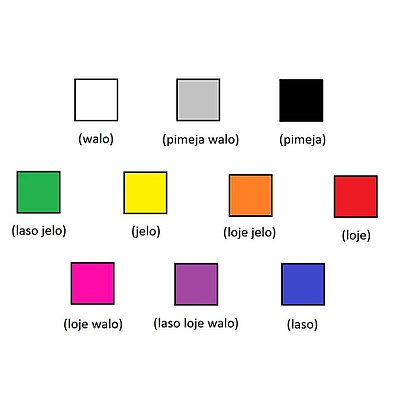
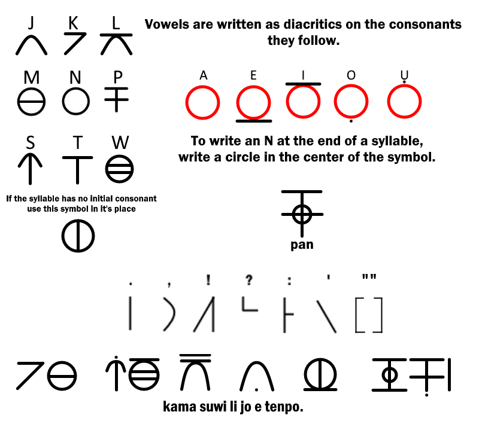

[Up]
[Up]
February 11, 2020
It is not the goal of Toki Pona to describe complex issues. Dissertations and scientific papers will never written in Toki Pona. Lawyers, bureaucrats, theologians and politicians are warned of the side-effect of this language.
It is not the aim of Toki Pona to solve the communication problems in the world. But you can learn this language in a month. Toki Pona is easy in an intelligent way and yoga for the brain. People who hate nested subordinate clauses and commas will certainly have fun with Toki Pona.
Maybe only one natural language can be compared to Toki Pona. It is the language of the Pirahá ([17]). For example this language has no recursion.
Toki Pona has evolved since 2001. Therefore these lessons are based on the tutorials from BJ Knight (jan Pije) [11] (2003) and the official Toki Pona book [15] by Sonja Lang (2014). But I tried not to take over mistakes and inaccuracies. In my lessons, great importance is attached to the presentation of grammatical rules. This avoids misunderstandings due to incorrect grammar.
So have fun with the lessons and learning of Toki Pona. Memrise helps for learning vocabulary [16]. Links related to Toki Pona can be found on the website [19]. A dictionary can be found here [19].
You can use the tool Toki Pona Parser ([20]) for spelling, grammar check and ambiguity check of Toki Pona sentences
toki pona li ' pona, tawa sina.
| letter | pronounced as in | |
| k | kill | |
| l | let | |
| m | met | |
| n | net | |
| p | pit | |
| s | sink | |
| t | too | |
| w | wet | |
| j | yet | |
Toki Pona's vowels are quite unlike English's. Whereas vowels in English are quite arbitrary and can be pronounced many different ways depending on the word, Toki Pona's vowels are all regular and never change pronunciation. If you're familiar with Italian, Spanish, Esperanto, or certain other languages, then your work is already done. The vowels are the same in Toki Pona as they are in these languages.
| letter | pronounced as in | |
| a | father | |
| e | met | |
| i | peel | |
| o | more | |
| u | food | |
| . | separator: A declarative sentence ends with a full stop. | |
| ! | separator: An imperative or an interjection sentence ends with | |
| an exclamation mark. | ||
| ? | separator: An questions always ends in a question mark. | |
| : | separator: A colon is between an hint sentences and a sentences. | |
| , | separator: A comma is used after an 'o' to address people. | |
| Optionally, it can be inserted before a preposition. | ||
Most sentences are declarative sentences and end with a period. Declarative sentences make statements or assumptions.
Question sentences are interrogative sentences that formulate a question. They end with a question mark.
Imperative sentences are sentences that formulate a command. They end with an exclamation mark.
Exclamatory sentences (interjections) are sentences that express admiration or astonishment. This also includes greetings. They end with an exclamation mark or a period.
Headlines (titles) are usually not complete sentences and do not end with a punctuation mark.
Please always pay attention to correct punctuation marks. Wrong or missing punctuation marks impair the intelligibility.
![[*]](http://rowa.giso.de/latexicons//crossref.png) )
)
Please write down your answers and check them afterwards.
| What are separators? | ||
| Which phrase has no punctuation character at the end? | ||
| Which separator is at the end of a declarative sentence? | ||
| When are official toki pona words capitalized? | ||
| What is usually not allowed before or after a separator? | ||
Welcome to the world of Toki Pona! The truth is that lots of words are like this in Toki Pona. Because the language has such a small vocabulary and is so basic, the ambiguity is inevitable. However, this vagueness is not necessarily a bad thing. Because of the vagueness, a speaker of Toki Pona is forced to focus on the very basic, unaltered aspect of things, rather than focusing on many minute details.
Another way that Toki Pona is ambiguous is that it can not specify whether a word is singular or plural. For example, jan can mean either 'person' or 'people'. If you've decided that Toki Pona is too arbitrary and that not having plurals is simply the final straw, don't be so hasty. Toki Pona is not the only language that doesn't specify whether a noun is plural or not. Japanese, for example, does the same thing.
Toki Pona has no Tenses. The verbs don't change. If it's absolutely necessary, there are ways of saying that something happened in the past, present, or future.
As you can see in the vocabulary list, most words can be used in different word types. They remain unchanged. The word type is derived from the position in the sentence. In this lesson, we will deal with nouns, pronouns, verbs, adjectives and a special separator.
A noun is a word for a person, place or thing. An adjective is a word that describes a noun. A verb describes an action.
Pronouns are proxies for different types of words. They are used in the same place as the word to be represented and have the same grammatical characteristics as this one. Pronouns are not words of content, but they denote persons or things by referring to the context. Personal pronouns (I, you, ...) represent nouns. Possessive pronouns (my, your, ...) represent adjectives. In the next few lessons we will learn more about other types of pronouns.
| mi moku. | I eat. | |
| sina pona. | You fix. |
In these sentences personal pronouns mi and sina are in each case the subject phrase. In Toki Pona, a subject phrase is always at the beginning of the sentence. In these examples, the subject phrases consist of only one subject (mi or sina).
The subject is the carrier of the action, process or state. It is the most important addition to the verb in the sentence, a complete sentence always contains a subject. You ask for the subject with whom or what.
The verbs moku and pona form the predicate phrase in these examples. The predicate is a core element in a sentence and is the statement of the sentence. No statement sentence is possible without a predicate.
In most languages, a predicate is formed by a verb, but this is not mandatory in all languages. As we will soon see, in Toki Pona the predicate is not necessarily formed by a verb. The difference between verb and predicate is that verb designates a word part and predicate designates a grammatical function. A predicate and possible objects form a predicate phrase.
Regular sentences can also be formed in other languages without a verb appearing in them. Examples are Russian and Arabic. These languages are called no-copula languages.
A copula is a word that connects the subject and predicate ('copulates'). If a 'normal' verb is the predicate, one does not need an additional copula. It occurs only if a noun, pronoun or adjective is the predicate. In English the verb 'to be' serves as the copula. No-copula language, like Toki Pona, does not require a copula.
A noun then functions as a predicate noun or an adjective serves as predicate adjective. But this noun or adjective does not become a verb. An empty verb slot cannot, however, form a predicate phrase on its own. A noun or adjective must follow. That is, directly after mi or sina the sentence cannot be finished yet.
In no-copula languages, the word form usually indicates whether the predicate is a verb, noun or adjective. This is not possible in Toki Pona. In these lessons an apostrophe is used to indicate a subsequent noun or adjective. But that's not an official rule.
| mi moku. | I eat. | |
| mi ' moku. | I am food. | |
| sina pona. | You fix. | |
| sina ' pona. | You are good. |
Because Toki Pona lacks 'to be', the exact meaning is lost. moku in this sentence could be a verb, or it could be a noun; just as pona could be an adjective or could be a verb. In situations such as these, the listener must rely on context. After all, how often do you hear someone say 'I am food.'? I hope not very often! You can be fairly certain that mi moku means 'I'm eating'.
| telo li pona. | Water is cleaning. | |
| suno li suno. | The sun is shining. | |
| moku li ' pona. | The food is good. | |
| ona li ' moku. | It is food. |
Is the verb slot empty, after li can follow a noun or adjective as well. As already written, an empty verb slot cannot form a predicate phrase on its own. A noun or adjective must follow. That is, directly after li the sentence can not yet be finished or an object can follow.
)
| What is a verb | ||
| What is a noun? | ||
| What is li used for? | ||
| What does a personal pronoun replace? | ||
| How to recognize nouns, pronouns, verbs and adjectives in toki pona? | ||
| What is a subject? | ||
| After which subject phrases is li not used? | ||
| Where does the subject stand in the sentence? | ||
| Can an empty verb slot alone form a predicate? | ||
| When can a verb slot be empty? | ||
| What is a predicate? | ||
| A complete sentence in toki pona always contains... | ||
| What kinds of words can be used in toki pona to form a predicate? | ||
| What is an adjective? | ||
| Where are possible adjective slots? | ||
| Why can't a sentence be ended after li? | ||
Which word types can represent the respective word in the sentence after the hyphen? Example:
| mi - mi moku. | personal pronoun | |
| sina - sina pona. | ||
| moku - moku li ' pona. | ||
| ona - ona li ' moku. | ||
| li - moku li ' pona. | ||
Try to translate these sentences. You can use the tool Toki Pona Parser ([20]) for spelling and grammar check.
| People are good. | ||
| I'm eating. | ||
| You're tall. | ||
| Water is simple. | ||
| The lake is big. | ||
| suno li ' suli. | ||
| mi ' suli. | ||
| jan li moku. | ||
| mi moku e kili. | I eat fruit. |
Also we discussed how sina pona, like mi moku, has two possible meanings. 'You are good' or 'You're fixing'. Normally, it would mean 'You are good' simply because no one really says 'I'm fixing' without actually telling what it is that they are trying to fix.
| ona li pona e ilo. | She's fixing the machine. | |
| mi pona e ijo. | I'm fixing something. |
Only a (composite) verb can stand in front of the e. More specifically, it is a slot for a transitive verb. Transitive verbs are verbs after which a direct object (accusative object) can stand. A transitive verb does something to the direct object.
The separator e preface the direct object. An object is an optional record supplement. A direct object is most strongly influenced by the action (i. e. the predicate). Your can ask for direct object (accusative object) by' Who' or' What' (' What does she repair?''). The direct object is part of the predicate phrase.
In the direct object is the first slot after the separator e always a noun or pronoun slot. In the above examples the noun slots were filled with kili and ijo.
A reflexive pronoun represents the subject in the direct object. So a slot for a reflective pronoun is located after the separator e. In the following example, ona is a reflexive pronoun, since it refers to the subject jan.
| jan li telo e ona. | A person washes himself. |
In this sentence the first mi is a personal pronoun. The mi after the e is a reflexive pronoun.
| mi telo e mi. | I wash myself. |
Here a sentence with sina as personal and reflective pronouns
| sina telo e sina. | You wash yourself. |
Here a sentence with ona as personal and reflective pronouns
| ona li telo e ona. | She washes herself. |
It is possible to use the separator li several times in a sentence. Each separator li starts a new predicate phrase. This allows you to assign several actions or properties to one subject.
| ona li ' pona li unpa. | He's awesome and has sex. |
In the next example the separator li is still omitted before moku because the subject of the sentence is the personal pronoun mi, we still use it before the second predicate, pakala. Without the separator li there, the sentence would be chaotic and confusing. Compound sentences with personal pronoun sina as subject follow this same pattern.
| mi moku li pakala. | I eat and destroy. |
Predicate phrases are not nested. You can change the order.
ona li moku li ' pona. = ona li ' pona li moku.
Each predicate phrase can of course contain direct objects.
| mi moku e moku li lukin e ma. | I eat the food and look at the landscape. |
The official Toki Pona book recommends to use only one predicate phrase for the personal pronouns mi or sina as subject.
| mi moku e kili e telo. | I eat/drink fruit and water. | |
| mi wile lukin e ma e suno. | I want to see the land and the sun. |
e phrases are not nested. You can change the order.
mi moku e moku e telo. = mi moku e telo e moku.
We can combine several li and e. We have two predicate phrases with two direct objects each. However, it is better to use several short sentences.
| mi moku e kili e telo li lukin e ma e jan. I eat fruits and water and see land and people. |
)
| How to ask for the direct object? | ||
| What word type has a predicate before the separator e? | ||
| To which phrase in the sentence belongs a direct object? | ||
| What kinds of words are possible after the separator e? | ||
| What is a predicate noun? | ||
| Where are possible slots for reflexive pronouns? | ||
| Is it possible to describe several properties of a subject with several e? | ||
| How can you create multiple predicate phrases in a sentence? | ||
Which word types can represent the respective word in the sentence after the hyphen? Example:
| mi - mi moku. | personal pronoun | |
| e - mi moku e kili. | ||
| pona - mi pona e ijo. | ||
| The second sina - sina telo e sina. | ||
| ilo - ona li pona e ilo. | ||
Try to translate these sentences. You can use the tool Toki Pona Parser ([20]) for spelling and grammar check.
| I have a tool. | ||
| She's eating fruit. | ||
| Something is watching me. | ||
| Pineapple is a food and is good. | ||
| He washes himself. | ||
| mi ' jan li ' suli. | ||
Adverbs refer to the circumstances in which an action takes place. Since actions are described by verbs, adverbs describe verbs. For example, in the phrase 'You sing well.' the verb 'singing' is described in more detail with the adverb 'well'.
In Toki Pona adverbs follow the verb they describe. Possible adverb slots are therefore only available after verbs. Adverbs cannot therefore stand after nouns, adjectives, prepositions or separators.
Since verbs belong to the predicate phrase, adverbs also belong to the predicate phrase. In toki pona a predicate phrase can contain a noun as predicate noun or an adjective as predicate adjective. In this case the verb slot is empty, so there are no adverb slots in such a predicate phrase.
In this sentence the transitive verb lawa with adverb pona is described.
| mi lawa pona e jan. | I lead people well. |
In the following sentences adverbs describe ike, sewi, mute, lili the respective verbs utala, lukin, wile, lukin.
| mi utala ike. | I fight badly. | |
| sina lukin sewi e suno. | You look up at the sun. | |
| ona li wile mute e ni. | He wants that a lot. | |
| mi lukin lili e ona. | I barely saw it. |
You should not use more than three adverbs after a verb. An adverb should not be used more than once.
| ona li pona ike mute e ilo. | He was very bad at fixing the machine. | |
| mi mute lukin mute e ma. | I'm visibly increasing the size of the country. |
To say that you want to do something definite, use the auxiliary verb wile.
| mi wile lukin e ma. | I want to see the countryside. | |
| mi wile pakala e sina. | I must destroy you. | |
| ona li wile jo e ilo. | He would like to have a tool. | |
| sina kama e ni: mi wile moku. | You caused this: I want to eat. | |
| You made me hungry. |
Very often the auxiliary verb kama is used together with the main verb jo.
| kama jo | get | |
| mi kama jo e telo. | I got the water. |
)
Please write down your answers and check them afterwards.
| What are adverbs? | ||
| Can an adverb be ranked according to a predicate noun? | ||
| Where are slots for adverbs located? | ||
| What kind of words describes an action? | ||
| When does a predicate phrase contain slots for adverbs? | ||
| What is an auxiliary verb used for? | ||
| Which phrase in the sentence can contain an auxiliary verb? | ||
Which word types can represent the respective word in the sentence after the hyphen? Example:
| mi - mi moku. | personal pronoun | |
| kama - mi kama jo e telo. | ||
| wile - mi wile lukin e ma. | ||
| ike - mi lawa ike e jan. | ||
| jan - mi ' jan. | ||
Try to translate these sentences. You can use the tool Toki Pona Parser ([20]) for spelling and grammar check.
| jan li pona ilo e ilo. | ||
| sina lukin unpa mute e mi. | ||
| jaki li jaki lili e mi. | ||
| sina len nasa jaki e sina. | ||
| ilo li sewi e sewi. | ||
| ona li lawa utala e utala. | ||
| mi wile unpa e ona. | ||
| jan li wile jo e ma. | ||
| She increases the property very badly. | ||
| I want to have a lot of sex with you. | ||
| She was barely dressed. | ||
| The sun shines warmly on the land. | ||
| She's good. | ||
| He wants to destroy the tool. | ||
| She is thirsty. | ||
We had already got to know predicate adjectives as part of a predicate phrase. A predicate adjective describes the noun of the subject phrase. In this example, the predicate adjective pona in the predicate phrase describes the noun jan in the subject phrase.
| jan li ' pona. | The person is good. |
Generally speaking, one can say that adjectives describe nouns. As in other languages, adjectives can also be written directly with the noun. In Toki Pona the adjectives come after the noun to be described are written. This is exactly the opposite in English, but in other languages, such as Italian, this is normal. Possible adjective slots are therefore located directly after nouns slots and, as described above, predicate adjectives in the predicate phrase. Noun slots are possible at the beginning of a subject phrase, at the beginning of a predictive phrase as predicate phrases, and in object phrases. This means that adjective slots are possible in subject phrases and predictive phrases. Adjectives are comparable with adverbs but in toki pona some more complex. The noun jan is described here with the adjective pona.
| jan pona | friend (good person) |
A friend is nothing but a good person. Since Toki Pona has a very small vocabulary, we often have to combine nouns with adjectives to say a certain term. Here are further examples.
| jan pakala | an injured person, victim, etc. | |
| ilo moku | an eating utensil (fork/spoon/knife) |
You should not use more than three adjectives after a noun. One adjective should not be used more than once.
| jan utala | soldier | |
| jan utala nasa | stupid soldier | |
| jan utala nasa mute | many stupid soldiers |
As you might have noticed, mute as adjectives come at the end of the phrase. The reason for this is that the phrases build as you go along, so the adjectives must be put into an organized, logical order. Notice the differences in these two phrases.
| jan utala nasa | stupid soldier | |
| jan nasa utala | fighting fool |
Here are some handy noun adjective combinations using words that you've already learned and that are fairly common.
| ike lukin | ugly | |
| pona lukin | pretty, attractive | |
| jan ni li pona lukin | That person is pretty. | |
| jan ike | enemy | |
| jan lawa | leader | |
| jan lili | child | |
| jan sewi | saint, God, Flying Spaghetti Monster | |
| jan suli | adult | |
| jan unpa | lover, prostitute | |
| ma telo | mud, swamp | |
| ma tomo | city, town | |
| mi mute | we, us | |
| ona mute | they, them | |
| telo nasa | alcohol, beer, wine | |
| tomo telo | restroom | |
| ilo suno | flashlight |
Several predicate adjectives are also possible. However, it is usually not possible to distinguish between a predicate noun at the first position in the predicate phrase and a predicate adjective. While mute in this example can only be an adjective, pona can be an adjective or a noun.
| jan li ' pona mute. | Man is very good. / The human being is the many good things. |
| mama | a parent in general (mother or father) | |
| mama meli | mother | |
| mama mije | father |
A possessive pronoun expresses a property or affiliation and is placed after the corresponding (composite) noun. This means that for a noun with adjectives, the possessive pronoun is placed after the adjectives. For a noun without adjectives, the possessive pronoun is located after the noun. In these examples are mi, sina and ona possessive pronouns.
| tomo pona mi | my nice house | |
| ma sina | your country | |
| telo ona | his/her/its water |
The demonstrative pronoun is a kind of word with which the speaker refers to an item of conversation. The demonstrative pronoun ni can be used both like an adjective and like a noun. A slot for an adjective demonstrative pronoun is therefore possible after a noun.
| jan ni li pona. | This bloke is good. | |
| jan li lukin e ijo ni. | The guy's looking at this thing. |
A noun demonstrative pronoun is used instead of the noun. Slots for noun demonstrative pronouns therefore correspond to the positions of noun slots in the sentence.
| ni li pona... | This is good. | |
| jan li lukin e ni. | The guy looks at that one. |
)
Please write down your answers and check them afterwards.
| What does a possessive pronoun replace? | ||
| What types of demonstrative pronouns are there? | ||
| What is more complex in Toki Pona: adjectives or adverbs? | ||
| By what kind of words are nouns described? | ||
| What is the difference between adverbs and adjectives? | ||
| Where are adjective slots located? | ||
| Can an adjective follow a predicate noun? | ||
See how well you can read the following poem.
| mi jo e kili. | ||
| ona li ' pona li ' lili. | ||
| mi moku lili e kili lili. | ||
Try to translate these sentences. You can use the tool Toki Pona Parser ([20]) for spelling and grammar check.
| The leader drank dirty water. | ||
| I need a fork. | ||
| An enemy is attacking them. | ||
| That bad person has strange clothes. | ||
| We drank a lot of vodka. | ||
| Children watch adults. | ||
| mi lukin e ni. | ||
| mi lukin sewi e tomo suli. | ||
| seli suno li seli e tomo mi. | ||
| jan lili li wile e telo kili. | ||
| ona mute li nasa e jan suli. * | ||
| mi kama e pakala. | ||
* Notice how even though nasa is typically an adjective, it is used as a verb here.
We've already learned transitive verbs. A transitive verb does something to the direct object. On the other hand, verbs that do not affect an object are called intransitive verbs. An intransitive verb is followed by either no object or an indirect object. In the sentences, 'I am.' and 'I am in the house.' is 'am' an intransitive verb. There is no e between intrasitive verb and indirect object.
The intransitive verb lon means 'to be there' or 'to exist'. Since there is no other predicate before lon there must be a verb lon.
| suno li lon sewi. | The sun is in the sky. | |
| kili li lon poki. | The fruit is in the basket. | |
| mi lon tomo. | I'm in the house. |
The intransitive verb kepeken means 'to use'.
| mi kepeken ilo. | I'm using tools. | |
| sina wile kepeken ilo. | You have to use tools. | |
| mi kepeken poki ni. | I'm using that cup. |
In some other lessons the transitive verb kepeken is used. This is surely because with 'What' you can ask for the object after kepken. As however the object is not directly influenced by the verb kepeken, it is an indirect object and kepeken an intransitive verb.
The intransitive verb kon means 'to breathe'.
| jan ni li kon ike. | This person is breathing badly. |
In contrast, the transitive verb kon means 'to blow away something'.
| mi kon e ilo suno. | I blow out the candle. |
The intransitive verb kama means 'to come' or 'to arrive'.
| pona li kama. | The good will come. |
The intransitive verb pakala means 'to screw up', 'to fall apart' or 'to break'.
| tomo ni li pakala. | This house is falling apart. |
The intransitive verb sewi means 'to get up'.
| mi sewi. | I get up. |
We have learned that a verb can be modified by an adverb. This of course also applies to intransitive verbs. In this example, the adverb mute modifies the intransitive verb lon.
| mi lon mute tomo. | I'm often in the house. |
An intransitive verb can of course be preceded by an auxiliary verb.
| mi wile lon tomo. | I want to be in the house. |
)
| How you can not ask for an indirect object? | ||
| Which object type is strongly influenced by the predicate? | ||
| Which phrase in the sentence does the indirect object belong to? | ||
| What slot is in the first position in an indirect object? | ||
| What do you call verbs that don't affect an object? | ||
| What stands in front of an indirect object in Toki Pona? | ||
| Where is a slot for an adjective demonstrative pronoun possible? | ||
| Where's an auxiliary verb slot? | ||
Try to translate these sentences. You can use the tool Toki Pona Parser ([20]) for spelling and grammar check.
| This is for my friend. | ||
| The tools are in the container. | ||
| That bottle is in the dirt. | ||
| They are arguing. | ||
| The woman gave birth to her child. | ||
In the prepositional object is the first slot after the preposition always a noun or pronoun slot. After that, optional slots for adjectives, possessive pronouns and demonstrative pronouns are possible. In Toki Pona there is an optional prepositional object at the end of a sentence. Possible direct or indirect objects are always in front of a prepositional object. Like the other object types, a prepositional object is an optional part of a predicate phrase.
The preposition kepeken means 'with' or 'using'.
| mi moku, kepeken ilo moku. | I eat using a fork/spoon/ | |
| any type of eating utensil. | ||
| mi lukin, kepeken ilo suno. | I look using a flashlight. |
The preposition lon means 'be (located) in/at/on'.
| mi moku, lon tomo. | I eat in the house. | |
| mi telo e mi, lon tomo telo. | I bathe myself in the restroom. |
Since there is both preposition lon and the intransitive verb lon, the statement of the following sentences may be confusing.
| mi wile lon tomo. | I want to be at home. / I want in a house. |
The sentence has at least two possible translations. The first translation states that the speaker wishes he were at home. The second translation states that the speaker wants to do something in a house. After a comma here only the preposition lon is possible.
| mi wile, lon tomo. | I want in a house. |
When you say, 'I want to be home.' you have to divide the sentence with a colon into two sentences.
| mi wile e ni: mi lon tomo. | I want this: I'm at home. |
Toki Pona often uses this e ni: trick. Before and after the colon has to be complete sentences. Toki Pona has no nested subordinate clauses.
| sina toki e ni, tawa mi: sina moku. | You told me that you are eating. |
In the last sentence there is the preposition tawa after the comma.
| mi toki, tawa sina. | I talk to you. | |
| ona li lawa e jan, tawa ma pona. | He led people to the good land. | |
| ona li kama, tawa ma mi. | He's coming to my country. |
In the following sentences the first tawa is an intransitive verb. The second tawa is a preposition and initiates the prepositional object.
| mi tawa, tawa tomo mi. | I'm going to my house. | |
| ona mute li tawa, tawa utala. | They're going to the war. | |
| sina wile tawa, tawa telo suli. | You want to go to the ocean. | |
| ona li tawa, tawa sewi kiwen. | She's going up the rock. |
In the following sentences the first tawa is an transitive verb. The second tawa is a preposition.
| mi tawa e mi, tawa tomo mi. | I'm moving myself to my house. | |
| mi tawa e kiwen, tawa sewi. | I'm moving the rock to the peak. |
In Toki Pona, to say that you (don't) like something, we have pattern, and the pattern use tawa as a preposition. This is done according to the pattern 'it is good to me' or 'it is bad to me'.
| ni li ' pona, tawa mi. | That is good to me. / I like that. | |
| ni li ' ike, tawa mi | That is bad to me. / I don't like that. | |
| kili li ' pona, tawa mi. | I like fruit. | |
| toki li ' pona, tawa mi. | I like talking. / I like languages. | |
| utala li ' ike, tawa mi. | I don't like wars. | |
| telo suli li ' ike, tawa mi. | I don't like the ocean. | |
| pipi li ' ike, tawa mi. | I hate spiders. | |
| ali li ' pona, tawa mi. | Everything's fine to me. | |
| ma ali li ' pona, tawa mi. | All nations are good to me.. |
Toki Pona does not use clauses. So for example, if you wanted to say 'I like watching the countryside,' it's best to split this into two sentences.
| mi lukin e ma. ni li ' pona, tawa mi. | I'm watching the countryside. This is good to me. |
Of course, you could choose to say this same sentence using other techniques.
| ma li pona lukin. | The countryside is good to look at. |
The preposition tawa can also mean 'for'.
| mi pona e tomo, tawa jan pakala. | I fixed the house for the disabled man. |
There are ambiguities since tawa can also be used as an adjective. tawa is used as an adjective to make the phrase we use for 'car', 'boat' or 'airplane'.
| tomo tawa | car (moving construction) | |
| tomo tawa telo | boat, ship | |
| tomo tawa kon | airplane, helicopter |
Consider the following sentence.
| mi pana e tomo tawa sina. | ? | |
After 'mi pana e tomo', both an adjective slot and a preposition slot are possible.
With the adjective tawa the sentence means 'I gave your car.'. With the preposition tawa, however, the sentence means 'I gave the house to you.'. You can insert a comma before tawa to force only a slot for preposition. It is better to split the sentence.
| mi jo e tomo tawa sina. mi pana e ni tawa sina. | I have your car. I give it to you. | |
| ni li tomo. mi pana e ni tawa sina. | This is a house. I give it to you. |
In this set the intransitive verb kama and die preposition tawa is used.
| ona li kama, tawa tomo mi. | He came to my house. |
The preposition sama means 'like', 'as' or 'seem'.
| ona li lukin, sama pipi. | He looks like a bug. |
On the other hand, directly after the separator li no preposition can follow. There would be no predicate. The adjective sama is used here as a predicate adjective.
| jan ni li ' sama mi. | That person is like me. |
The preposition tan menas 'from', 'by', 'because of' or 'since'.
| mi moku, tan ni: mi wile moku. | I eat because I'm hungry. |
Neither indirect objects nor prepositional objects are directly influenced by the predicate. Prepositional objects are therefore a special form of indirect objects. In the following example the indirect object ilo ni is used with the intrasitive verb kepeken.
| mi pona e tomo tawa. mi kepeken ilo ni. | I repair the car. I use this tool. |
It is possible to formulate the statement shorter and more clearly, if th preposition kepken the prepositional object ilo ni introduces.
| mi pona e tomo tawa, kepeken ilo ni. | I repair the car with this tool. |
However, if one absolutely wants to use this tool, one must use the intransitive verb kepeken. Auxiliary verbs can only be used with verbs and not with prepositions. Before the intransitive verb kepeken auxiliary verb wile is used here.
| mi pona e tomo tawa. mi wile kepeken ilo ni. | I repair the car. I want to use this tool. |
Consider the intransitive verb tawa.
| mi tawa sina. | I'll go to you. / I'll leave you. | |
This sentence is ambiguous. After mi here both a noun (predicate noun) and an adjective slot (predicate adjective) is possible.
| mi tawa sina. | I am your movement. | |
It is better to use a prepositional object. If, as recommended in these lessons, a comma is placed before the preposition, the sentence becomes clearer.
| mi tawa, tawa sina. | I'll visit you. | |
| mi tawa, tan sina. | I'll leave you. |
It is also possible to formulate the sentence with the reflexive pronoun mi as a direct object. The first tawa is here a transitive verb. The second tawa is a preposition.
| mi tawa e mi, tawa sina. | I move towards you. | |
)
| What is closely related to a preposition? | ||
| Which phrase in the sentence does the prepositional object belong to? | ||
| Where are preposition slots located? | ||
| At which position in the sentence can a prepositional object be located? | ||
| Which separators can be used to form composite sentences? | ||
| Which slots are possible in the second position in the prepositional object? | ||
Try to translate these sentences. You can use the tool Toki Pona Parser ([20]) for spelling and grammar check.
| I fixed the flashlight using a small tool. | ||
| I like Toki Pona. | ||
| We gave them food. | ||
| I want to go to his house using my car. | ||
| People look like ants. | ||
| sina wile kama, tawa tomo toki. | ||
| jan li toki, kepeken toki pona, lon tomo toki. | ||
| mi tawa, tawa tomo toki. ona li ' pona, tawa mi. | ||
| sina kama jo e jan pona, lon ni. | ||
| sama li ' ike. | ||
| mi sona e tan. | ||
In Toki Pona relative location information is formed with special nouns. These special nouns are called 'spatial nouns'. In addition to the noun, adjectives, possessive pronouns or demonstrative pronouns are required for the relative location information.
A spatial noun is preceded by either an intransitive verb or a preposition. This means that relative location information is either in an indirect object or a prepositional object and is therefore part of a predicate phrase.
Usually the intransitive verb lon or preposition lon is used before spatial nouns. If there is no verb before lon, lon cannot be a preposition. In these examples the intransitive verb lon is used.
| pipi li lon anpa mi. | The bug is underneath me. | |
| telo suli li lon monsi mi. | The sea is behind me. | |
| moku li lon insa mi. | Food is inside me. | |
| ma li lon noka mi. | Land is under my feet. | |
| ona li lon sewi mi. | He is in my above, i.e. he is above me. | |
| tomo li lon sinpin mi. | The house is in front of me. |
The following examples contain a verb. Hence, preposition lon is used.
| mi moku, lon poka sina. | I'm eating beside [or with] you. | |
| ona li pona e ilo, lon tomo ona. | He repairs the tools in his house. |
In this sentence the second tawa is a preposition and stands before the spatial noun noka.
| mi tawa e mi, tawa noka sina. | I bow before you. |
| mi anpa e jan utala. | I defeated the warrior. |
| poka telo | water side, the beach |
| jan poka | neighbor, someone who is beside you |
)
| How do you create relative location information in Toki Pona? | ||
| What is a possessive pronoun? | ||
| Where is a slot for a substantive demonstrative pronoun possible? | ||
| Which separator is at the end of a declarative sentence? | ||
| What is a predicate adjective? | ||
| Which sentence phrases can contain spatial nouns be found? | ||
Try to translate these sentences. You can use the tool Toki Pona Parser ([20]) for spelling and grammar check.
| My friend is beside me. | ||
| The sun is above me. | ||
| The land is beneath me. | ||
| Bad things are behind me. | ||
| I'm okay because I'm alive. * | ||
| I look at the land with you. | ||
| poka mi li ' pakala. | ||
| mi kepeken poki li kepeken ilo moku. | ||
| jan li lon insa tomo. | ||
* lon as a verb by itself means to exist, to be real, etc.
Sentence elements are negated by ala.
| mi lape ala. | I'm not sleeping. | |
| mi musi ala. | I'm not having fun. / I'm bored. | |
| mi wawa ala. | I'm not strong. / I'm weak. | |
| mi wile ala tawa musi. | I don't want to dance. | |
| tawa musi | dance (move entertainingly) | |
| mi wile ala pali. | I'm lazy. |
| jan ala li toki. | Nobody is talking. |
| ala li ' jaki. | Nothing is dirty. |
Yes/No questions are formed in toki pona according to a simple pattern. ala is appended to the part of the sentence that is asked for and the part of the sentence is repeated. As a rule, this part of the sentence is the entire predicate (sentence statement). The rest of the sentence structure does not change. A question is ended with a question mark.
If the yes/no question refers to an intransitive verb, the adverb ala is appended to it and the intransitive verb is repeated. Consider the following example.
| sina tawa, tan mi. | You're leaving me. |
If we want to ask 'Are you leaving me?', we append the adverb ala to the intransitive verb tawa. Then we repeat the intransitive verb tawa.
| sina tawa ala tawa, tan mi? | Are you leaving me? |
Here are more examples.
| ona li lon ala lon tomo? | Is he in the house? | |
| sina kepeken ala kepeken ilo? | Are you using the tool? | |
| pona li kama ala kama? | Is the good coming? | |
| sina sewi ala sewi? | Are you getting up? |
If the yes/no question refers to a transitive verb, the adverb ala is appended to it and the transitive verb is repeated.
| sina pona ala pona e ilo? | Are you fixing the tool? | |
| sina pana ala pana e moku tawa jan lili? | Did you give food to the child? | |
| pipi li moku ala moku e kili? | Are the bugs eating the fruit? | |
| ona li mama ala mama e sina? | Does she mother you? |
| sina wile ala wile moku? | Do you want to eat? | |
| sina ken ala ken lape? | Can you sleep? | |
| sina kama ala kama jo e pali ni? | Did you get this job? |
In the lessons of B. J. Knight (2003) and the official Toki Pona book of Sonja Lang [15] yes/no questions with ala are defined only with verbs. But this contradicts their own examples as well as common practice. For example one cannot formulate the question 'Is she a mother? In these lessons I will therefore not adhere to this limitation.
If the yes/no question refers to a predicate noun, the adjective ala is added to it and the predicate noun is repeated.
| ona li ' mama ala ' mama ? | Is she a parent? | |
| ni li ' jan ala ' jan? | Is this a person? | |
| ni li ' kili ala ' kili? | Is this a banana? | |
| ni li ' tomo pi telo nasa ala ' tomo pi telo nasa? | Is this a pub? | |
| ona li ' jan pi pona lukin ala ' jan pi pona lukin? | Is she an attractive person? |
If the yes/no question refers to a predicate adjective, the adjective ala is added to it and the predicate adjective is repeated.
| sina ' pona ala ' pona? | Are you OK? | |
| mi ' pona ala ' pona, tawa sina? | Do you like me? | |
| suno li ' suli ala ' suli? | Is the sun big? | |
| len sina li ' telo ala ' telo? | Are your clothes wet? |
If you want to say 'yes', you simply repeat the predicate or the auxiliary verb of the sentence. If you want to say 'no', you repeat the predicate or the auxiliary verb and add ala after it.
| sina wile ala wile moku? | Do you want to eat? | |
| wile | Yes. | |
| wile ala | No. | |
| sina lukin ala lukin e kiwen? | Do you see the rock? | |
| lukin | Yes. | |
| lukin ala | No. | |
| sina sona ala sona e toki mi? | Do you understand what I'm saying? | |
| sona | Yes. | |
| sona ala | No. | |
| ni li ' tomo pi telo nasa ala ' tomo pi telo nasa? | Is this a pub? | |
| tomo pi telo nasa. | Yes. | |
| tomo pi telo nasa ala. | No. | |
)
| Which separator is at the end of a question? | ||
| How is a verb negated in Toki Pona? | ||
| How do you answer in Toki Pona negative to a yes/no question? | ||
| How do you answer positively to a yes/no question in Toki Pona? | ||
Try to translate these sentences. You can use the tool Toki Pona Parser ([20]) for spelling and grammar check.
| You have to tell me why. * | ||
| Is a bug beside me? | ||
| I can't sleep. | ||
| I don't want to talk to you. | ||
| He didn't go to the lake. | ||
| sina wile ala wile pali? wile ala. | ||
| jan utala li seli ala seli e tomo? | ||
| jan lili li ken ala moku e telo nasa. | ||
| sina kepeken ala kepeken ni? | ||
| sina ken ala ken kama? | ||
| sina pona ala pona? | ||
* Think: 'You have to tell the reason to me.'
| ma suli Amelika | the Americas | |
| ma suli Amelika lete | North America | |
| ma suli Amelika seli | South America | |
| ma suli Antasika | Antarctica | |
| ma suli Apika | Africa | |
| ma suli Asija | Asia | |
| ma suli Elopa | Europe | |
| ma Epanja | Spain | |
| ma Tosi | Germany | |
| ma tomo Lanten | London | |
| ma tomo Sanpansiko | San Francisco | |
| toki Inli | English | |
| toki Epelanto | Esperanto | |
| meli Mawija | Maria | |
| jan Santa | Santa Claus |
Unofficial words can be adapted to the phonetic rules of Toki Pona.
The appendix (see page ) describes how to proceed.
For example, America becomes Mewika, Canada becomes Kanata.
In the appendix you will find a list of important unofficial words (see page ).
| ma Kanata li ' pona. | Canada is good. | |
| ma Italija li ' pona lukin. | Italy is beautiful. | |
| mi wile tawa, tawa ma Tosi. | I want to go to Germany. |
Since unofficial words are adjectives, they can also be used as predicate adjectives.
| ma mi li ' Tosi. | My homeland is Germany. |
| ma suli Apika | Africa |
| ma tomo Lantan li ' suli. | London is big. | |
| ma tomo Pelin | Berlin | |
| ma tomo Loma | Rome | |
| mi kama, tan ma tomo Pelin. | I'm from Berlin. |
Here is an example of an unofficial word as predicate adjective.
| ma tomo mi li ' Pelin. | My homecity is Berlin. |
| toki Inli li ' pona. | The English language is good. | |
| ma Inli li ' pona. | England is good. | |
| toki Kanse | French language | |
| toki Epelanto li ' pona. | Esperanto ist einfach. |
Here is an example of an unofficial word as predicate adjective.
| toki mi li ' Tosi. | My mother tongue is German. |
| jan Kanata | Canadian person | |
| jan Mesiko | Mexican person | |
| meli Italija | Italian woman |
| jan Lisa li ' pona. | Lisa is cool. |
Like for the names of countries, we often adapt a person's name to fit into Toki Pona's phonetic rules. Keep in mind that no one is going to pressure you to adopt a tokiponized name; it's just for fun.
| jan Pentan li pana e sona, tawa mi. | Brandon teaches to me. | |
| jan Mewi li toki, tawa mi. | Mary's talking to me. | |
| jan Nesan li ' musi. | Nathan is funny. | |
| jan Eta li ' jan unpa. | Heather is a whore. | |
| pana e sona | to teach (give knowledge) |
This is the way to say your name.
| mi ' jan Pepe. | I am Pepe. | |
| nimi mi li ' Pepe. | My name is Pepe. |
Nobody is forcing you to use a name in Toki Pona style. This is pure fun.
| mi ' jan "Robert". | I'm Robert. |
Ideologies and religions are named with the noun nasin, the adjective sewi and the corresponding unofficial word (adjective).
| nasin sewi Patapali | Pastafari |
)
| What are proper names in Toki Pona? | ||
| Where are slots for predicate adjectives located? | ||
| How are names in toki pona highlighted? | ||
| How is the original spelling of a name marked? | ||
| Which slots can unofficial words fill? | ||
| What kind of word type must unofficial words be used together with? | ||
Try to translate these sentences. You can use the tool Toki Pona Parser ([20]) for spelling and grammar check.
| Susan is crazy. | ||
| I come from Europe. | ||
| My name is Ken. | ||
| Hello, Lisa. | ||
| I want to go to Australia. | ||
| mi wile kama sona e toki Inli. | ||
| jan Ana o pana e moku, tawa mi! | ||
| jan Mose o lawa e mi mute, tawa ma pona! | ||
| jan Ken o, pipi li lon len sina. | Ken, a bug is on your shirt. | |
| jan Keli o, sina ' pona lukin. | Kelly, you are pretty. | |
| jan Mawen o, sina wile ala wile moku? | Marvin, are you hungry? | |
| jan Tepani o, sina ' ike, tawa mi. | Steffany, I don't like you. |
The command form (imperative) is introduced with o and ends with an exclamation mark. The interjection word o is the subject here.
| o pali! | Work! | |
| o awen! | Wait! | |
| o ' pona! | Be good! | |
| o lukin e ni! | Watch this! | |
| o tawa, tawa ma tomo, lon poka jan pona sina! | Go to the city with your friend! |
We've learned how to address people and how to make commands; now let's put these two concepts together. Suppose you want to address someone and tell them to do something. Notice how one of the o's got dropped, as did the comma.
| jan San o, ... | John, ... | |
| ... o tawa tomo sina! | ... go to your house! | |
| jan San o tawa tomo sina! | John, go to your house! | |
| jan Ta o toki ala, tawa mi! | Todd, don't talk to me! | |
| jan Sesi o moku e kili ni! | Jessie, eat this fruit!. |
The separator o replaces the separator li. After the personal pronouns mi and sina also the separator o is used.
| sina o telo e sina! | Wash yourself! |
This structure can also be used to make sentences like 'Let's go'.
| mi mute o tawa! | Let's go. | |
| mi mute o ' musi! | Let's have fun. |
| jan Lisa o, toki! | Hello Lisa! | |
| pona! | Yay! Good! Hoorah! | |
| ike! | Oh no! Uh! oh! Alas! | |
| pakala! | F-ck! D-mn! | |
| a! | Ooh, Ahh! Unh! Oh! | |
| a a a! | Hahaha! (laughter) |
The interjection word a adds emotion or stress. It can be used at the end of a sentence. Use the Interjektion-Word a sparingly!
| sina ' suli a! | You are so tall! |
The interjection words o and a only used when the person makes you feel really emotional. For example, if you haven't seen a person for a long time or if you have sex and you still speak perfect Toki Pona.
| jan Epi o a! | Oh Abbie! |
| toki! | Hello!, Hi! | |
| suno pona! | Good sun! Good day! | |
| lape pona! | Sleep well! Have a good night! | |
| moku pona! | Good food! Enjoy your meal! | |
| mi tawa | I'm going. Bye! | |
| tawa pona! | (in reply) Go well! Good bye! | |
| kama pona! | Come well! Welcome! | |
| musi pona! | Good fun! Have fun! |
They can also consist of a complete sentence with an exclamation mark.
| jan Lisa o, toki! | Hello Lisa! | |
| mi tawa | I'm going. Bye! |
)
| Which separator ends a command sentence (imperative)? | ||
| What is the subject of the command form if no one is addressed directly? | ||
| How do you address people by name? | ||
| What do injections consist of? | ||
| Which separator stands bevor the predicate if someone is directly addressed in a command? | ||
| Which separator ends an interjection (exclamation)? | ||
Try to translate these sentences. You can use the tool Toki Pona Parser ([20]) for spelling and grammar check.
| Go! | ||
| Mama, wait. | ||
| Hahaha! That's funny. | ||
| F-ck! | ||
| Bye! | ||
| mu! | ||
| o tawa musi, lon poka mi! | ||
| tawa pona! | ||
| o pu! | ||
| seme? | Pardon? |
| seme li utala e sina? | Who/What attacked you? | |
| seme li moku e kili mi? | Who/What is eating my fruit? | |
| seme li lon poka mi? | Who/What is beside me? | |
| seme li lon tomo mi? | Who/What is in my house? | |
| seme li ' pona, tawa sina? | Who/What do you like? |
| sina lukin e pipi. | You're watching a bug. |
Now we're going to turn that sentence into a question.
| sina lukin e seme? | What are you watching? |
Here the question pronoun seme represents the noun pipi. The word order of the sentence does not change even when the sentence is a question.
| sina pakala e seme? | What did you hurt? | |
| ona li jo e seme? | What does he have? |
If the question pronoun seme is used after an intransitive verb, one asks for an indirect object.
| sina kepeken seme? | What are you using? |
If the question pronoun seme is set after a preposition, a question (what) is possible for the prepositional object.
| sina pali e ni, kepeken seme? | What did you use to work on this? |
| sina pali e ni, kepeken nasin seme? | How did you make this? |
| sina kama, tan seme? | Why did you come? |
| jan seme li moku? | Who is eating? | |
| jan seme li tawa, lon poka sina? | Who went with you? | |
| sina lukin e jan seme? | Whom did you see? | |
| sina toki, tawa jan seme? | Whom are you talking to? |
| ma seme li ' pona, tawa sina? | Which countries do you like? | |
| sina kama, tan ma seme? | Which country do you come from? |
The only reason that this concept might seem difficult is because you're tempted to move the word orders around, because many languages (including English) do it. One neat little trick you can do to check a translation is to think of the question as a plain statement, and then replace the question pronoun seme with the pronoun ni.
| supa | table, chair, sofa, ... | |
| supa lape | bed |
The noun suwi means 'candy' or some other type of sweet food.
| mi wile e suwi! | I want a cookie! |
The adjective suwi means 'sweet' or 'cute'. It don't mean that it's sexy, attractive, or anything like that.
| jan lili sina li ' suwi. | Your baby is cute. | |
| telo kili ni li ' suwi. | This fruit drink is sweet. |
| jan sin li kama. | More people are coming. | |
| mi wile e suwi sin! | I want another/more cookie(s)! |
| olin sina li ' pona, tawa mi. | Your love is good for me. |
| meli olin ona li ' pona lukin. | His wife is pretty. |
The transitive verb olin means 'to love'. However, it only refers to affectionate love, like loving people. For example, you might olin your girlfriend or your parents.
| mi olin e sina. | I love you. |
You can't olin things or objects. Then the familiar pattern is used:
| ni li pona tawa mi. | I like this. |
)
| How does the sentence structure change for a question in toki pona? | ||
| What kind of word has the word seme? | ||
| What is a reflexive pronoun? | ||
| What can represent the word seme? | ||
| How do you ask for a person (who, whom)? | ||
| How is a Why question asked? | ||
| How do you ask for an indirect object? | ||
| How to ask for a prepositional object? | ||
| Are there nested subordinate clauses in toki pona? | ||
Try to translate these sentences. You can use the tool Toki Pona Parser ([20]) for spelling and grammar check.
| What do you want to do? | ||
| Who loves you? | ||
| Does it sweeten? | ||
| I'm going to bed. | ||
| Are more people coming? | ||
| Give me a lollipop! | ||
| Who's there? | ||
| Which bug hurt you? | ||
| He loves to eat. * | ||
| Pardon? | ||
| This is mine. | ||
| jan Ken o, mi olin e sina. | ||
| ni li ' jan seme? | ||
| sina lon seme? | ||
| mi lon tan seme? | ||
| jan seme li ' meli sina? | ||
| sina tawa ma tomo, tan seme? | ||
| sina wile tawa, tawa ma seme? | ||
* Think carefully! This one is tricky.
So far we have learned how to combine a single noun with adjectives. Adjectives stand after the noun. This is exactly the opposite of the English language. These possibilities are not sufficient for many terms. The English language knows compound nouns consisting of several nouns. In toki pona this is also possible. It is possible to combine several nouns including their adjectives. However, the order is exactly the opposite here as in the English language. The main noun in English is at the end of the compound noun. For example the compound noun 'toothbrush'. Here 'brush' is the main noun. After all, it is a brush and not a tooth.
In toki pona the main noun is at the beginning. This is followed by the supplementary nouns and their adjectives. The separator pi serves to separate these supplementary nouns and to mark them as nouns. After the separator pi must follow at least two words. For example pi + noun + adjective or pi + pronoun + adjective. That is, after the separator pi only a noun or pronoun slot is possible.
| mi tawa, tawa tomo telo nasa. | I went to the crazy restroom. | |
Okay, I think you'll agree with me when I say that that is just plain weird. It makes me think about some creepy restroom with neon lights lining the floor and a strobe light in every toilet stall. Now, the person who said this sentence had actually been trying to say that he had gone to a bar. As you probably recall, telo nasa is used to mean 'alcohol'. So, a tomo with telo nasa would be a 'bar'. The only problem is that you can't fit tomo and telo nasa together, because it will mean 'crazy restroom,' as you just studied. The only way to fix this problem is to use the separator pi.
| mi tawa, tawa tomo pi telo nasa. | I went to the pub. |
We're going to go over a bunch of examples using pi; but, you need to be familiar with some of the compound noun combinations that we've learned.
| jan pi ma tomo | a city-dweller | |
| kulupu pi toki pona | the Toki Pona community | |
| nasin pi toki pona | the ideology behind Toki Pona | |
| jan lawa pi jan utala | commander, general | |
| jan lawa pi tomo tawa kon | a pilot | |
| jan pi nasin sewi Kolisu | a Christian | |
| jan pi pona lukin | an attractive person | |
| jan pi ike lukin | an ugly person | |
| jan utala pi ma Losi li ike, tawa ma ali. | Soldiers of Russia are bad for the world. |
In Toki Pona also compound nouns are used to identify property. If you wanted to say 'my house' you say tomo mi. Similarly, 'your house' is tomo sina. If you want to name a specific person who owns the house, you have to use the separator pi.
| tomo pi jan Lisa | Lisa's house | |
| kili pi jan Susan | Susan's fruit | |
| ma pi jan Keli | Keli's country | |
| len pi jan Lisa | Lisa's clothes |
Also, if you want to use the plural pronouns you have to use the separator pi.
| nimi pi mi mute | our names | |
| tomo pi ona mute | their house |
Composite nouns are also used to formulate the opposite of a word or group of words. The separator pi, the word or group of words and the adjective ala is used. This could change the word type. In the first examples wawa is a adjectiv. But after the separator pi only a noun or pronoun slot is possible. So wawa can only be a noun here.
| jan wawa | a strong person | |
| jan pi wawa ala | a person with weakness, a weak person | |
| jan wawa ala | No strong people. |
A compound noun is also used for questions of ownership. In this case after the separator pi follows a noun jan and the question pronoun seme as representative of adjective.
| ni li tomo pi jan seme? | Whose house is this? |
The English language knows compound nouns consisting of more than two nouns. For example, the word 'open source software'. Here too, the last noun is the main noun. After all, it is software.
Neither B. J. Knight's Lessons nor Sonja Lang's official Toki Pona book defines the use of multiple pi phrases for a compound noun. Nevertheless several pi phrases for a main noun are often used. This is similar to the other separators li and e. (Multiple predicate phrases (li) belong to one subject. Several direct objects (e) belong to one predicate. Accordingly, all further pi phrases are associated with the first noun. So pi phrases are not nested. You can change the order. However, the meaning can change. But, you should avoid several pi phrases if you can. In the next lesson we will learn a way to avoid several pi phrases.
| kulupu pi kalama musi pi ma Inli li pona. | The English rock band is good. | |
| kulupu pi ma Inli pi kalama musi li pona. | The English rock band is good. |
The lessons of B. J. Knight as well as the official Toki Pona book by Sonja Lang define the use of pi to separate noun groups. The use of pi to separate verb/advert groups is not defined. Unfortunately, some beginners make the mistake of using pi to separate verb/adverb groups. This is naturally confusing, since pi can also be used to uniquely identify nouns.
The separator pi must not stand together with the separators li or e. Some people make mistakes by placing pi directly before or after li. This is like putting a comma directly before or after a point.
After the separator pi have to be at least two words. The word immediately after the separator pi is a noun or pronoun, followed by an adjectiv.
| jan pi wawa pi pona mute li kama. | Wrong! | |
The pi before wawawa is wrong. Right is:
| jan wawa pi pona mute li kama. | A strong, very good man is coming. |
Another mistake is that people use the Separator pi when they should use the preposition tan.
| mi kama, tan ma Mewika. | I come from America. |
Do not separate adjectives, numbers or verbs by pi.
At the beginning the separator pi is unfamiliar.
But it helps to understand a sentence.
A pi shows that after the pi can only be a noun or pronoun.
| kalama musi | music, song | |
| kalama musi li ' pona, tawa mi. | I like music. |
The noun kalama and the adjective musi precedes the names of specific songs.
| kalama musi 'Jingle Bells' li ' pona, tawa mi. | I like the song 'Jingle Bells'. |
And we can use the separator pi to talk about music by a certain group or artist.
| kalama musi pi jan Elton-John li ' nasa. | Elton John's music is odd. |
The intransitive Verb kalama means 'to make noise'.
| o kalama ala! | Don't make noise! |
The transitive Verb kalama means 'to sound', 'to ring' or 'to play (an instrument)'.
| mi kalama e kalama musi, kepeken ilo. | I make music with an instrument. |
)
| Can the separator pi be used to separate adjectives? | ||
| Where is the main noun in toki pona of a compound noun? | ||
| How many words must at least be between the separator pi and the next separator? | ||
| Where can adjective slots after the separator pi be located? | ||
| How do you ask for the owner of an item? | ||
Try to translate these sentences. You can use the tool Toki Pona Parser ([20]) for spelling and grammar check.
| Keli's child is funny. | ||
| I am a Toki Ponan. | ||
| He is a good musician. | ||
| The captain of the ship is eating. | ||
| Meow. | ||
| Enya's music is good. | ||
| Which people of this group are important? | ||
| Our house is messed up. | ||
| How did she make that? | ||
| I look at the land with my friend. | ||
| Whom did you go with? | ||
| pipi pi ma mama mi li ' lili. | ||
| kili pi jan Linta li ' ike. | ||
| len pi jan Susan li ' jaki. | ||
| mi sona ala e nimi pi ona mute. | ||
| mi wile toki meli. | ||
| sina pakala e ilo, kepeken nasin seme? | ||
| jan Wasintan [Washington] li ' jan lawa pona pi ma Mewika. | ||
| wile pi jan ike li pakala e ijo. | ||
| jan Susan anu jan Lisa li moku e suwi? | Susan or Lisa ate the cookies? | |
| ona anu jan ante li ' ike? | Is he bad, or is it the | |
| other person who's bad? |
In the following question the decision is made between two direct objects.
| sina jo e kili anu telo nasa? | Do you have the fruit, | |
| or is it the wine that you have? |
In the following question, the decision is made between two prepositional objects. The preposition is only used once.
| sina toki, tawa mi anu ona? | Are you talking to me, | |
| or are you talking to him? |
| sina kama anu seme? | Are you coming or what? | |
| sina wile moku anu seme? | Do you want to eat or what? | |
| sina wile e mani anu seme? | Do you want the money or what? |
| sina ' pona anu seme? | Are you OK (or what)? | |
| ona li ' mama anu seme? | Is she a mother (or what)? |
The conjunction anu can be used in declarative sentences also.
| mi lukin e mije anu meli. | I see a man or a women. |
| mi en sina li ' jan pona. | You and I are friends. | |
| jan lili en jan suli li toki. | The child and the adult are talking. | |
| kalama musi en meli li ' pona, tawa mi. | I like music and girls. |
The conjunction en can be used with the separator pi to form complex compound nouns. With en you can avoid several pi phrases. Such complex nouns are unknown in many languages. In the first sentence jan lili pi jan Ken en jan Lisa is one complex noun.
| jan lili pi jan Ken en jan Lisa li ' suwi. | Ken and Lisa's baby is sweet. | |
| tomo pi jan Keli en mije ona li suli. | The house of Keli and her boyfriend is big. |
Note that en is not used to connect two whole sentences, even though this is common in English.
Instead, use the multiple-li technique (Page ) or split the sentence into two sentences.
Also note that en is not intended to connect two direct objects. For that, use the multiple-e technique (Page 'multiple_e').
| mi wile moku. taso mi jo ala e moku. | I want to eat. But I don't have food. | |
| mi wile lukin e tomo mi. taso mi lon ma ante. | I want to see my house. But I'm in a different country. | |
| mi ' pona. taso meli mi li ' pakala. | I'm okay. But my girlfriend is injured. |
As we have just learned, the confunction taso can be at the beginning of a sentence. So a slot for a conjunction is possible at the beginning of a sentence. Such a conjunction does not connect main clauses. Otherwise no period would end the sentence before it. With such a conjunction, the sentence refers to the previous sentence.
| A: mi wile moku. | I want to eat. | |
| B: en mi wile moku kin. | And I want to eat too. |
| jan Lisa taso li kama. | Only Lisa came. | |
| mi sona e ni taso. | I know only that. (That's all I know.) |
| mi musi taso. | I'm just joking. | |
| mi pali taso. | I just work. (All I ever do is work.) | |
| mi lukin taso e meli ni! | I only looked at that girl! |
| kin ni li kama, tawa suno. | This fact comes to light. |
| jan pona mi kin li lon ni. | My good friend is here. |
The adverb kin is at the end of an adverb group and emphasizes it.
| A: mi tawa, tawa ma Elopa. | I went to Europe. | |
| mi tawa kin e mi, tawa ma Elopa. | I went to Europe too. | |
| A: mi mute o tawa. | Let's go. | |
| B: mi ken ala. mi moku kin e moku. | I can't. I'm still eating the food. | |
| A: a! sina lukin ala lukin e ijo nasa ni? | Whoa! Do you see that weird thing? | |
| B: mi lukin kin e ona. | I see it indeed. |
| seli li lon. | It's hot. | |
| lete li lon. | It's cold. | |
| seli mute li lon. | It's very hot. | |
| seli lili li lon. | It's warm. | |
| lete mute li lon. | It's very cold. | |
| lete lili li lon. | It's cool. |
If one wants to describe the temperature of an object, one uses seli or lete as predicate nouns.
| ilo ni li ' lete mute , tawa mi. | This axe feels very cold. | |
| ni li ' seli lili, tawa mi. | This feels warm. |
When one freezes or sweats, one says this with the intransitive verb pilin and the adverbs seli and lete.
| mi pilin lete mute. | I'm very cold. |
The intransitive verb pilin can generally describe feelings of a person or an animal.
| mi pilin pona. | I feel good. / I feel happy. | |
| mi pilin ike. | I feel bad. / I feel sad. | |
| sina pilin seme? | How do you feel? |
The transitive pilin means 'to think'.
| mi pilin e ni: sina ike. | I think this: You're bad. | |
| sina pilin e seme? | What are you thinking? | |
| mi pilin e ijo. | I'm thinking (about) something. | |
| mi pilin e meli ni. | I'm thinking about that woman. |
)
| What are conjunctions? | ||
| What is an answer-question? | ||
| How is an answer-question formed in toki pona? | ||
| Is there a comma before or after the conjunction taso? | ||
| What are alternative-questions? | ||
| What connects the conjunction taso? | ||
| What connects the conjunction en? | ||
| How is an alternative-question formed in toki pona? | ||
| How is a yes/no-question with predicate nouns or predicate adjectives formed in toki pona? | ||
Try to translate these sentences. You can use the tool Toki Pona Parser ([20]) for spelling and grammar check.
| Do you want to come or what? | ||
| Do you want food, or do you want water? | ||
| I still want to go to my house. | ||
| This paper feels cold. | ||
| I like currency of other nations. | ||
| I want to go, but I can't. | ||
| I'm alone. * | ||
| Do you like me? | ||
| This lake is cold. | ||
| mi olin kin e sina. | ||
| mi pilin e ni: ona li jo ala e mani. | ||
| mi wile lukin e ma ante. | ||
| mi wile ala e ijo. mi lukin taso. | ||
| mi pilin lete. | ||
| sina wile toki, tawa mije anu meli? | ||
* Think: 'Only I am present.'
| laso loje li ' pona, tawa mi. | Purple (reddish blue) is my favourite colour. | |
| laso jelo li ' pona, tawa mi. | Green (yellowish blue) is my favourite colour. | |
| loje jelo li ' pona, tawa mi. | Orange (yellowish red) is my favourite colour. | |
| loje walo li ' pona, tawa mi. | Pink (whitish red) is my favourite colour. | |
| walo pimeja li ' pona, tawa mi. | Grey (dark white) is my favourite colour. |
It is also possible to form colors from a noun and several adjectives. The goal of Toki Pona is however the simplicity. Therefore, avoid complex word compositions.
| laso loje li ' pona, tawa mi. | Purple is my favourite colour. | |
| loje laso li ' pona, tawa mi. | Purple is my favourite colour. |
Colors are usually used as adjectives because they describe nouns. The adjectives loje and laso describe the noun len here.
| len loje laso mi li ' pona, tawa mi. | I like this purple t-shirt. |

| len ni pi loje en laso li ' pona, tawa mi. | I like this red and blue patterned t-shirt. | |
| tomo pi jelo en loje pi meli Susan en mije jan Ken li ' nasa, tawa mi. | Susan and Ken's yellow and blue patterned house looks strange. |
| ni li ' kule seme? | What color is that? |
| len kule li ' pona, tawa mi. | I like the colourful dress. |
| ona li kule ala kule e len? | Does she dye the dress? | |
| mi kule e lipu | I dye the dress. |
| sitelen tawa | movie, TV show | |
| sitelen tawa 'Fahrenheit 9/11' li pona, tawa mi. | I like the movie 'Fahrenheit 9/11'. | |
| sitelen tawa 'Bowling for Columbine' li pona kin. | The movie 'Bowling for Columbine' is also good. | |
| sitelen ma | map | |
| o pana e sitelen ma, tawa mi. | Give me the map. |
| toki sitelen li ' pona, tawa jan ali. | Written language (writing) is good for all people. |
| ona li sitelen ala sitelen? | Does he draw? | |
| mi sitelen e sitelen, lon lipu. | I draw the picture on paper. |
| ona li toki sitelen e ni. | She says this very figuratively. |
)
| Which kinds of word are possible in the slot after the conjunction en? | ||
| How are color pattern of an item described in toki pona? | ||
| How are color tones described for which there is no word in toki pona? | ||
| Which kinds of word are possible in the slot after the separator pi? | ||
| What kinds of words have the words for colors in toki pona? | ||
Try to translate these sentences. You can use the tool Toki Pona Parser ([20]) for spelling and grammar check.
| I don't see the blue bag. | ||
| A little green person came from the sky. | ||
| I like the color purple. | ||
| The sky is blue. | ||
| Look at that red bug. | ||
| I want the map. | ||
| Do you watch The X-Files? | ||
| Which color do you like?* | ||
| Is it red? | ||
| ni li pimeja ala pimeja e suno? | ||
| suno li ' jelo. | ||
| telo suli li ' laso. | ||
| mi wile moku e kili loje. | ||
| ona li kule e tomo tawa. | ||
| len pi loje en laso pi meli sina li ' pona, tawa mi. | ||
* Think: 'Which color is good for you?'
And now try reading this Toki Pona poem.
| ma mi li ' pimeja. | ||
| kalama ala li lon | ||
| mi lape. mi sona. | ||
| soweli lili li ' ike, tawa mi. | I'm allergic to cats. | |
| soweli ni li ' pona moku. | This cow is good to eat. |
| waso wawa li tawa e ona, lon kon. | The eagle moves through the air. | |
| mi wile moku e waso. | I want to eat chicken. |
| waso soweli li ' pimeja. | The bat is black. | |
| mi moku lili e moku soweli. | I eat little meat. |
| akesi pi telo moli | venomous snakes, poisonous frogs |
| tomo tawa akesi li tawa, lon ma li tawa, lon telo. | The amphibious vehicle drives on land and in the water. |
| kalama pi kala ni li pakala e kala ali. | The noise of this fish disturbed all the fish. |
| meli kala lili li tawa e ona, lon telo. | The mermaid floats in the water. | |
| kala wawa li moku e soweli kala. | The shark eats the seal. |
The first kala in the last sentence is of course a noun.
| mi pakala e pipi ike. | I hurt the ugly bug. |
| kasi kule | flower | |
| kasi suli | trees, big shrubs | |
| kasi anpa | grass | |
| kasi nasa / kasi sona | hemp |
| ma kasi | forest, jungle |
| mi kasi e kasi kule, lon poki. | I'll plant the flower in the pot. |
| kasi suli li kasi, tawa sewi. | The tree grows into the sky. |
| mu ni li ' ike a! | That barking is terrible! |
| kalama mu ni li ' pona, tawa mi. | I like this animal sound. |
| pipi li mu e kalama. | The cicadas are chirping noises. |
| pipi li mu, tawa ona. | The beetles communicate with each other. |
| sina toki mu e ni. | You say that beastly. |
The noun pan refers to certain foods (cereals, grains; barley, maize, oats, rice, wheat, bread, pasta).
| pan ni li ' moku ike. | This pasta is unappetizing. |
The transitive verb pan means 'to sow' or 'to sow out'.
| ona li pan e pan. | They're sowing the grain. | |
| ona li pan ala pan? | Does he sow? |
The noun namako means 'spice', 'salt' or 'food additive'.
| o pana e namako, tawa mi. | Give me some spice. |
The adjective namako means 'spicy'.
| mi moku e pan namako. | I eat the spicy bread. |
The transitive verb namako means 'to spice'.
| ona li namako ala namako? | Did she season? | |
| meli mi li namako e moku. | My wife spices up the food. |
The noun moli means 'the death'.
| moli li ' ike, tawa jan ali. | Death is bad for all men. | |
| ona li anpa e moli. | She defeated death. |
The adjective moli means 'dead', 'fatal', or 'serious'.
| pakala moli li kama, tawa sina. | The deadly battle comes to you. |
| jan li moli e waso. | The man killed the bird. | |
| jan li moli ala moli e waso? | Did the man kill the bird? |
The intransitive verb moli means 'be dead'. Mit dem Hilfsverb kama means es 'die'.
| soweli li kama ala kama moli? | Is the dog dying? | |
| soweli li kama moli. | The dog dies. |
| akesi li pakala moli e soweli. | The monitor lizard bite deadly the goat. |
The noun alasa means 'The hunting'.
| alasa li pana e soweli, tawa mi. | The hunt brings me meat. |
The adjective alasa means 'hunting-', '-hunting' or 'hunting'.
| jan alasa pona li ' wawa. | A good hunter is strong. |
The transitive verb alasa menas 'to hunt' or 'to forage'.
| jan li alasa e soweli. | Somebody hunt a buffalo. |
The noun monsuta means 'monster', 'mythical creatures' or 'fear'.
| monsuta waso pi pan linja li pali e ali. | The Flying Spaghetti Monster has created the world. |
The adjective monsuta means 'fearful' or 'afraid'.
| ni li ' mije monsuta. | This is a fearful man. |
)
| Which separator is at the end of a question? | ||
| In which cases is a comma used? | ||
| In which cases a colon is used? | ||
| Where are possible slots for prepositions in a sentence? | ||
Try to translate these sentences. You can use the tool Toki Pona Parser ([20]) for spelling and grammar check.
| Is this a mammal? | ||
| I want a puppy. | ||
| Ahh! The dinosaur wants to eat me! | ||
| The mosquito bit me. | ||
| Cows say moo. | ||
| Birds fly in air. * | ||
| Let's eat fish. | ||
| Flowers are pretty. ** | ||
| I like plants. | ||
| Have you improved? | ||
| mama ona li kepeken kasi nasa. | ||
| akesi li pana e telo moli. | ||
| pipi li moku e kasi. | ||
| soweli mi li kama moli. | ||
| jan Pawe o, mi wile ala moli. | ||
| mi lon ma kasi. | ||
| ona li kasi ala kasi? | ||
* Think: 'Birds go in air.'
** Think: 'Colorful plants are good to see.'
| oko | eye | |
| nena kute | ear | |
| nena kon | nose | |
| uta | mouth | |
| ijo uta walo | teeth | |
| linja lawa | hair (of head) | |
| lawa | head | |
| anpa lawa | neck (bottom of head) | |
| luka | hand, arm | |
| len luka | gloves, mittens | |
| poka | hip | |
| noka | leg, foot | |
| len noka | shoe, pants | |
| sinpin | chest, abdomen, face | |
| nena sike meli | female breasts | |
| lupa meli | vagina | |
| palisa mije | penis | |
| sike mije | man's testicles | |
| monsi | a person's back | |
| selo | skin |
| telo walo mije | The fluid that a man releases during unpa. | |
| telo sijelo loje | blood (red bodily fluid) | |
| telo jelo | urine (yellow fluid) | |
| mi pana e telo jelo. | I peed. | |
| ko jaki | feces | |
| mi pana e ko jaki. | I crapped. |
kute can also be used a verb
| mi kute e toki sina. | I hear your talking. | |
| mi kute e kalama musi. | I'm listening to music. |
Here the version of 'Heads, shoulders, knees and toes' translated in Toki Pona from jan Mali and used in her nice video Toki Pona lessons [7]. As you can see these are not exact grammar sentences because it is lyric.
lawa, sewi luka, palisa noka, palisa noka
lawa, sewi luka, palisa noka, palisa noka
en oko en nena kute en uta en nena kon
lawa, sewi luka, palisa noka, palisa noka
)
Please write down your answers and check them afterwards.
Which word types can represent the respective word in the sentence after the hyphen? Example:
| pona - mi pona e ni. | transitive verb | |
| kepeken - mi kepeken ilo. | ||
| sina - sina pona ala pona? | ||
| kama - mi kama jo e tomo tawa. | ||
| lon - mi lon tomo. | ||
| kepeken - mi pali e ni, kepeken ilo. | ||
Try to translate these sentences. You can use the tool Toki Pona Parser ([20]) for spelling and grammar check.
| Kiss me. * | ||
| I need to pee. | ||
| My hair is wet. | ||
| Something is in my eye. | ||
| I can't hear your talking. | ||
| I need to crap. | ||
| That hole is big. | ||
| Is it a chain? | ||
| selo pi jelo en laso pi akesi lili li ' pona, tawa mi. | ||
| a! telo sijelo loje li kama, tan nena kute mi! | ||
| selo mi li wile e ni: mi pilin e ona. ** | ||
| o pilin e nena. | ||
| o moli e pipi, kepeken palisa. | ||
| luka mi li ' jaki. mi wile telo e ona. | ||
| o pana e sike, tawa mi. | ||
| mi pilin e seli sijelo sina. | ||
| ona li selo ala selo? | ||
* We sorta have an idiom for this.
Think: 'Touch my mouth using your mouth.'
** This sentence is sorta idiomatic.
Look at the answer if you can't figure it out.
| ala | 0 | |
| wan | 1 | |
| tu | 2 | |
| tu wan | 2 + 1 = 3 | |
| tu tu | 2 + 2 = 4 | |
| luka | 5 | |
| luka wan | 5 + 1 = 6 | |
| luka tu | 5 + 2 = 7 | |
| luka tu wan | 5 + 2 + 1 = 8 | |
| luka tu tu | 5 + 2 + 2 = 9 | |
| luka luka | 5 + 5 = 10 | |
| luka luka wan | 5 + 5 + 1 = 11 | |
| luka luka tu | 5 + 5 + 2 = 12 | |
| luka luka tu wan | 5 + 5 + 2 + 1 = 13 | |
| luka luka tu tu | 5 + 5 + 2 + 2 = 14 | |
| luka luka luka | 5 + 5 + 5 = 15 | |
| mute wan | 20 + 1 = 21 (Is rarely used.) | |
| ali tu | 100 + 2 = 102 (Is rarely used.) |
When numbers used together with other adjectives, numbers are inserted at the end. Only possessive pronouns can used after numbers to build compound nouns. You can insert unofficially a # before numbers.
| jan # luka tu | 7 people | |
| jan lili # tu wan | 3 children |
As you can see, it can get very confusing if you want to talk about numbers higher than 14 or so. However, Toki Pona is simply not intended for such high numbers. It is a simple language. There are also natural languages that do not have larger numbers. For example the language of the Pirahá ([17]).
| kili tu en kili wan li ' kili tu wan. | Two apples and one apple are three apples. | |
| kili tu tu en kili wan li ' kili seme? | Two apples and one apple is how many apples? | |
| kili seme en kili wan li ' kili # luka | Five apples minus one apple are how many apples? |
| ali li ' seme? | The Ultimate Question of Life, the Universe and Everything. | |
| ni li ' # mute mute tu. | The answer is 42. |
This philosophical answer from 'The Hitchhiker's Guide to the Galaxy' shows that numbers can also be predicate adjectives.
The method that you're about to learn for making higher numbers should be avoided as much as possible. We use the adjective mute ('many') for large numbers.
| jan mute li kama. | Many people came. |
Of course, this is still pretty vague. The adjective mute in the above sentence could mean 3 or it could mean 3 000. Fortunately, mute is just an adjective, and so we can attach other adjectives after it. We have learned that you should not repeat a word. The adjectives mute and lili are exceptions some people repeat it up to three times to represent higher numbers. This is not a good style. Better is to use mute kin.
| jan mute kin li kama! | Many, many, many people are coming! |
More than likely, that sentence is saying that at least a thousand people are coming. Now suppose that you had more than two people but still not very many. Let's say that the number is around 4 or 5. Here's how you'd say that.
| jan mute lili li kama. | A small amount (of) people are coming. |
| jan nanpa tu tu | 4th person | |
| ni li jan lili ona nanpa tu. | This is her second child. | |
| meli mi nanpa wan li ' nasa. | My first girlfriend was crazy. |
| mi en meli mi li ' wan. | My girlfriend and I got married. |
| jan pali pi ma ali o wan e ona.! | Proletarians of all countries, unite! |
| tu pi ona en sina pi kalama musi li ' pona. | Your music duo is good. |
| o tu e palisa ni. | Split this stick. |
| ona li nanpa e jan. | He counts people. |
| mi kama sona e ni. | I'm learning this. | |
| mi open sona e ni. | I begin to understand this. | |
| mi awen sona e ni. | I remember this. | |
| mi pini sona e ni. | I forgot this. |
Tenses can also be formed with adverbs.
| mi sona kama e ni. | I'm learning this. |
But this can be confusing, since sona can also be an auxiliary verb here.
| mi sona kama e ni. | I know how to get there. |
The time can also be specified as a prepositional object after preposition lon. After preposition lon follows of course a noun.
| mi sona e ni, lon kama. | I'll know this. |
Also as an indirect object under the intransitive verb lon time specifications are possible.
| ni li lon kama. | It exists in the future. |
However on both preposition lon and on the intransitive verb lon location specifications also are possible. For distinction time specifications with noun tenpo and adjectives are formed.
| mi sona e ni, lon tenpo kama. | I'll know this. | |
| mi lon tenpo ni. | I exist now. | |
| ni li moku pi tenpo pini. | That's old food. |
Here are further examples of time specifications.
| tenpo suli | long time | |
| tenpo lili | soon, moment, briefly | |
| tenpo mute | often (many times) | |
| tenpo sin | again, afresh | |
| tenpo ali | always, all the time | |
| tenpo ala | never | |
| tenpo ni | now, the present | |
| tenpo kama | the future (coming time) | |
| tenpo kama lili | soon (little coming time) | |
| tenpo pini | the past (past time) | |
| tenpo pini lili | just recently | |
| tenpo suno | day | |
| tenpo suno mute | many days | |
| tenpo suno ni | today | |
| tenpo suno kama | tomorrow | |
| tenpo suno pini | yesterday | |
| tenpo suno sin | morning | |
| tenpo pimeja | night | |
| tenpo pimeja mute | many nights | |
| tenpo pimeja ni | tonight | |
| tenpo pimeja kama | forthcoming night | |
| tenpo pimeja pini | last night | |
| tenpo pimeja sin | in the evening | |
| tenpo suno luka tu pi pali en pali ala | week | |
| tenpo suno pali nanpa wan | Monday | |
| tenpo suno pali nanpa tu | Tuesday | |
| tenpo suno pali nanpa tu wan | Wednesday | |
| tenpo suno pali nanpa tu tu | Thursday | |
| tenpo suno pali nanpa luka | Friday | |
| tenpo suno pali ala nanpa wan | Saturday | |
| tenpo suno pali ala nanpa tu | Sunday | |
| tenpo sike mun | month | |
| tenpo sike mun nanpa wan | January | |
| tenpo sike mun nanpa tu | February | |
| tenpo sike mun nanpa tu wan | March | |
| tenpo sike mun nanpa tu tu | April | |
| tenpo sike mun nanpa luka | May | |
| tenpo sike mun nanpa luka wan | June | |
| tenpo sike mun nanpa luka tu | July | |
| tenpo sike mun nanpa luka tu wan | August | |
| tenpo sike mun nanpa luka tu tu | September | |
| tenpo sike mun nanpa luka luka | October | |
| tenpo sike mun nanpa luka luka wan | November | |
| tenpo sike mun nanpa luka luka tu | December | |
| tenpo seli lili | springtime | |
| tenpo seli | summer | |
| tenpo pi kasi loje (jelo) | autumn, fall | |
| tenpo lete | winter | |
| tenpo telo | rainy season | |
| tenpo telo ala | dry period | |
| tenpo sike | year |
| weka sina li ' ike, tawa mi. | Your absence is not good to me. |
| jan weka li kama. | The absentee is coming. |
| o weka e len sina. | Remove your clothes. | |
| o weka e jan lili, tan ni. | Remove the kid from here |
| mi tawa weka e mi. | I'm moving away. | |
| o tawa weka ala e sina! | Don't move away! |
| mi nanpa e mani mi, lon esun suli. | I count my money at a supermarket. |
| meli esun li pana e pan, tawa mi. | The salesgirl gives me the bread. |
| o esun ala e ilo moli! | Don't trade in guns! |
)
| How are ordinal numbers formed? | ||
| Can a number be placed directly after the separator li? | ||
| Which word type are used to form numbers? | ||
| How are large numbers formed? | ||
| Which word type can be used in a compound noun after numbers? | ||
| How to make sums? | ||
Which word types can represent the respective word in the sentence after the hyphen? Example:
| pona - mi pona e ni. | transitive verb | |
| nanpa - ona li ' jan nanpa wan. | ||
| wan - mi wan. | ||
| luka - ni li ' luka tu. | ||
| luka - ni li ' luka # tu. | ||
| nanpa - sina nanpa e kili. | ||
| weka - sina tawa weka e sina. | ||
| esun - o esun e ni! | ||
Try to translate these sentences. You can use the tool Toki Pona Parser ([20]) for spelling and grammar check.
| I saw three birds. | ||
| Many people are coming. | ||
| The first person is here. | ||
| I own two cars. | ||
| Some (but not a lot) of people are coming. | ||
| Unite! | ||
| Is this a part? | ||
| mi weka e ijo tu ni. | ||
| o tu. | ||
| mi lukin e soweli luka. | ||
| mi ' weka. | ||
| ona li sike ala sike? | ||
| ilo li ' pakala. | The tool is broken. | |
| ken la ilo li ' pakala. | Maybe the tool is broken. |
The noun ken means 'possibility'. ken la therefore means 'If there is a possibility' or better 'Maybe'.
| ken la jan Lisa li jo e ona. | Maybe Lisa has it. | |
| ken la ona li lape. | Maybe he's alseep. | |
| ken la mi ken tawa ma Elopa. | Maybe I can go to Europe. |
Here are further examples, each with one noun as a conditional phrase.
| sama la sina en mi li utala ala. | We don't fight on parity. | |
| ante la ni li ' ike. | In case of deviations it is unfavorable. | |
| ike la sina moku e ni. | In case of nausea swallow this. | |
| pona la sina jo e mani. | Fortunately, you have money. | |
| tenpo la mi pali e ni. | If there's time, I'll do it. |
In this example, the conditional phrase consists of a conjunction and a pronoun.
| taso ni la mi pilin pona. | But when that happens, I feel good. |
Typical examples of this are time specifications. Time specifications as a conditional phrase define the time in which the statement of the main record takes place. Literally translated, it would mean something like this: 'If time... is, then happens...'.
| tenpo pini la mi ' weka. | In the past, I was away. | |
| tenpo ni la mi lon. | At this time, I am here. | |
| tenpo kama la mi lape. | In the future, I'll sleep. | |
| taso tenpo pimeja pini la mi kama nasa. | But, Last night, I became drunk. |
With a question pronoun seme in a conditional-phrase it is possible to ask for age.
| tenpo pi mute seme la sina sike e suno? | How old are you? |
Birthdays come once a year, and each time you have a birthday, you have gone around the sun one complete time. To answer and tell someone how old you are, just replace the pi mute seme with your age.
| tenpo tu tu la mi sike e suno. | Four times (la) I circled the sun. |
Here are further examples of compound nouns or pronouns as conditional phrases. The first word in the conditional phrase is in each case a noun.
| sama pi ni en ona la mi wile jo e ni tu. | If this and that is the same, I want both. | |
| tawa mi la mi pilin pona. | Am I in motion, I feel good. | |
| tan ni la mi sona e nasin. | If this is the cause, we know the solution. | |
| lon ona la mi ken lukin e ona. | If it has suchness, we can see it. |
In this example, the conditional phrase consists of a conjunction and a pronoun.
| taso ni la mi pilin pona. | But when this happens, I feel good. |
Here are further examples with one noun each as a conditional phrase.
| sama la sina en mi li utala ala. | In case of equality we don't fight. | |
| ante la ni li ' ike. | In case of deviations it is unfavourable. | |
| ike la sina moku e ni. | If you feel nauseous, swallow this. | |
| pona la sina jo e mani. | Luckily, you have money. |
| mama mi li ' moli la mi pilin ike. | My parents die, I feel bad. | |
| mi lape la ali li ' pona. | When I'm asleep, everything is good. | |
| sina moku e telo nasa la sina nasa. | If you drink beer, you'll be silly. | |
| sina ' moli la sina ken ala toki. | If you are dead, you can't speak. | |
| mi pali mute la mi pilin ike. | When I work a lot, I feel bad. |
Commas together with the separator la are neither necessary nor useful.
If the question pronoun seme is used in a conditional-phrase, this means, 'Under what conditions is ... true?'.
| seme la telo kama, tan sewi? | Under what conditions does it rain? |
| ken la tenpo pimeja la ni li ' pona. | Maybe in the night it will be ok. |
| mi moku e telo, lon tenpo ni. | I drink now. | |
| tenpo ni la mi moku e telo. | If it's now, I'll drink. / I drink now. |
The following sentence has two predicate phrases, each with a prepositional object with the preposition lon. None of the prepositional objects can be moved to before the separator la without changing the statement. The respective predicate phrase would be torn.
| ona li pali, lon tomo pali li moku, lon tomo moku. | He works in the office and eats in the canteen. |
If the predicate is identical for all predicate phrases, prepositional objects with lon can be moved before la.
| ona li moku, lon tenpo ni li moku, lon tenpo kama. | He eats now and he eats later. | |
| tenpo ni la tenpo kama la ona li moku. | Now and later he eats. | |
| tenpo ni en tenpo kama la ona li moku. | Now and later he eats. |
The other way around it is not possible to move all possible la phrases after the preposition lon. For example, a conditional phrase before la can consist of a complete sentence with a subject and predicate(s). However, you cannot use a complete sentence as a prepositional object. In the following examples, using conditional phrases as prepositional objects with the preposition lon would be confusing.
| lon ona la ni li ' pona, tawa mi. | If it exists, it's good for me. | |
| sama ona la sina ken ante e ni. | If it's the same, you can swap it. | |
| ken la mi tawa. | Maybe I'll go. | |
| tawa mi la li ' pona, tawa mi. | It's good for me when I'm on the move. |
| mi lon tenpo ni. | I exist now. | |
| tenpo ni la mi lon. | Now I exist. |
The following sentence has two predicate phrases, each with the intransitive verb lon. Since the predicate (lon) is the same for both predicate phrases, the indirect objects can be moved before la.
| ona li lon tenpo ni li lon tomo ni. | He's here during this time and in this house. | |
| tenpo ni la ona li lon tomo ni. | At this time he's in the house . | |
| tenpo ni la tomo ni la ona li lon. | At this time and in this house he is. |
The other way around it is not possible to move all possible la phrases after the intransitive verb lon. For example, a conditional phrase before la can consist of a complete sentence with a subject and predicate(s). However, you cannot use a complete sentence as an indirect object.
After the separator li a predicate noun lon or a predicate adjective lon can stand also. Direct following words cannot be moved before lon because they do not form an object.
| ona li ' lon ala. | It has no existence. | |
| ona li ' lon pi nasin sewi. | It's a sacred existence. |
If a (composite) noun of a prepositional object after the preposition lon can also be placed before la with (almost) the same meaning, then spatial nouns can also be used in a conditional phrase.
| mi tawa, lon poka sina. | I'll walk beside you. | |
| poka sina la mi tawa. | If at your side, I walk. / I'll walk beside you. |
If a (compound) noun of an indirect object after the intransitive verb lon can also be placed before la with (almost) the same meaning, then location-related nouns can also be used in a conditional phrase.
| tomo li lon sinpin mi. | The house is in front of me. | |
| sinpin mi la tomo li lon. | In front of me is the house. |
| jan Lisa li ' pona mute. ... | Lisa is very good. ... | |
| ... jan Susan li ' pona lili. | ... Susan is a little good. | |
Make sense? You say that one thing is very much of something, while you use another object as the basis for comparison and say that it's only a little bit of something.
| mi ' suli mute. sina ' suli lili. | I'm bigger than you. | |
| mi moku mute. sina moku lili. | I eat more than you. |
tenpo mun nanpa luka luka wan
tenpo ni li ike kin, lon ma Tosi.
suno li suli lili kin.
telo li kama, lon sewi.
kasi li moli.
waso li tawa.
tenpo seli o kama!
)
| What is a conditional phrase? | ||
| What follows the separator la? | ||
| What can a conditional phrase consist of? | ||
| Which word types can be at the beginning of a conditional phrase? | ||
| Can the question pronoun seme be in a conditional phrase? | ||
Try to translate these sentences. You can use the tool Toki Pona Parser ([20]) for spelling and grammar check.
| Maybe Susan will come. | ||
| Last night I watched X-Files. | ||
| If the enemy comes, burn these papers. | ||
| Maybe he's in school. | ||
| I have to work tomorrow. | ||
| When it's hot, I sweat. * | ||
| Open the door. | ||
| Is the moon big tonight? | ||
| Under what conditions will you do this? | ||
| tenpo suno ni la mun li pimeja ala pimeja e suno? | ||
| ken la jan lili li wile moku e telo. | ||
| tenpo ali la o kama sona! | ||
| sina sona e toki ni la sina sona e toki pona! | ||
| open la ala li lon! | ||
| ken la tomo pi ona en sina pi jelo en loje li ' ike, tawa mi. | ||
| sina wile jo e ilo moli la sina wile moli e jan. | ||
| jan nasa pi ilo moli li ken pana e ike. | ||
* Think: "Heat is present, I emit fluid from my skin."
| tenpo suno ni li tenpo suno pali nanpa luka. | ||
| tenpo suno ni la jan lili pi kama sona li tawa ala, tawa tomo pi kama sona. | ||
| ona li wile e ni: jan li pakala ala e ma e telo e kon. | ||
| tenpo kama la ona li wile lon kin. | ||
tenpo ni la sina sona e toki pona. toki pona li pona anu seme? mi wile e ni: ona li pona tawa sina.
tenpo ni la sina ken pali. o pana e sona pi toki pona tawa jan ante. o toki kepeken toki pona! mi wile e ni: jan mute li sona e ona.
o pona!
| What are separators? | Separators separate phrases from each other. | |
| Which phrase has no punctuation character at the end? | A heading (headline) has no punctuation character at the end. | |
| Which separator is at the end of a declarative sentence? | A full stop. | |
| When are official toki pona words capitalized? | Never. | |
| What is usually not allowed before or after a separator? | Another separator. | |
| What is a verb | A verb describes an action. | |
| What is a noun? | A noun is a word for a person, place or thing. | |
| What is li used for? | It separates the subject phrase from the predicate phrase. | |
| What does a personal pronoun replace? | It replaces a noun. | |
| How to recognize nouns, pronouns, verbs and adjectives in toki pona? | At their position in the sentence. | |
| What is a subject? | The subject is the carrier of the action, process or state. | |
| After which subject phrases is li not used? | It is only used if the subject phrase is not mi or sina. | |
| Where does the subject stand in the sentence? | In Toki Pona it is always at the beginning of the sentence. | |
| Can an empty verb slot alone form a predicate? | No! | |
| When can a verb slot be empty? | If the predicate is formed by a noun or adjective. | |
| What is a predicate? | It is a core element in a sentence and the statement of the sentence. | |
| A complete sentence in toki pona always contains... | a subject and a predicate phrase. | |
| What kinds of words can be used in toki pona to form a predicate? | Verbs, nouns or adjectives. | |
| What is an adjective? | An adjective is a word that describes a noun. | |
| Where are possible adjective slots? | After a noun, after a pronoun and according to li. | |
| Why can't a sentence be ended after li? | Because then the predicate is missing. | |
| sina - sina pona. | personal pronoun | |
| moku - moku li ' pona. | noun | |
| ona - ona li ' moku. | personal pronoun | |
| li - moku li ' pona. | separator | |
| People are good. | jan li ' pona. | |
| I'm eating. | mi moku. | |
| You're tall. | sina ' suli. | |
| Water is simple. | telo li ' pona. | |
| The lake is big. | telo li ' suli. | |
| suno li ' suli. | The sun is big. | |
| mi ' suli. | I'm important. / I'm fat. | |
| jan li moku. | Somebody is eating. |
| How to ask for the direct object? | With 'whom' or' what'. | |
| What word type has a predicate before the separator e? | It is always a transitive verb. | |
| To which phrase in the sentence belongs a direct object? | To the predicate phrase. | |
| What kinds of words are possible after the separator e? | A noun or pronoun. | |
| What is a predicate noun? | A noun used as a predicate. | |
| Where are possible slots for reflexive pronouns? | After the separator e. | |
| Is it possible to describe several properties of a subject with several e? | No, because e comes after a transitive verb. | |
| How can you create multiple predicate phrases in a sentence? | With several separators li. | |
| e - mi moku e kili. | separator | |
| pona - mi pona e ijo. | transitive verb | |
| The second sina - sina telo e sina. | reflexive pronoun | |
| ilo - ona li pona e ilo. | noun | |
| I have a tool. | mi jo e ilo. | |
| She's eating fruit. | ona li moku e kili. | |
| Something is watching me. | ijo li lukin e mi. | |
| Pineapple is a food and is good. | kili li ' moku li ' pona. | |
| He washes himself. | ona li telo e ona. | |
| mi ' jan li ' suli. | I am somebody and am important. |
| What are adverbs? | Adverbs describe an action (verb). | |
| Can an adverb be ranked according to a predicate noun? | No, this is not possible. | |
| Where are slots for adverbs located? | Only after verbs. | |
| What kind of words describes an action? | Verbs. | |
| When does a predicate phrase contain slots for adverbs? | If the predicate phrase contains a verb. | |
| What is an auxiliary verb used for? | It complements the main verb. | |
| Which phrase in the sentence can contain an auxiliary verb? | An auxiliary verb belongs to the predicate phrase. | |
| kama - mi kama jo e telo. | auxiliary verb | |
| wile - mi wile lukin e ma. | auxiliary verb, transitive verb | |
| ike - mi lawa ike e jan. | adverb | |
| jan - mi ' jan. | adjective, noun | |
| jan li pona ilo e ilo. | The guy improve useful the tool. | |
| sina lukin unpa mute e mi. | You're looking at me very sexy. | |
| jaki li jaki lili e mi. | The garbage dirtys me something. | |
| sina len nasa jaki e sina. | You dress disgustingly silly. | |
| ilo li sewi e sewi. | The machine raises up the roof. | |
| ona li lawa utala e utala. | He leads fightingly the battle. | |
| mi wile unpa e ona. | I want to have sex with him/her. | |
| jan li wile jo e ma. | People want to own land. |
| She increases the property very badly. | ona li mute ike mute e jo. | |
| I want to have a lot of sex with you. | mi wile unpa mute e sina. | |
| She was barely dressed. | ona li len lili e ona. | |
| The sun shines warmly on the land. | suno li suno seli e ma. | |
| She's good. | ona li ' pona. | |
| He wants to destroy the tool. | ona li wile pakala e ilo. | |
| She is thirsty. | ona li wile moku e telo. | |
| What does a possessive pronoun replace? | It replaces a adjective. | |
| What types of demonstrative pronouns are there? | Adjective and noun demonstrative pronouns. | |
| What is more complex in Toki Pona: adjectives or adverbs? | adjectives. | |
| By what kind of words are nouns described? | By adjectives. | |
| What is the difference between adverbs and adjectives? | Adverbs describe verbs and adjectives describe nouns. | |
| Where are adjective slots located? | Only after nouns and as a predicate adjective in a predicate phrase. | |
| Can an adjective follow a predicate noun? | Yes, since a predicate noun is a noun. | |
| mi jo e kili. | I have a fruit. | |
| ona li ' pona li ' lili. | It is good and is small. | |
| mi moku lili e kili lili. | I nibble (eat a little) the small fruit. |
| The leader drank dirty water. | jan lawa li moku e telo jaki. | |
| I need a fork. | mi wile e ilo moku. | |
| An enemy is attacking them. | jan ike li utala e ona mute. | |
| That bad person has strange clothes. | jan ike ni li jo e len nasa. | |
| We drank a lot of vodka. | mi mute li moku e telo nasa mute. | |
| Children watch adults. | jan lili li lukin e jan suli. | |
| mi lukin e ni. | I am looking at that. | |
| mi lukin sewi e tomo suli. | I am looking up at the big building. | |
| seli suno li seli e tomo mi. | The sun's warmth heats my home. | |
| jan lili li wile e telo kili. | Children want fruit juice. | |
| ona mute li nasa e jan suli. | They drove the adults crazy. | |
| mi kama e pakala. | I caused an accident. |
| How you can not ask for an indirect object? | You can't ask 'who' or 'what'. | |
| Which object type is strongly influenced by the predicate? | The direct object. | |
| Which phrase in the sentence does the indirect object belong to? | To the predicate phrase. | |
| What slot is in the first position in an indirect object? | A noun or pronoun slot. | |
| What do you call verbs that don't affect an object? | They are intransitive verbs. | |
| What stands in front of an indirect object in Toki Pona? | An intransitive verb. | |
| Where is a slot for an adjective demonstrative pronoun possible? | After a noun. | |
| Where's an auxiliary verb slot? | An auxiliary verb is placed in front of the main verb. | |
| This is for my friend. | ni li tawa jan pona mi. | |
| The tools are in the container. | ilo li lon poki. | |
| That bottle is in the dirt. | poki ni li lon jaki. | |
| They are arguing. | ona mute li utala toki. | |
| The woman gave birth to her child. | meli li lon e jan lili ona. | |
| What is closely related to a preposition? | A preposition is closely connected to the verb. | |
| Which phrase in the sentence does the prepositional object belong to? | It is an optional part of a predicate phrase. | |
| Where are preposition slots located? | At the beginning of a prepositional object. | |
| At which position in the sentence can a prepositional object be located? | At the end of a sentence. | |
| Which separators can be used to form composite sentences? | With the separators li and e. | |
| Which slots are possible in the second position in the prepositional object? | A noun or pronoun slot. | |
| I fixed the flashlight using a small tool. | mi pona e ilo suno, kepeken ilo lili. | |
| I like Toki Pona. | toki pona li ' pona, tawa mi. | |
| We gave them food. | mi mute li pana e moku, tawa ona mute. | |
| I want to go to his house using my car. | mi wile tawa tomo ona, kepeken tomo tawa mi. | |
| People look like ants. | jan li lukin, sama pipi. | |
| sina wile kama, tawa tomo toki. | You should come to the chat room. | |
| jan li toki, kepeken toki pona, lon tomo toki. | People talk in/using Toki Pona in the chat room. | |
| mi tawa, tawa tomo toki. ona li ' pona, tawa mi. | I go the chat room. It is good for me. | |
| I like to go to the chat room. | ||
| sina kama jo e jan pona, lon ni. | You will get friends there. | |
| sama li ' ike. | Equality is bad. | |
| mi sona e tan. | I know the reason. / I know why. |
| How do you create relative location information in Toki Pona? | With an indirect verb or a preposition and a compound spatial noun. | |
| What is a possessive pronoun? | A possessive pronoun expresses a characteristic or affiliation. | |
| Where is a slot for a substantive demonstrative pronoun possible? | Instead of a noun. | |
| Which separator is at the end of a declarative sentence? | A full stop. | |
| What is a predicate adjective? | An adjective that is used as predicate. | |
| Which sentence phrases can contain spatial nouns be found? | In an indirect object or prepositional object. | |
| My friend is beside me. | jan pona mi li lon poka mi. | |
| The sun is above me. | suno li lon sewi mi. | |
| The land is beneath me. | ma li lon anpa mi. | |
| Bad things are behind me. | ijo ike li lon monsi mi. | |
| I'm okay because I'm alive. | mi ' pona, tan ni: mi lon. | |
| I look at the land with you. | mi lukin e ma, lon poka sina. | |
| poka mi li ' pakala. | My hip hurts. | |
| mi kepeken poki li kepeken ilo moku. | I'm using a bowl and a spoon. | |
| jan li lon insa tomo. | Somebody's inside the house. |
| Which separator is at the end of a question? | A question mark. | |
| How is a verb negated in Toki Pona? | By placing the adverb ala after the verb. | |
| How do you answer in Toki Pona negative to a yes/no question? | One repeats the predicate or the auxiliary of the question and adds ala. | |
| How do you answer positively to a yes/no question in Toki Pona? | One repeats the predicate or the auxiliary of the question. | |
| You have to tell me why. | sina wile toki e tan, tawa mi. | |
| Is a bug beside me? | pipi li lon ala lon poka mi? | |
| I can't sleep. | mi ken ala lape. | |
| I don't want to talk to you. | mi wile ala toki, tawa sina. | |
| He didn't go to the lake. | ona li tawa ala, tawa telo. | |
| sina wile ala wile pali? wile ala. | Do you want to work? No. | |
| jan utala li seli ala seli e tomo? | Is the warrior burning the house? | |
| jan lili li ken ala moku e telo nasa. | Children can't drink beer. | |
| sina kepeken ala kepeken ni? | Are you using that? | |
| sina ken ala ken kama? | Can you come? | |
| sina pona ala pona? | Are you OK? |
| What are proper names in Toki Pona? | Unofficial words, adjectives | |
| Where are slots for predicate adjectives located? | After the separator li. | |
| How are names in toki pona highlighted? | The first letter is a capital letter. | |
| How is the original spelling of a name marked? | By quotation marks. | |
| Which slots can unofficial words fill? | Adjective slots. | |
| What kind of word type must unofficial words be used together with? | With a noun. | |
| Susan is crazy. | jan Susan li ' nasa. | |
| I come from Europe. | mi kama, tan ma suli Elopa. | |
| My name is Ken. | mi ' jan Ken. / nimi mi li Ken. | |
| Hello, Lisa. | jan Lisa o, toki! | |
| I want to go to Australia. | mi wile tawa, tawa ma suli Oselija. | |
| mi wile kama sona e toki Inli. | I want to learn English. | |
| jan Ana o pana e moku, tawa mi! | Ana, give me food. | |
| jan Mose o lawa e mi mute, tawa ma pona! | Moses, lead us to the good land. |
| Which separator ends a command sentence (imperative)? | With an exclamation mark. | |
| What is the subject of the command form if no one is addressed directly? | The interjection word o. | |
| How do you address people by name? | jan Name o,.... | |
| What do injections consist of? | A noun or an interjection word and an exclamation mark. | |
| Which separator stands bevor the predicate if someone is directly addressed in a command? | The separator o. | |
| Which separator ends an interjection (exclamation)? | With an exclamation mark. | |
| Go! | o tawa! | |
| Mama, wait. | mama meli o awen! | |
| Hahaha! That's funny. | a a a! ni li ' musi. | |
| F-ck! | pakala! | |
| Bye! | mi tawa! | |
| mu! | meow, woof, moo, etc. | |
| o tawa musi, lon poka mi! | Dance with me! | |
| tawa pona! | Good bye (spoken by the person who's staying) | |
| o pu! | Buy and read the official Toki Pona book! |
| How does the sentence structure change for a question in toki pona? | The sentence structure does not change. | |
| What kind of word has the word seme? | It is a question pronoun. | |
| What is a reflexive pronoun? | A reflexive pronoun represents the subject in the direct object. | |
| What can represent the word seme? | Sentence parts or all word types (except separators). | |
| How do you ask for a person (who, whom)? | With the noun jan and seme. | |
| How is a Why question asked? | With the preposition tan and seme as prepositional object. | |
| How do you ask for an indirect object? | If seme follows an intransitive verb. | |
| How to ask for a prepositional object? | If seme follows after a preposition. | |
| Are there nested subordinate clauses in toki pona? | No, there are none. | |
| What do you want to do? | sina wile pali e seme? | |
| Who loves you? | jan seme li olin e sina? | |
| Does it sweeten? | ni li suwi ala suwi? | |
| I'm going to bed. | mi tawa supa lape. | |
| Are more people coming? | jan sin li kama ala kama? | |
| Give me a lollipop! | o pana e suwi, tawa mi! | |
| Who's there? | jan seme li lon? / jan seme li lon ni? | |
| Which bug hurt you? | pipi seme li pakala e sina? | |
| He loves to eat. | moku li pona, tawa ona. | |
| Pardon? | seme? | |
| This is mine. | mi jo e ni. | |
| jan Ken o, mi olin e sina. | Ken, I love you. | |
| ni li ' jan seme? | Who is that? | |
| sina lon seme? | Where are you? | |
| (lit: You in what?) | ||
| mi lon, tan seme? | Why am I here? | |
| (lit: I exist because-of what?) | ||
| jan seme li ' meli sina? | Who is your girlfriend/wife? | |
| sina tawa ma tomo, tan seme? | Why did you go to the city? | |
| sina wile tawa, tawa ma seme? | What place do you want to go to? |
| Can the separator pi be used to separate adjectives? | No, it is not possible. | |
| Where is the main noun in toki pona of a compound noun? | At the beginning. | |
| How many words must at least be between the separator pi and the next separator? | Two words. | |
| Where can adjective slots after the separator pi be located? | On the second and following positions after the separator pi. | |
| How do you ask for the owner of an item? | item + pi + jan + seme | |
| Keli's child is funny. | jan lili pi jan Keli li ' musi. | |
| I am a Toki Ponan. | mi ' jan pi toki pona. | |
| He is a good musician. | ona li ' jan pona pi kalama musi. | |
| The captain of the ship is eating. | jan lawa pi tomo tawa telo li moku. | |
| Meow. | mu! | |
| Enya's music is good. | kalama musi pi jan Enja li ' pona. | |
| Which people of this group are important? | jan seme pi kulupu ni li suli? | |
| Our house is messed up. | tomo pi mi mute li ' pakala. | |
| How did she make that? | ona li pali e ni, kepeken nasin seme? | |
| I look at the land with my friend. | mi lukin e ma, lon poka pi jan pona mi. | |
| Whom did you go with? | sina tawa, lon poka pi jan seme? | |
| pipi pi ma mama mi li ' lili. | The insects of my homeland are small. | |
| kili pi jan Linta li ' ike. | Linda's fruit is bad. | |
| len pi jan Susan li ' jaki. | Susan's clothes are dirty. | |
| mi sona ala e nimi pi ona mute. | I don't know their names. | |
| mi wile toki meli. | I want to talk about girls. | |
| sina pakala e ilo, kepeken nasin seme? | How did you break the tool? | |
| jan Wasintan [Washington] li ' jan lawa pona pi ma Mewika. | Washington was a good leader of America. | |
| wile pi jan ike li pakala e ijo. | The desires of evil people mess things up. |
| What are conjunctions? | Conjunctions connect words and phrases. | |
| What is an answer-question? | The answer is already included in the question. | |
| How is an answer-question formed in toki pona? | The conjunction anu and the question pronoun seme is added. | |
| Is there a comma before or after the conjunction taso? | No, it is not. | |
| What are alternative-questions? | A selection of several options is requested. | |
| What connects the conjunction taso? | It refers to the previous sentence. | |
| What connects the conjunction en? | It combines (composite) nouns or pronouns. | |
| How is an alternative-question formed in toki pona? | With the conjunction anu. | |
| How is a yes/no-question with predicate nouns or predicate adjectives formed in toki pona? | An answer question is formulated. | |
| Do you want to come or what? | sina wile kama anu seme? | |
| Do you want food, or do you want water? | sina wile e moku anu telo? | |
| I still want to go to my house. | mi wile kin tawa, tawa tomo mi. | |
| This paper feels cold. | lipu ni li ' lete, tawa mi. | |
| I like currency of other nations. | mani pi ma ante li ' pona, tawa mi. | |
| I want to go, but I can't. | mi wile tawa. taso mi ken ala. | |
| I'm alone. | mi taso li lon. | |
| Do you like me? | mi ' pona, tawa sina anu seme? | |
| This lake is cold. | telo ni li ' lete, tawa mi. | |
| mi olin kin e sina. | I still love you. / I love you too. | |
| mi pilin e ni: ona li jo ala e mani. | I think that he doesn't have money. | |
| mi wile lukin e ma ante. | I want to see other countries. | |
| mi wile ala e ijo. mi lukin taso. | I don't want anything. I'm just looking. | |
| mi pilin lete. | I'm cold. | |
| (lit. "I feel cold.") | ||
| sina wile toki, tawa mije anu meli? | Do you want to talk a male, or a female? |
| Which kinds of word are possible in the slot after the conjunction en? | Noun or pronouns. | |
| How are color pattern of an item described in toki pona? | Item + pi + 1. colour + en + 2. colour ... | |
| How are color tones described for which there is no word in toki pona? | Through several words. | |
| Which kinds of word are possible in the slot after the separator pi? | Noun or pronouns. | |
| What kinds of words have the words for colors in toki pona? | Adjectives and nouns. | |
| I don't see the blue bag. | mi lukin ala e poki laso. | |
| A little green person came from the sky. | jan laso jelo lili li kama, tan sewi. / | |
| A little green person came from the sky. | jan jelo laso lili li kama, tan sewi. | |
| I like the color purple. | kule loje laso li ' pona, tawa mi. / | |
| I like the color purple. | kule laso loje li ' pona, tawa mi. | |
| The sky is blue. | sewi li ' laso. | |
| Look at that red bug. | o lukin e pipi loje ni! | |
| I want the map. | mi wile e sitelen ma. | |
| Do you watch The X-Files? | sina lukin ala lukin e sitelen tawa X-Files? | |
| Which color do you like? | kule seme li ' pona, tawa sina? | |
| Is it red? | ona li ' loje anu seme? | |
| ni li pimeja ala pimeja e suno? | Does that darken the sun? | |
| suno li ' jelo. | The sun is yellow. | |
| telo suli li ' laso. | The big water [ocean] is blue. | |
| mi wile moku e kili loje. | I want to eat a red fruit. | |
| ona li kule e tomo tawa. | He's painting the car. | |
| len pi loje en laso pi meli sina li ' pona, tawa mi. | I like your wife's red and blue patterned dress. |
| ma mi li ' pimeja. | My land is dark. | |
| kalama ala li lon | No sound exists. | |
| mi lape. mi sona. | I sleep. I know. |
| Which separator is at the end of a question? | A question mark. | |
| In which cases is a comma used? | Addressing people: after o. Optionally before prepositions. | |
| In which cases a colon is used? | A colon is between an hint sentences and a sentences. | |
| Where are possible slots for prepositions in a sentence? | At the beginning of a prepositional object. | |
| Is this a mammal? | ni li ' soweli anu seme? | |
| I want a puppy. | mi wile e soweli lili. | |
| Ahh! The dinosaur wants to eat me! | a! akesi li wile moku e mi! | |
| The mosquito bit me. | pipi li moku e mi. | |
| Cows say moo. | soweli li toki e mu. | |
| Birds fly in air. | waso li tawa, lon kon. | |
| Let's eat fish. | mi mute o moku e kala! | |
| Flowers are pretty. | kasi kule li ' pona lukin. | |
| I like plants. | kasi li ' pona, tawa mi. | |
| Have you improved? | sina pona ala pona e sina? sina pona e sina anu seme? | |
| mama ona li kepeken kasi nasa. | His mother used pot. | |
| akesi li pana e telo moli. | The snake emitted venom ("deadly fluid"). | |
| pipi li moku e kasi. | Bugs eat plants. | |
| soweli mi li kama moli. | My dog is dying. | |
| jan Pawe o, mi wile ala moli. | Forrest, I don't want to die. | |
| mi lon ma kasi. | I'm in the forest. | |
| ona li kasi ala kasi? | Is it growing? |
| kepeken - mi kepeken ilo. | intransitive verb, noun | |
| sina - sina pona ala pona? | transitive verb | |
| kama - mi kama jo e tomo tawa. | auxiliary verb | |
| lon - mi lon tomo. | intransitive verb, adverb, adjective, noun | |
| kepeken - mi pali e ni, kepeken ilo. | preposition | |
| Kiss me. | o pilin e uta mi, kepeken uta sina! | |
| I need to pee. | mi wile pana e telo jelo. | |
| My hair is wet. | linja mi li ' telo. | |
| Something is in my eye. | ijo li lon oko mi. | |
| I can't hear your talking. | mi ken ala kute e toki sina. | |
| I need to crap. | mi wile pana e ko jaki. | |
| That hole is big. | lupa ni li ' suli. | |
| Is it a chain? | ona li ' linja anu seme? | |
| selo pi jelo en laso pi akesi lili li ' pona, tawa mi. | I like the little lizard's green-blue skin. | |
| a! telo sijelo loje li kama tan nena kute mi! | Ahh! Blood is coming from my ear! | |
| selo mi li wile e ni: mi pilin e ona. | My skin wants this: I touch it. | |
| This is how we say that our skin itches. | ||
| o pilin e nena. | Touch the button. | |
| o moli e pipi, kepeken palisa. | Kill the roach with the stick. | |
| luka mi li ' jaki. mi wile telo e ona. | My hands are dirty. I want to wash them. | |
| o pana e sike, tawa mi. | Give the ball to me. | |
| mi pilin e seli sijelo sina. | I feel your bodily warmth. | |
| ona li selo ala selo? | Is it protecting? |
| How are ordinal numbers formed? | With the adjective nanpa before numbers. | |
| Can a number be placed directly after the separator li? | Yes, as predicate adjective. | |
| Which word type are used to form numbers? | Adjectives. | |
| How are large numbers formed? | With the adjective mute. | |
| Which word type can be used in a compound noun after numbers? | Possessive pronouns. | |
| How to make sums? | With conjunction en. | |
| nanpa - ona li ' jan nanpa wan. | adjective | |
| wan - mi wan. | transitive verb, adjective (number), noun | |
| luka - ni li ' luka tu. | adjective, adjective (number), noun | |
| luka - ni li ' luka # tu. | adjective, noun | |
| nanpa - sina nanpa e kili. | transitive verb | |
| weka - sina tawa weka e sina. | adverb | |
| esun - o esun e ni! | transitive verb | |
| I saw three birds. | mi lukin e waso tu wan. | |
| Many people are coming. | jan mute li kama. | |
| The first person is here. | jan pi nanpa wan li lon. | |
| I own two cars. | mi jo e tomo tawa tu. | |
| Some (but not a lot) of people are coming. | jan mute lili li kama. | |
| Unite! | o wan! | |
| Is this a part? | ni li ' wan anu seme? | |
| mi weka e ijo tu ni. | I got rid of those two things. | |
| o tu. | Break up. Split apart. | |
| mi lukin e soweli luka. | I saw five mammals. | |
| mi ' weka. | I was away. | |
| ona li sike ala sike? | Is it rotating? |
| What is a conditional phrase? | It formulates a condition. | |
| What follows the separator la? | A complete main sentence. | |
| What can a conditional phrase consist of? | It consists of a (composite) noun/pronoun or a complete sentence. | |
| Which word types can be at the beginning of a conditional phrase? | Noun or pronoun. Optionally, there can be a conjunction before. | |
| Can the question pronoun seme be in a conditional phrase? | Yes, in a interrogative sentence. | |
| Maybe Susan will come. | ken la jan Susan li kama. | |
| Last night I watched X-Files. | tenpo pimeja pini la mi lukin e sitelen tawa X-Files. | |
| If the enemy comes, burn these papers. | jan ike li kama la o seli e lipu ni! | |
| Maybe he's in school. | ken la ona li lon tomo sona. | |
| I have to work tomorrow. | tenpo suno kama la mi wile pali. | |
| When it's hot, I sweat. | seli li lon la mi pana e telo, tan selo mi. | |
| Open the door. | o open e lupa! | |
| The moon is big tonight. | tenpo pimeja ni la mun li ' suli. | |
| Is the moon big tonight? | tenpo pimeja ni la mun li ' suli anu seme? | |
| Under what conditions will you do this? | seme la sina pali e ni? | |
| tenpo suno ni la mun li pimeja ala pimeja e suno? | Is there an eclipse today? | |
| ken la jan lili li wile moku e telo. | Maybe the baby is thirsty. | |
| tenpo ali la o kama sona! | Always learn! | |
| sina sona e toki ni la sina sona e toki pona! | Figure this one out for yourself. :o) | |
| open la ala li lon! | There was nothing in the beginning! | |
| ken la tomo pi ona en sina pi jelo en loje li ' ike, tawa mi. | Maybe I don't like the yellow-red patterned house of her and you. | |
| sina wile jo e ilo moli la sina wile moli e jan. | If you want a gun, you want to kill people. | |
| jan nasa pi ilo moli li ken pana e ike. | Weapon fools can bring bad things. |
| tenpo suno ni li tenpo suno pali nanpa luka. | Today is Friday. | |
| tenpo suno ni la jan lili pi kama sona li tawa ala, tawa tomo pi kama sona. | Today the pupils don't go to school. | |
| ona li wile e ni: jan li pakala ala e ma e telo e kon. | They don't want people to destroy the environment. | |
| tenpo kama la ona li wile lon kin. | They also want to be able to live in the future. |
| . | separator: A declarative sentence ends with a full stop. | |
| Don't use a full stop before or after | ||
| the other separators 'e', 'la', 'li', 'pi', '.', '!', '?', ':'. | ||
| ! | separator: An imperative or an interjection sentence (exclamatory) ends with an exclamation mark. | |
| Don't use an exclamation mark before or after | ||
| the other separators 'e', 'la', 'li', 'pi', '.', '!', '?', ':'. | ||
| ? | separator: An question (interrogative sentence) always ends with a question mark. | |
| Don't use a question mark before or after | ||
| the other separators 'e', 'la', 'li', 'o', 'pi', '.', '!', '?', ':'. | ||
| : | separator: A colon is between an hint sentences and a sentences. | |
| Before and after the colon has to be complete sentences. | ||
| Don't use a colon before or after | ||
| the other separators 'e', 'la', 'li', 'pi', '.', '!', '?', ':'. | ||
| , | separator: A comma is used after an 'o' to addressing people. | |
| Optional you can put a comma before a preposition. | ||
| Don't use a comma before or after | ||
| the separators 'e', 'la', 'pi', '.', '!', '?', ':'. | ||
| " | separator: Quotation marks are used for words with original spelling or for quotes. | |
| ' | unofficial: An apostrophe can identify a predicate that does not contain a verb. | |
| # | unofficial: Number sign | |
| a | interjection: ah, ha, uh, oh, ooh, aw, well (emotion word) | |
| a a a! | interjection: laugh | |
| ...akesi | adjective: amphibian-, reptilian-, slimy | |
| akesi | noun: reptile, amphibian; non-cute animal | |
| ...ala | adjective: no, not, none, un- | |
| ...ala | adjective numeral: null, 0 | |
| ...ala | adverb: don't | |
| ala! | interjection: no! | |
| ala | noun: nothing, negation, zero | |
| ...alasa | adjective: hunting-, -hunting, hunting | |
| alasa | noun: hunting | |
| alasa (e ...) | verb transitive: to hunt, to forage | |
| ...ale | adjective: all, every, complete, whole (ale = ali), (depreciated) | |
| ...ale | adjective numeral: 100 (official Toki Pona book) | |
| ...ale | adverb: always, forever, evermore, eternally (ale = ali), (depreciated) | |
| ale | noun: everything, anything, life, the universe, (depreciated) | |
| ...ali | adjective: all, every, complete, whole (ale = ali) | |
| ...ali | adverb: always, forever, evermore, eternally (ale = ali) | |
| ali | noun: everything, anything, life, the universe | |
| ...anpa | adjective: low, lower, bottom, down | |
| ...anpa | adverb: downstairs, below, deep, low, deeply | |
| anpa | noun: bottom, lower part, under, below, floor, beneath | |
| anpa | verb intransitive: to prostrate oneself | |
| anpa (e ...) | verb transitive: to defeat, to beat, to vanquish, to conquer, to enslave | |
| ...ante | adjective: different, dissimilar, changed, other, unequal, differential | |
| ante | noun: difference, distinction, differential, variation, variance, disagreement | |
| ante la ... | noun: if difference, if variance, if disagreement | |
| ante (e ...) | verb transitive: to change, to alter, to modify | |
| ...anu ... | conjunction: or (used for decision questions) | |
| ...awen | adjective: remaining, stationary, permanent, sedentary | |
| ...awen | adverb: still, yet | |
| awen | noun: inertia, continuity, continuum, stay | |
| awen | verb intransitive: to stay, to wait,to remain | |
| awen (e ...) | verb transitive: to keep | |
| ...e ... | separator: An 'e' introduces a direct object. | |
| Don't use 'e' before or after | ||
| the other separators 'e', 'la', 'li', 'pi', 'o', '.', '!', '?', ':', ','. | ||
| ...en ... | conjunction: and (used to coordinate head nouns) | |
| ...esun | adjective: commercial, trade, marketable, for sale, salable, deductible | |
| esun | noun: market, shop, fair, bazaar, business, transaction | |
| esun (e ...) | verb transitive: to buy, to sell, to barter, to swap | |
| ...ijo | adjective: of something | |
| ...ijo | adverb: of something | |
| ijo | noun: thing, something, stuff, anything, object | |
| ijo (e ...) | verb transitive: to objectify | |
| ...ike | adjective: bad, negative, wrong, evil, overly complex | |
| ...ike | adverb: bad, negative, wrong, evil, overly complex | |
| ike! | interjection: oh dear! woe! alas! | |
| ike | noun: negativity, badness, evil | |
| ike la ... | noun: if negativity, if badness, if evil | |
| ike | verb intransitive: to be bad, to suck | |
| ike (e ...) | verb transitive: to make bad, to worsen | |
| ...ilo | adjective: useful | |
| ...ilo | adverb: usefully | |
| ilo | noun: tool, device, machine, thing used for a specific purpose | |
| ...insa | adjective: inner, internal | |
| insa | noun: inside, inner world, centre, stomach | |
| ...jaki | adjective: dirty, gross, filthy, obscene | |
| ...jaki | adverb: dirty, gross, filthy | |
| jaki! | interjection: ew! yuck! | |
| jaki | noun: dirt, pollution, garbage, filth, feces | |
| jaki (e ...) | verb transitive: to pollute, to dirty | |
| ...jan | adjective: human, somebody's, personal, of people | |
| ...jan | adverb: human, somebody's, personal, of people | |
| jan | noun: person, people, human, being, somebody, anybody | |
| jan (e ...) | verb transitive: to personify, to humanize, to personalize | |
| ...jelo | adjective: yellowish, yellowy | |
| jelo | noun: yellow, light green | |
| ...jo | adjective: private, personal | |
| jo | noun: having, possessions, content | |
| jo (e ...) | verb transitive: to have, to contain | |
| kama jo (e ...) | verb transitive: to get | |
| ...kala | adjective: fish- | |
| kala | noun: fish, marine animal, sea creature | |
| ...kalama | adjective: noisy, loud, rowdy | |
| kalama | noun: sound, noise, voice | |
| kalama | verb intransitive: to make noise | |
| kalama (e ...) | verb transitive: to sound, to ring, to play (an instrument) | |
| ...kama | adjective: coming, future | |
| ...kama | adverb: coming, future | |
| kama | noun: event, happening, chance, arrival, beginning | |
| kama | verb intransitive: to come, to become, to arrive, to happen | |
| kama ... | auxiliary verb: to become, to mange to | |
| kama (e ...) | verb transitive: to bring about, to summon | |
| ...kasi | adjective: vegetable, vegetal, biological, biologic, leafy | |
| kasi | noun: plant, vegetation, herb, leaf | |
| kasi | verb intransitive: to grow | |
| kasi (e ...) | verb transitive: to plant, to grow | |
| ken | noun: possibility, ability, power to do things, permission | |
| ken la ... | noun: if possibility, if ability, if permission | |
| ken | verb intransitive: can, is able to, is allowed to, may, is possible | |
| ken ... | auxiliary verb: to can, may | |
| ken (e ...) | verb transitive: to make possible, to enable, to allow, to permit | |
| kepeken | noun: use, usage, tool | |
| ...kepeken ... | preposition: with, using | |
| kepeken | verb intransitive: to use | |
| ...kili | adjective: fruity | |
| ...kili | adverb: fruity | |
| kili | noun: fruit, pulpy vegetable, mushroom | |
| ...kin | adjective: indeed, still, too | |
| kin can be the very last word in an adjective group. | ||
| ...kin | adverb: actually, indeed, in fact, really, objectively, | |
| kin can be the very last word in an adverb group. | ||
| kin! | interjection: really! | |
| kin | noun: reality, fact | |
| kin la ... | noun: if reality, if fact | |
| kipisi | noun (unofficial): section, fragment, slice | |
| kipisi (e ...) | verb transitive (unofficial): to cut | |
| ...kiwen | adjective: hard, solid, stone-like, made of stone or metal | |
| ...kiwen | adverb: hard, solid, stone-like, made of stone or metal | |
| kiwen | noun: hard thing, rock, stone, metal, mineral, clay | |
| kiwen (e ...) | verb transitive: to solidify, to harden, to petrify, to fossilize | |
| ko | noun: semi-solid or squishy substance; clay, dough, glue, paste, powder, gum | |
| ko (e ...) | verb transitive: to squash, to pulverize | |
| ...kon | adjective: air-like, ethereal, gaseous | |
| ...kon | adverb: air-like, ethereal, gaseous | |
| kon | noun: air, wind, smell, soul | |
| kon | verb intransitive:: to breathe | |
| kon (e ...) | verb transitive: to blow away something, to puff away something | |
| ...kule | adjective: colourful, pigmented, painted | |
| kule | noun: color, colour, paint, ink, dye, hue | |
| kule (e ...) | verb transitive: to paint, to color | |
| ...kulupu | adjective: communal, shared, public, of the society | |
| kulupu | noun: group, community, society, company, people | |
| kulupu (e ...) | verb transitive: to assemble, to call together, to convene | |
| ...kute | adjective: auditory, hearing | |
| kute | noun: hearing, ear | |
| kute (e ...) | verb transitive: to hear, to listen, | |
| ...la ... | separator: A 'la' is between a conditional phrases and the main sentence. | |
| A context phrase can be sentence, half sentence or noun. | ||
| Don't use 'la' before or after | ||
| the other separators 'e', 'li', 'pi', '.', '!', '?', ':', ','. | ||
| ...lape | adjective: sleeping, of sleep, dormant | |
| ...lape | adverb: asleep | |
| lape | noun: sleep, rest | |
| lape | verb intransitive: to sleep, to rest | |
| lape (e ...) | verb transitive: to knock out | |
| ...laso | adjective: bluish, bluey | |
| laso | noun: blue, blue-green | |
| ...lawa | adjective: main, leading, in charge | |
| ...lawa | adverb: main, leading, in charge | |
| lawa | noun: head, mind | |
| lawa (e ...) | verb transitive: to lead, to control, to rule, to steer | |
| ...len | adjective: dressed, clothed, costumed, dressed up | |
| len | noun: clothing, cloth, fabric, network, internet | |
| len (e ...) | verb transitive: to wear, to be dressed, to dress | |
| ...lete | adjective: cold, cool, uncooked, raw, perishing | |
| ...lete | adverb: bleakly | |
| lete | noun: cold, chill, bleakness | |
| lete (e ...) | verb transitive: to cool down, to chill | |
| ...li ... | separator: It separates the subject phrase, except 'mi' and 'sina', from the predicate phrase. | |
| Don't use 'li' before or after | ||
| the other separators 'e', 'la', 'o', 'pi', '.', '!', '?', ':', ','. | ||
| ...lili | adjective: small, little, young, a bit, short, few, less | |
| ...lili | adverb: small, little, young, a bit, short, few, less | |
| lili | noun: smallness, youth, immaturity | |
| lili (e ...) | verb transitive: to reduce, to shorten, to shrink, to lessen | |
| ...linja | adjective: elongated, oblong, long | |
| linja | noun: long and flexible thing; string, rope, hair, thread, cord, chain, line, yarn | |
| ...lipu | adjective: book-, paper-, card-, ticket-, sheet-, page,- | |
| lipu | noun: paper, book, card, ticket, sheet, (web-)page, list ; flat and bendable thing | |
| ...loje | adjective: reddish, ruddy, pink, pinkish, gingery | |
| loje | noun: red | |
| ...lon | adjective: true, existing, correct, real, genuine | |
| lon | noun: existence, being, presence | |
| ...lon ... | preposition: be (located) in/at/on | |
| lon | verb intransitive: to be there, to be present, to be real/true, to exist | |
| lon (e ...) | verb transitive: to give birth, to create | |
| ...luka | adjective: tangible, palpable | |
| ...luka | adjective numeral: five, 5 | |
| luka | noun: arm, hand, tacticle organ | |
| ...lukin | adjective: visual(ly) | |
| ...lukin | adverb: visual(ly) | |
| lukin | noun: view, look, glance, sight, gaze, glimpse, seeing, vision | |
| lukin | verb intransitive: to look, to watch out, to pay attention | |
| lukin (e ...) | verb transitive: to see, to look at, to watch, to read | |
| lukin ... | auxiliary verb: to seek to, try to, look for | |
| ...lupa | adjective: hole-, holey, full of holes | |
| lupa | noun: hole, orifice, door, window | |
| lupa (e ...) | verb transitive: to pierce, to stab, to perforate | |
| ...ma | adjective: countrified, outdoor, alfresco, open-air | |
| ma | noun: land, earth, country, (outdoor) area | |
| ...mama | adjective: of the parent, parental, maternal, fatherly, motherly, mumsy | |
| mama | noun: parent, mother, father | |
| mama (e ...) | verb transitive: to mother sb., to wet-nurse, mothering | |
| ...mani | adjective: financial, financially, monetary, pecuniary | |
| ...mani | adverb: financially | |
| mani | noun: money, material wealth, currency, dollar, capital | |
| ...meli | adjective: female, feminine, womanly | |
| meli | noun: woman, female, girl, wife, girlfriend | |
| mi | personal pronoun: I, we | |
| ...mi | possessive pronoun: my, our | |
| ...e mi | reflexive pronoun: myself, ourselves | |
| ...mije | adjective: male, masculine, manly | |
| mije | noun: man, male, husband, boyfriend | |
| ...moku | adjective: eating | |
| ...moku | adverb: eating | |
| moku | noun: food, meal | |
| moku (e ...) | verb transitive: to eat, to drink, to swallow, to ingest, to consume | |
| ...moli | adjective: dead, dying, fatal, deadly, lethal, mortal, deathly, killing | |
| ...moli | adverb: mortally | |
| moli | noun: death, decease | |
| moli | verb intransitive: to die, to be dead | |
| moli (e ...) | verb transitive: to kill | |
| kama moli | intransitives verb: dieing | |
| ...monsi | adjective: back, rear | |
| monsi | noun: back, rear end, butt, behind | |
| ...monsuta | adjective (unofficial): fearful, afraid | |
| monsuta | noun (unofficial): monster, monstrosity, fearful thing, fright, mythical creatures, fear | |
| ...mu | adjective: animal nois- | |
| ...mu | adverb: animal nois- | |
| mu! | interjection: woof! meow! moo! etc. (cute animal noise) | |
| mu | noun: animal noise | |
| mu | verb intransitive: to communicate animally | |
| mu (e ...) | verb transitive: to make animal noise | |
| ...mun | adjective: lunar | |
| mun | noun: moon, lunar, night sky object, star | |
| ...musi | adjective: artful, fun, recreational | |
| ...musi | adverb: cheerfully | |
| musi | noun: fun, playing, game, recreation, art, entertainment | |
| musi | verb intransitive: to play, to have fun | |
| musi (e ...) | verb transitive: to amuse, to entertain | |
| ...mute | adjective: many, very, much, several, a lot, abundant, numerous, more | |
| ...mute | adjective numeral: 20 (official Toki Pona book) | |
| ...mute | adverb: many, very, much, several, a lot, abundant, numerous, more | |
| mute | noun: amount, quantity | |
| mute (e ...) | verb transitive: to make many or much | |
| ...namako | adjective: spicy, piquant | |
| namako | noun: spice, something extra, food additive, accessory | |
| namako (e ...) | verb transitive: to spice, to flavor, to decorate | |
| nanpa ... | adjective numeral: To build ordinal numbers. | |
| nanpa | noun: number, numeral | |
| nanpa (e ...) | verb transitive: to count, to reckon, to number | |
| ...nasa | adjective: silly, crazy, foolish, drunk, strange, stupid, weird | |
| ...nasa | adverb: silly, crazy, foolish, drunk, strange, stupid, weird | |
| nasa | noun: stupidity, foolishness, silliness, nonsense, idiocy, obtuseness, muddler | |
| nasa (e ...) | verb transitive: to drive crazy, to make weird | |
| ...nasin | adjective: systematic, habitual, customary, doctrinal | |
| nasin | noun: way, manner, custom, road, path, doctrine, system, method | |
| ...nena | adjective: hilly, undulating, mountainous, hunchbacked, humpbacked, bumpy | |
| nena | noun: bump, hill, extrusion, button, mountain, nose, protuberance | |
| ...ni | adjective demonstrative pronoun: this, that | |
| ni | noun demonstrative pronoun: this, that | |
| nimi | noun: word, name | |
| nimi (e ...) | verb transitive: to name | |
| ...noka | adjective: foot-, lower, bottom | |
| ...noka | adverb: on foot | |
| noka | noun: leg, foot; organ of locomotion; bottom, lower part | |
| o! | interjection: hey! (calling somebody's attention) | |
| ...o, ... | interjection: adressing people | |
| o ...! | subject: An 'o' is used for imperative (commands). 'o' replace the subject. | |
| ...o ...! | separator: An 'o' is used for imperative (commands): 'o' replace 'li'. | |
| ...oko | adjective: optical, eye- | |
| oko | noun: eye | |
| ...olin | adjective: love | |
| olin | noun: love | |
| olin (e ...) | verb transitive: to love (a person) | |
| ona | personal pronoun: she, he, it, they | |
| ...ona | possessive pronoun: her, his, its | |
| ...e ona | reflexive pronoun: himself, herself, itself, themselves | |
| ...open | adjective: initial, starting, opening | |
| open | noun: start, beginning, opening | |
| open la ... | noun: at the opening, in the beginning | |
| open (e ...) | verb transitive: to open, to start, to begin, to turn on | |
| open ... | auxiliary verb: to begin, to start | |
| ...pakala | adjective: destroyed, ruined, demolished, shattered, wrecked | |
| ...pakala | adverb: destroyed, ruined, demolished, shattered, wrecked | |
| pakala! | interjection: damn! fuck! | |
| pakala | noun: blunder, accident, mistake, destruction, damage, breaking | |
| pakala | verb intransitive: to screw up, to fall apart, to break | |
| pakala (e ...) | verb transitive: to screw up, to ruin, to break, to hurt, to injure, to damage | |
| ...pali | adjective: active, work-related, operating, working | |
| ...pali | adverb: actively, briskly | |
| pali | noun: activity, work, deed, project | |
| pali | verb intransitive: to act, to work, to function | |
| pali (e ...) | verb transitive: to do, to make, to build, to create | |
| ...palisa | adjective: long | |
| palisa | noun: long hard thing; branch, rod, stick, pointy thing | |
| palisa (e ...) | verb transitive: to stretch, to beat, to poke, to stab, to sexually arouse | |
| pan | noun: cereal, grain; barley, corn, oat, rice, wheat; bread, pasta | |
| pan (e ...) | verb transitive: to sow | |
| ...pana | adjective: generous | |
| pana | noun: giving, transfer, exchange | |
| pana (e ...) | verb transitive: to give, to put, to send, to place, to release, to emit, to cause | |
| ...pi ... | separator: 'pi' is used to build complex compound nouns. | |
| 'pi' separates a (pro)noun from another (pro)noun that has at least one adjective. | ||
| After 'pi' could only be a noun or pronoun. | ||
| Don't use 'pi' before or after | ||
| the other separators 'e', 'la', 'li', 'o', '.', '!', '?', ':'. | ||
| ...pilin | adjective: sensitive, feeling, empathic | |
| ...pilin | adverb: perceptively | |
| pilin | noun: feelings, emotion, feel, think, sense, touch, | |
| pilin | verb intransitive: to feel, to sense | |
| pilin (e ...) | verb transitive: to feel, to think, to touch, to fumble, to fiddle | |
| ...pimeja | adjective: black, dark | |
| pimeja | noun: darkness, shadows | |
| pimeja (e ...) | verb transitive: to darken | |
| ...pini | adjective: completed, finished, past, done | |
| ...pini | adverb: ago, past, perfectly | |
| pini | noun: end, tip | |
| pini (e ...) | verb transitive: to end, to stop, to turn off, to finish, to close | |
| pini ... | auxiliary verb: to stop, to finish, to end, to interrupt | |
| pipi | noun: bug, insect, spider | |
| ...poka | adjective: neighbouring | |
| poka | noun: side, hip, next to | |
| poki | noun: container, box, bowl, cup, glass | |
| poki (e ...) | verb transitive: to box up, to put in, to can, to bottle | |
| ...pona | adjective: good, simple, positive, nice, correct, right | |
| ...pona | adverb: good, simple, positive, nice, correct, right | |
| pona! | interjection: great! good! thanks! OK! cool! yay! | |
| pona | noun: good, simplicity, positivity | |
| pona la ... | noun: if good, if simplicity, if positivity | |
| pona (e ...) | verb transitive: to improve, to fix, to repair, to make good | |
| ...pu | adjective: buying and interacting with the official Toki Pona book | |
| pu | noun: buying and interacting with the official Toki Pona book | |
| pu ... | auxiliary verb: to buying and interacting with the official Toki Pona book | |
| pu | verb intransitive: to buy and to read (the official Toki Pona book) | |
| pu (e ...) | verb transitive: to apply (the official Toki Pona book) to ... | |
| ...sama | adjective: same, similar, equal, of equal status or position | |
| ...sama | adverb: just as, equally, exactly the same, just the same, similarly | |
| sama | noun: equality, parity, equity, identity, par, sameness | |
| sama la ... | noun: in case of equality, if parity, on identity | |
| ...sama ... | preposition: like, as, seem | |
| sama (e ...) | verb transitive: to equate, to make equal, to make similar to | |
| ...seli | adjective: hot, warm, cooked | |
| ...seli | adverb: hot, warm, cooked | |
| seli | noun: fire, warmth, heat | |
| seli (e ...) | verb transitive: to heat, to warm up, to cook | |
| selo | noun: skin, outer form, bark, peel, shell, skin, boundary, shape | |
| selo (e ...) | verb transitive: to shelter, to protect, to guard | |
| seme | question pronoun: what, which, wh- (question word) | |
| ...sewi | adjective: superior, elevated, religious, formal | |
| ...sewi | adverb: superior, elevated, religious, formal | |
| sewi | noun: high, up, above, top, over, on | |
| sewi | verb intransitive: to get up | |
| sewi (e ...) | verb transitive: to lift | |
| ...sijelo | adjective: physical, bodily, corporal, corporeal, material, carnal | |
| ...sijelo | adverb: physically, bodily | |
| sijelo | noun: body (of person or animal), physical state, torso | |
| sijelo (e ...) | verb transitive: to heal, to heal up, to cure | |
| ...sike | adjective: round, cyclical, of one year | |
| ...sike | adverb: rotated | |
| sike | noun: circle, ball, cycle, sphere, wheel; round or circular thing | |
| sike (e ...) | verb transitive: to orbit, to circle, to revolve, to circle around, to rotate | |
| ...sin | adjective: new, fresh, another, more | |
| ...sin | adverb: regenerative | |
| sin | noun: news, novelty, innovation, newness, new release | |
| sin (e ...) | verb transitive: to renew, to renovate, to freshen | |
| sina | personal pronoun: you | |
| ...sina | possessive pronoun: yours | |
| ...e sina | reflexive pronoun: yourself, yourselves | |
| ...sinpin | adjective: facial, frontal, anterior, vertical | |
| sinpin | noun: face, foremost, front, wall, chest, torso | |
| ...sitelen | adjective: figurative, pictorial, metaphorical, metaphorisch | |
| ...sitelen | adverb: pictorially | |
| sitelen | noun: picture, image, representation, symbol, mark, writing | |
| sitelen (e ...) | verb transitive: to draw, to write | |
| ...sona | adjective: knowing, cognizant, shrewd | |
| sona | noun: knowledge, wisdom, intelligence, understanding | |
| sona | verb intransitive: to know, to understand | |
| sona (e ...) | verb transitive: to know, to understand, to know how to | |
| kama sona (e ...) | transitives verb: to learn, to study | |
| sona ... | auxiliary verb: to know how to | |
| ...soweli | adjective: animal | |
| soweli | noun: animal, especially land mammal, lovable animal, beast | |
| ...suli | adjective: big, tall, long, adult, important | |
| ...suli | adverb: big, tall, long, adult, important | |
| suli | noun: size | |
| suli (e ...) | verb transitive: to enlarge, to lengthen | |
| ...suno | adjective: sunny, sunnily | |
| ...suno | adverb: sunny, sunnily | |
| suno | noun: sun, light | |
| suno (e ...) | verb transitive: to light, to illumine | |
| ...supa | adjective: flat, shallow, flat-bottomed, horizontal | |
| supa | noun: horizontal surface, e.g furniture, table, chair, pillow, floor | |
| ...suwi | adjective: sweet, cute | |
| suwi | noun: candy, sweet food | |
| suwi (e ...) | verb transitive: to sweeten | |
| ...tan | adjective: causal, | |
| tan | noun: origin, cause | |
| ...tan ... | preposition: from, by, because of, since | |
| tan | verb intransitive: to come from, originate from, come out of | |
| ...taso | adjective: only, sole | |
| ...taso | adverb: only, just, merely, simply, solely, singly | |
| ...taso ... | conjunction: but, however | |
| ...tawa | adjective: moving, mobile | |
| ...tawa | adverb: moving, mobile | |
| tawa | noun: movement, transportation | |
| ...tawa ... | preposition: to, in order to, towards, for, until | |
| tawa | verb intransitive: to walk, to travel, to move, to leave, to visit | |
| tawa (e ...) | verb transitive: to move, to displace | |
| ...telo | adjective: wett, slobbery, moist, damp, humid, sticky, sweaty, dewy, drizzly | |
| ...telo | adverb: wett, slobbery, moist, damp, humid, sticky, sweaty, dewy, drizzly | |
| telo | noun: water, liquid, juice, sauce | |
| telo (e ...) | verb transitive: to water, to wash with water, to put water to, to melt, to liquify | |
| ...tenpo | adjective: temporal, chronological, chronologic | |
| ...tenpo | adverb: chronologically | |
| tenpo | noun: time, period of time, moment, duration, situation, occasion | |
| ...toki | adjective: speaking, eloquent, linguistic, verbal, grammatical | |
| ...toki | adverb: speaking, eloquent, linguistic, verbal, grammatical | |
| toki! | interjection: hello, hi, good morning, | |
| toki | noun: language, speech, tongue, lingo, jargon, | |
| toki | verb intransitive: to talk, to chat, to communicate | |
| toki (e ...) | verb transitive: to speak, to talk, to say, to pronounce, to discourse | |
| ...tomo | adjective: urban, domestic, household | |
| ...tomo | adverb: urban, domestic, household | |
| tomo | noun: indoor constructed space, e.g. house, home, room, building | |
| tomo (e ...) | verb transitive: to build, to construct, to engineer | |
| ...tu | adjective numeral: two, 2 | |
| tu | noun: duo, pair | |
| tu (e ...) | verb transitive: to divide, to double, to separate, to cut in two | |
| ...unpa | adjective: erotic, sexual | |
| ...unpa | adverb: erotic, sexual | |
| unpa | noun: sex, sexuality | |
| unpa | verb intransitive: to have sex | |
| unpa (e ...) | verb transitive: to have sex with, to sleep with, to fuck | |
| ...uta | adjective: oral | |
| ...uta | adverb: orally | |
| uta | noun: mouth, lips, oral cavity, jaw, beak | |
| uta (e ...) | verb transitive: to kiss, to osculate, to oral stimulate, to suck | |
| ...utala | adjective: fighting | |
| ...utala | adverb: fighting | |
| utala | noun: conflict, disharmony, fight, war, battle, attack, violence | |
| utala (e ...) | verb transitive: to hit, to strike, to attack, to compete against | |
| ...walo | adjective: white, whitish, light-coloured, pale | |
| walo | noun: white thing or part, whiteness, lightness | |
| walo (e ...) | verb transitive: to whiten, to whitewash | |
| ...wan | adjective numeral: one, 1 | |
| wan | noun: unit, element, particle, part, piece | |
| wan (e ...) | verb transitive: to unite, to make one | |
| ...waso | adjective: bird- | |
| waso | noun: bird, bat; flying creature, winged animal | |
| ...wawa | adjective: energetic, strong, fierce, intense, sure, confident | |
| ...wawa | adverb: strongly, powerfully | |
| wawa | noun: energy, strength, power | |
| wawa (e ...) | verb transitive: to strengthen, to energize, to empower | |
| ...weka | adjective: absent, away, ignored | |
| weka | noun: absence | |
| weka (e ...) | verb transitive: to remove, to eliminate, to throw away, to get rid of | |
| wile | noun: desire, need, will | |
| wile (e ...) | verb transitive: to want, need, wish, have to, must, will, should | |
| wile ... | auxiliary verb: to want, need, wish, have to, must, will, should |
| sijelo | body | |
| anpa lawa | neck, throat | |
| anpa pi sinpin lawa | chin | |
| ko jaki | shit, feces, pooh | |
| ko jaki lon nena sinpin | boogers | |
| kule lon palisa luka | nail polish | |
| linja (lawa) | hair | |
| linja lili oko | eyebrows, eyelashes | |
| linja sinpin | beard, facial hair | |
| linja uta | moustache | |
| luka | hand, arm | |
| lupa | hole, orifice | |
| lupa jaki | anus | |
| lupa kute | ear | |
| lupa meli | vagina | |
| lupa monsi | anus | |
| lupa nena | nostrils | |
| lupa pi telo jelo | urethra | |
| monsi | back, behind, butt | |
| nena (lawa) | nose | |
| nena lili pi nena mama | nipples | |
| nena lili (unpa) meli | clitoris | |
| nena mama, nena meli | breasts | |
| noka | foot, leg | |
| olin e meli | to love women | |
| olin e mije | to love men | |
| olin e meli e mije | to love women and men | |
| oko | eye | |
| palisa lili noka | toes | |
| palisa luka | finger | |
| palisa mije | penis | |
| palisa uta | tongue | |
| pana e ko jaki | to pooh, to shit | |
| pana e telo jelo | to pee, to urinate | |
| pilin | heart | |
| poki kon | lungs | |
| sewi monsi | upper back, shoulders | |
| sewi pi sinpin lawa | forehead | |
| sinpin (lawa) | face | |
| telo e mi | to shower | |
| telo jaki lon nena sinpin | snot | |
| telo jelo | urine, pee | |
| telo loje | blood | |
| telo (loje) mun | menses | |
| uta | mouth | |
| walo uta | teeth | |
| wan sijelo | body part | |
| oko sina li pona lukin | you have beautiful eyes | |
| oko mi li lukin pona | my eyes see well |
| tomo | buildings | |
| tomo mani | bank | |
| tomo moku | grocery store, restaurant | |
| tomo pi telo en moku pana. | restaurant | |
| tomo pali | work(place), office, factory, etc. | |
| tomo sona | school, university | |
| tomo unpa | brothel, sex house |
| len | clothes, article of clothing, cloth, fabric | |
| len lawa | hat, hood, bonnet, headdress |
| kule | colour | |
| walo | white, light | |
| pimeja | black, dark | |
| loje | red | |
| jelo | yellow, light green | |
| laso | blue, blue-green | |
| loje walo | light red, pink | |
| laso pimeja | dark blue | |
| pimeja laso | blueish black | |
| loje laso (pimeja) | (dark) blueish red, purple | |
| len ni li kule seme? | What colour is this article of clothing? |
| ilo nasa | drugs | |
| ilo lape | sleeping pill | |
| ilo lape soweli | animal tranquilizer or anesthetic, e.g. ketamine | |
| ilo nasa wawa | energy-giving drug, e.g. amphetamine | |
| kepeken kasi nasa | to smoke pot | |
| kepeken ike pi ilo nasa | to abuse drugs | |
| kepeken lili pi ilo nasa | to use drugs in moderation | |
| ko (walo) wawa | cocaine | |
| moku e telo nasa | to drink alcohol | |
| moku lili | pill | |
| moku lili pi pilin pona mute | strong euphoric drug taken orally, e.g. MDMA | |
| pilin nasa | drunk, high | |
| telo nasa | alcohol, e.g. beer, wine, whisky | |
| telo nasa wawa | vodka, whisky, | |
| telo nasa pi wawa ala | weak beer, US American beer | |
| kasi nasa | intoxicating plant, e.g. marijuana | |
| kasi sona | intoxicating plant used in meditation, e.g. marijuana | |
| telo seli wawa | coffee | |
| tenpo suno sin ale la mi moku e telo seli pimeja | Every morning I drink coffee. | |
| telo wawa | energy drink | |
| sitelen lape | dreams |
| kulupu mama | family | |
| mama | mother, father, parent | |
| kulupu mama | family | |
| mama meli | mother | |
| mama mije | father | |
| mama pi mama mi | my grandparent | |
| jan olin | significant other, partner | |
| meli (olin) | wife, girlfriend | |
| mije (olin) | husband, boyfriend | |
| jan sama | sister, brother, sibling | |
| meli sama | sister | |
| mije sama | brother | |
| jan lili | child, daughter, son | |
| meli lili | daughter | |
| mije lili | son |
| pilin | feelings | |
| sina pilin seme? | how are you? how are you feeling? | |
| a a a! | ha ha ha! | |
| ale li pona | all is well, I feel calm, I am at peace | |
| awen pona | patient | |
| kama olin | fall in love with | |
| kepeken utala | to use violence | |
| lawa e pilin | to master one's feelings, be composed | |
| lukin | aware, attentive | |
| mi olin e sina | I love you | |
| olin | to love (a person) | |
| (ona) li ike | (she/he/it) is bad, I don't like (her/him/it) | |
| (ona) li pona | (he/she/it) is good, I like (him/her/it) | |
| pali e ike tawa | to do bad things to, to show disrespect for | |
| pana e kon (pi pilin) pona | to laugh | |
| pana e pilin pona tawa | to send positivity to, make feel good | |
| pana e telo oko | to cry, weep | |
| pilin | feelings, emotions, to feel, heart | |
| pilin ala | indifferent, unfeeling | |
| pilin e ike jan | to pity somebody, feel bad for somebody | |
| pilin e moli jan | to mourn somebody | |
| pilin e weka jan | to miss somebody | |
| pilin ike | to feel bad, sad, depressed, unhappy, bitter, discontented, grumpy | |
| pilin ike tan | be afraid of, sad because of, regret, be offended by | |
| pilin ike tawa | to have negative feelings for, be upset at, angry at, hate, resent | |
| pilin ike wawa | to have intense negative feelings, be pissed off, furious | |
| pilin nasa | to feel silly, strange, weird, crazy, drunk, high | |
| pilin pona | to feel good, happy, content, enjoy oneself, comfortable | |
| pilin pona mute | to feel great, amazing, awesome | |
| pilin pona tan | to feel good because of, to enjoy | |
| pilin wawa | to feel strong, energetic, excited, confident, proud | |
| pona e pilin jan | cheer up, make somebody happy | |
| toki ike | to say negative things | |
| toki ike lon | to say bad things about, complain about | |
| toki ike tawa | to say bad things to, insult, speak rudely to | |
| toki pona | to say nice things | |
| toki pona lon | to say good things about, praise | |
| toki pona tawa | to say nice things to, compliment | |
| toki utala tawa | to argue with, criticize | |
| weka e ike jan | forgive somebody | |
| wile | to want, desire, would like, hope | |
| wile e pona tawa jan | to wish somebody well | |
| wile ike | to have negative intentions, malevolent | |
| wile lape | to be tired, sleepy, wanting to rest | |
| wile lawa | to be dominant | |
| wile moku | to be hungry | |
| mile moku e telo | to be thirsty | |
| wile moli | suicidal | |
| wile moli e jan | homicidal, wanting to murder | |
| wile mute | to crave, really want | |
| wile mute ike | to want too much, greedy | |
| wile pali e ijo | bored, wanting to do something | |
| wile pana e pona (tawa jan) | helpful (to someone) | |
| wile pona | to have good intentions, mean well | |
| wile unpa | horny, lustful |
| moku | food, meal, to eat, to drink | |
| moku e telo | to drink | |
| wile moku | hungry | |
| wile moku e telo | thirsty | |
| ilo moku | utensil, fork, spoon, knife, etc. | |
| kala | fish, seafood | |
| kala lete | raw fish, sushi | |
| kasi | herb, plant | |
| kasi wawa | spice | |
| kili | fruit, vegetable | |
| kili lili kiwen | nut | |
| kili palisa | long fruit or vegetable, e.g. carrot, banana, cucumber | |
| moku lili | snack, small ingestible item | |
| moku suwi | sweets, candy, chololate, etc. | |
| moku telo | liquid food, e.g. soup | |
| moku walo | whiteish food, e.g. rice | |
| pana e moku tawa | to feed, nourish | |
| poki | glass, cup, bottle, bowl, container | |
| poki lete | refrigerator | |
| poki seli | oven, microwave | |
| tenpo moku | mealtime | |
| tomo moku | dining room, kitchen, grocery store, restaurant | |
| kili | vegetable, fruit | |
| kili lili | small vegetable, fruit, e.g. berry, olive | |
| kili loje | reddish fruit or vegetable, e.g. tomato | |
| kili ma | earth vegetable, e.g. potato | |
| kili suwi | (sweet) fruit | |
| pona moku | delicious, tasty | |
| sike mama waso | egg | |
| soweli | meat from a mammal, e.g. beef, pork | |
| supa moku | dinner table | |
| telo | water, beverage, liquid, sauce | |
| telo kili | juice | |
| telo kiwen | ice | |
| telo mama soweli | cow milk | |
| telo nasa | intoxicating liquid, e.g. alcohol | |
| telo seli | hot beverage, e.g. coffee | |
| telo seli jelo | green tea | |
| telo seli wawa | coffee | |
| telo pi lape ala | coffee | |
| telo seli pimeja pi lape ala | coffee | |
| mi wile sin e telo pi lape ala. | I need more coffee. | |
| telo wawa | energy drink | |
| waso | chicken, poultry |
| ijo lon tomo | household things | |
| ilo musi | toy, thing used for entertainment | |
| ilo pi sitelen toki | pen, pencil | |
| ilo pi sitelen tawa | TV | |
| ilo sona | smart tool or machine, e.g. computer | |
| ilo suno | lamp | |
| ilo toki | communications device, e.g. telephone, online chat | |
| kule lon palisa luka | nail polish | |
| lipu toki | paper with written information, document, text, book | |
| lupa (tomo) | window, door | |
| poki lete | refrigerator | |
| poki seli | oven, microwave | |
| poki telo | sink, bathtub | |
| supa lape | bed | |
| supa lawa | pillow | |
| supa monsi | chair, couch | |
| supa pali | work desk | |
| tomo lape | bedroom | |
| tomo telo | bathroom | |
| tomo unpa | bedroom, boudoir |
| toki | language | |
| toki kepeken toki ... | to speak in a language | |
| toki pona e toki | to speak a language well | |
| sona e toki | to know, speak, understand a language | |
| sona pona e toki | to master a language | |
| lukin e toki | read | |
| sitelen e toki | to write | |
| toki sitelen | written language | |
| sitelen toki | writing | |
| toki nanpa wan | primary language |
| pali | occupations | |
| jan pali | worker, employee | |
| jan lawa | leader, boss, master, chairperson, president, director | |
| jan lawa ma | president of country, governor of state, premier of province | |
| jan lawa pi ma tomo | mayor | |
| jan pi kama sona | student | |
| jan pi musi sijelo | athlete | |
| jan (pi pali) moku | chef, cook | |
| jan (pi pali) unpa | sex worker, prostitute | |
| jan pi pana sona | teacher | |
| jan pi pona pilin | good psychotherapist | |
| jan pi pona sijelo | good doctor, healer | |
| jan pi tomo pali | office worker, etc. | |
| jan sona | knowledgeable person, wise person, educated person, academic, specialist | |
| jan sona sijelo | doctor, physician | |
| jan sona nanpa | mathematician | |
| jan sona pilin | psychologist | |
| lon tenpo pi pali ala | to be taking a sabbatical, break from work | |
| lukin jo e pali | to be looking for a job | |
| pali ala | not working | |
| tomo pali | work(place), office, factory, etc. |
| jan | person, people, inhabitant, member | |
| jan ike | bad person, jerk, negative person, enemy | |
| jan kulupu | member of a group | |
| jan lili | small, short, thin or young person, child | |
| jan nasa | strange, foolish, unconventional or crazy person | |
| jan olin | loved one | |
| jan pona | good person, friend, positive person | |
| jan pi ma ante | foreigner | |
| jan pi ma sama | fellow citizen of same country or land | |
| jan pi tomo sama | housemate, roommate | |
| jan sama | similar person, counterpart, peer, person in same situation, sibling | |
| jan suli | big, tall or fat person, adult | |
| jan toki | speaker, messenger, person communicating |
| jan li seme | personal traits | |
| (ona) li seme? | what is (she/he) like? | |
| ike lukin | ugly | |
| jo e linja mute | to be hairy | |
| jo e mani mute | to be rich | |
| jo e pilin pona | to have positive feelings, be mentally healthy | |
| jo e sijelo pona | to be (physically) healthy | |
| lili | small, short, thin, young | |
| nasa | crazy, foolish | |
| nasa lukin | funny-looking | |
| pona lukin | beautiful, pretty, handsome | |
| suwi | sweet | |
| suwi lukin | cute | |
| sona mute | smart, intelligent, wise | |
| suli | big, tall, fat |
| nasin sewi | religions | |
| nasin sewi | religion, spiritual path | |
| nasin sewi Patapali | Pastafari | |
| nasin pona | Taoism, simple or good path | |
| nasin pona Juju | Unitarian Universalism | |
| nasin pona Lasapali | Rastafarianism | |
| nasin sewi Jawatu | Judaism | |
| nasin sewi Kolisu | Christianity | |
| nasin sewi ma | earth religion, e.g. Native American beliefs | |
| nasin sewi Puta | Buddhism | |
| nasin sewi Silami | Islam |
| unpa | sex, to have sex, to fuck | |
| ilo unpa | sex toy | |
| jan pi jan unpa mute | promiscuous person | |
| jan (pi pali) unpa | sex worker | |
| jan unpa | sexual partner | |
| jo ala e selo lon pini palisa | circumcised, cut | |
| jo e selo lon pini palisa | uncircumcised, uncut | |
| lupa | hole, orifice | |
| lupa (meli) | vagina, pussy | |
| lupa monsi | anus | |
| kama | to come | |
| kama jo e lupa meli | to get genital reconstruction surgery as a women, i.e. vaginoplasty | |
| kama jo e palisa mije | to get genital reconstruction surgery as a man, i.e. metoidioplasty, phalloplasty | |
| kama jo e sinpin lawa meli | to get facial feminization surgery | |
| kama jo e sinpin mije | to get male chest reconstruction surgery | |
| meli (insa) | person who identifies as female, e.g. male-to-female transsexual person | |
| meli li lon sewi mije | woman on top | |
| meli mije | masculine girl, butch, tomboy | |
| meli unpa | female sexual partner | |
| mije (insa) | person who identifies as male, e.g. female-to-male transsexual person | |
| mije li lon sewi meli | missionary position | |
| mije meli | feminine guy | |
| mije unpa | male sexual partner | |
| monsi | butt, ass | |
| nena lili (unpa) meli | clitoris | |
| nena meli | breasts | |
| olin e jan mute | to be polyamorous | |
| palisa | penis-shaped thing, e.g. dildo | |
| palisa (mije) | penis | |
| palisa tawa | vibrating dildo | |
| palisa uta | tongue | |
| pana e palisa lon lupa | to penetrate | |
| pana e palisa uta lon | to lick | |
| pana e telo (walo) mije | to ejaculate | |
| uta e | to kiss, to osculate, | |
| pana e uta lon palisa | to fellate | |
| pana e uta lon lupa (meli) | to perform cunnilingus | |
| pana wawa | BDSM | |
| pilin | to feel, touch | |
| pilin wawa (unpa) | orgasm | |
| pini pi nena mama | nipples | |
| pini palisa | glans, head of the penis | |
| pona unpa | sexy, good in bed | |
| selo lon pini palisa | foreskin | |
| sike mije (tu) | testicles, balls | |
| sitelen unpa | visual erotica, porn | |
| telo (walo) mije | sperm, come | |
| tomo unpa | sex place, e.g. bedroom, boudoir, brothel, etc. | |
| unpa nasa | kinky sex | |
| unpa sama soweli | doggy style | |
| unpa uta | oral sex | |
| wile unpa | horny | |
| wile unpa e meli | to be sexually attracted to women | |
| wile unpa e meli e mije | to be sexually attracted to women and men | |
| wile unpa e mije | to be sexually attracted to men | |
| unpa li pona | sex is good, I like sex | |
| mi wile unpa e sina | I want to have sex with you | |
| palisa sina li kiwen | your cock is hard | |
| mi ken ala ken pilin e monsi sina? | may I touch your butt? | |
| (mi meli.) mi olin e meli. | I am a lesbian | |
| (mi mije.) mi olin e mije. | I am gay (male) |
| ma tomo | town | |
| ma tomo lawa | capital | |
| sina lon ma tomo seme? | What city do you live in? | |
| sina lon ala lon ma tomo Wankuwa? | Do you live in Vancouver? | |
| mi lon. | Yes, i do. | |
| ma tomo Solu | Seoul (South Korea) | |
| ma tomo Asina | Athens (Greece) | |
| ma tomo Sakata | Jakarta (Indonesia) | |
| ma tomo Telawi | Tel Aviv (Israel) | |
| ma tomo Loma | Rome (Italy) | |
| ma tomo Milano | Milan (Italy) | |
| ma tomo Napoli | Naples (Italy) | |
| ma tomo Pilense | Florence (Italy) | |
| ma tomo Wenesija | Venice (Italy) | |
| ma tomo Alawa | Ottawa (Canada) | |
| ma tomo Towano | Toronto (Canada) | |
| ma tomo Kakawi | Calgary (Canada) | |
| ma tomo Monkela | Montreal (Canada) | |
| ma tomo Alipasi | Halifax (Canada) | |
| ma tomo Sensan | St. John's (Canada) | |
| ma tomo Manten | Moncton (Canada) | |
| ma tomo Sawi | Sackville (Canada) | |
| ma tomo Sesija | Shediac (Canada) | |
| ma tomo Sije | Dieppe (Canada) | |
| ma tomo Wankuwa | Vancouver (Canada) | |
| ma tomo Paki | Paris (France) | |
| ma tomo Akajela | Cairo (Egypt) | |
| ma tomo Mesiko | Mexico City (Mexico) | |
| ma tomo Ele | Los Angeles (USA) | |
| ma tomo Sanpansiko | San Francisco (USA) | |
| ma tomo Kenpisi | Cambridge (USA, GB) | |
| ma tomo Pasen | Boston (USA) | |
| ma tomo Nujoka | New York City (USA) | |
| ma tomo Polan | Portland (USA) | |
| ma tomo Alana | Atlanta (USA) | |
| ma tomo Putapesi | Budapest (Hungary) | |
| ma tomo Ansetan | Amsterdam (Netherlands) | |
| ma tomo Iwesun | Hilversum (Netherlands) | |
| ma tomo Osaka | Osaka (Japan) | |
| ma tomo Tokijo | Tokyo (Japan) | |
| ma tomo Lanten | London (England) | |
| ma tomo Peminan | Birmingham (England) | |
| ma tomo Pesin | Beijing, Peking (China) | |
| ma tomo Esupo | Espoo (Finland) | |
| ma tomo Lesinki | Helsinki (Finland) | |
| ma tomo Tanpele | Tampere (Finland) | |
| ma tomo Tuku | Turku (Finland) | |
| ma tomo Sene | Geneva (Switzerland) | |
| ma tomo Kunte | Bangkok (Thailand) | |
| ma tomo Anpu | Hamburg (Germany) | |
| ma tomo Minsen | Munich (Germany) | |
| ma tomo Pelin | Berlin (Germany) |
| kon en sewi | weather | |
| seli li lon | it's warm or hot | |
| lete li lon | it's cold | |
| suno li lon | it's sunny | |
| telo li kama | it's raining | |
| ko lete li kama | it's snowing | |
| telo kiwen lili li kama | it's hailing | |
| tenpo lete | winter | |
| tenpo seli | summer | |
| tenpo telo | rainy season | |
| nasin li jo e telo kiwen | the roads are icy | |
| telo lili li lon kon | it's humid | |
| kon sewi li jo e walo | it's cloudy | |
| mun li sike (ale) | it's full moon | |
| mun li pimeja (ale) | it's new moon | |
| mun li pimeja e suno | solar eclipse | |
| nena suli li pana e ko seli | a volcano is erupting |
| toki sona | proverbs |
| nasin ale | The Way of Life | |
| nasin pona li ' mute. | The good ways are many. There are many right ways of doing things. | |
| ante li kama. | Change comes. Times change. | |
| mi pona e ale mi la mi pona e mi. | When I improve all areas of my life, I am making myself good. | |
| ike li kama. | Bad comes. Shit happens. | |
| ale li jo e tenpo. | There is a time for everything. Everything in its right context. | |
| ale li ' pona. | All is good. Life is beautiful. Everything will be OK. | |
| nasin ante li ' pona, tawa jan ante. | Different ways are good for different people. | |
| sina pana e ike la sina kama jo e ike. | If you give evil, you will receive evil. | |
| suno li lon poka pimeja. | Light is beside darkness. Opposites are interconnected. Yin and yang. | |
| kili li tawa anpa, lon poka kasi. | The appel drops not far from the tree. | |
| pali pona li lawa, tawa lon. | Good work is most importand in live. / Order is the half of the live. | |
| tenpo li tawa la sona li kama. | Time comes - advice comes. | |
| pini li ' pona la ale li ' pona. | Is the end good - everything is good. | |
| waso li ken ala lukin la ona li ken kin jo e kili. | A blind chicken can find a corn too. |
| jan | People | |
| o olin e jan poka. | Love thy neighbour. | |
| jan li ' suli mute. mani li ' suli lili. | People are more important than money. | |
| jan lili li sona ala e ike. | Children are innocent. | |
| utala li ' ike. | Conflict is bad. | |
| mi weka e ike jan la mi weka e ike mi. | When I forgive somebody's wrongdoings, I cleanse myself of negativity. |
| meli en mije | Gender | |
| lupa meli li mama ale. | A woman's womb is the mother of all things. | |
| palisa mije li lawa e mije. | A man's penis control him. | |
| meli li nasa e mije. | Women will drive men crazy. | |
| olin suli li ' awen. | Old love never rusts. |
| sona | Wisdom | |
| sin en ante li sin e lawa li pana e sona. | Novelty and change freshen the mind and bring insight. | |
| jan sona li ' jan nasa. | A wise man is a fool. A genius thinks unconventionally. | |
| weka lili li ' pona, tawa lawa. | Temporary isolation is good for meditation. | |
| wile sona li mute e sona. | Curiosity feeds wisdom. One learns by asking questions. |
| pali | Work | |
| o sona ala. o pali. | Stop thinking. Do stuff. | |
| pali li pana e sona. | One learns by experience. | |
| o sona e sina! | Know thyself! |
| toki | Language | |
| toki li ' pona. | communication is good. | |
| toki pona li toki pona. | Toki Pona is a good language. |
| ike | Bad | |
| nasin mani li ' ike. | Capitalism is negative. | |
| jo ijo mute li ike e jan. | A lot of possession corrupts. | |
| jan utala ali li ' nasa | All soldiers are stupid. |
| ma | Ecology | |
| o pana e pona tawa ma. | Love the earth. Take care of our planet. |
| sijelo | Health | |
| telo li ' pona. | Water is good. | |
| lape li ' pona. | Sleep and rest are good. | |
| wawa li lon insa. | Energy comes from inside. Youth is all in the heart. | |
| pilin pona li pana e sijelo pona. | Positive feelings grant good health. Mind over matter. | |
| tenpo li sijelo e sijelo ike ale. | The time heals every wounds. |
| ma suli Amelika | the Americas | |
| ma suli Amelika lete | North America | |
| ma suli Amelika seli | South America | |
| ma suli Antasika | Antarctica | |
| ma suli Apika | Africa | |
| ma suli Asija | Asia | |
| ma suli Elopa | Europe |
| Akanisan | Afghanistan | |
| *Alan | Ireland, Irish Gaelic | |
| Alensina | Argentina | |
| *Anku | Korea, Korean | |
| Antola | Andorra | |
| *Awisi | Haiti, Haitian Creole | |
| Ekato | Ecuador | |
| *Elena | Greece, Greek | |
| *Epanja | Spain, Spanish | |
| *Esi | Estonia, Estonian | |
| *Esuka | Basque Country, Basque | |
| Ilakija | Iraq | |
| *Ilan | Iran, Persian | |
| *Inli | England, English | |
| *Intonesija | Indonesia, Indonesian | |
| Isale | Israel | |
| *Isilan | Iceland, Icelandic | |
| *Italija | Italy, Italian | |
| Jamanija | Yemen | |
| *Kalalinuna | Greenland, Greenlandic | |
| Kana | Ghana | |
| Kanata | Canada | |
| *Kanse | France, French | |
| Katala | Qatar | |
| *Katelo | Georgia, Georgian | |
| Katemala | Guatemala | |
| Kenata | Grenada | |
| Kepeka | Quebec | |
| Keposi | Cyprus | |
| Kilipasi | Kiribati | |
| *Kinla | Wales, Welsh | |
| Konko (pi ma tomo Kinsasa) | Congo, Dem. Rep. | |
| Konko (pi ma tomo Pasawi) | Congo, P. Rep. | |
| Kosalika | Costa Rica | |
| Kosiwa | Côte d'Ivoire | |
| Kupa | Cuba | |
| *Kusala | Gujarat, Gujarati | |
| Kuwasi | Kuweit | |
| Lanka | Sri Lanka | |
| *Lesi | Brittany, Breton | |
| Lipija | Libya | |
| Lisensan | Liechtenstein | |
| *Lomani | Romania, Romanian | |
| *Losi | Russia, Russian | |
| *Lowasi | Croatia, Croatian | |
| *Lowenki | Slovakia, Slovak | |
| *Lowensina | Slovenia, Slovenian | |
| Lunpan | Lebanon | |
| *Lusepu | Luxemburg | |
| Luwanta | Rwanda | |
| *Maketonija | Macedonia | |
| *Malakasi | Madagascar, Malagasy | |
| *Malasija | Malaysia, Malay | |
| Malawi | Malawi | |
| Mali | Mali | |
| Malipe | Morocco | |
| *Masija | Hungary, Hungarian | |
| Masu | Egypt | |
| Mesiko | Mexico | |
| Mewika | USA, American | |
| Mijama | Myanmar | |
| Motowa | Moldova | |
| Mulitanija | Mauritania | |
| Namipija | Namibia | |
| Naselija | Nigeria | |
| *Netelan | Netherlands, Dutch | |
| *Nijon | Japan, Japanese | |
| Nise | Niger | |
| *Nosiki | Norway, Norwegian Bokmål | |
| Nusilan | New Zealand | |
| Ontula | Honduras | |
| Osalasi | Austria | |
| Oselija | Australia | |
| Pakisan | Pakistan | |
| Palakawi | Paraguay | |
| Palani | Bahrein | |
| Palata | India | |
| Panama | Panama | |
| *Panla | Bangladesh, Bengali | |
| Papeto | Barbados | |
| Papuwanijukini | Papua New Guinea | |
| Pasila | Brasil | |
| Pawama | Bahamas | |
| *Pelalusi | Belarus, Belarussian | |
| Pelu | Peru | |
| Pemuta | Bermuda | |
| Penesuwela | Venezuela | |
| Penin | Benin | |
| Pesije | Belgium | |
| *Pilipina | Philipines, Tagalog | |
| Pilisin | Palestine | |
| Pisi | Fiji | |
| Piten | Britain, UK | |
| *Pokasi | Bulgaria, Bulgarian | |
| *Posan | Bosnia and Herzegovina, Bosnian | |
| *Posuka | Poland, Polish | |
| *Potuke | Portugal, Portugese | |
| Samalino | San Marino | |
| *Sameka | Jamaica, Jamaican Patoi | |
| Samowa | Samoa | |
| Sasali | Algeria | |
| *Sawa | Java, Javanese | |
| *Sawasi | Swaziland | |
| *Seki | Czech (Republic) | |
| Seneka | Senegal | |
| Setapika | South Africa | |
| Sile | Chile | |
| Sinita | Trinidad and Tobago | |
| Sipusi | Djibouti | |
| *Sonko | China, Chinese | |
| *Sopisi | Serbia, Serbian | |
| *Sukosi | Scotland, Scots | |
| Sulija | Syria | |
| *Sumi | Finland, Finnish | |
| Sutan | Sudan | |
| Suwasi | Switzerland, Swiss | |
| *Tansi | Denmark, Danish | |
| *Tawi | Thailand, Thai | |
| Toko | Togo | |
| Tominika | Dominican Republic | |
| *Tona | Tonga, Tongan | |
| *Tosi | Germany, German | |
| *Tuki | Turkey, Turkish | |
| Tunisi | Tunisia | |
| Tuwalu | Tuvalu | |
| Ukanta | Uganda | |
| *Ukawina | Ukraine, Ukrainian | |
| Ulukawi | Uruguay | |
| Uman | Oman | |
| Utun | Jordan | |
| Wanuwatu | Vanuatu | |
| Wasikano | Vatican | |
| *Wensa | Sweden, Swedish | |
| *Wije | Vietnam, Vietnamese |
If a nation has a * beside it, that means that the word can also be used to describe that nation's language.
| toki Alapi | Arabic | |
| toki Apikan | Afrikaans | |
| toki Awasa | Hausa | |
| toki Epelanto | Esperanto | |
| toki Ewantalu | Ewantal | |
| toki Inli pona | Basic English | |
| toki Insi | Hindi | |
| toki Intelinka | Interlingua | |
| toki Inu | Inupiaq, Inuktitut, Eskimo | |
| toki Ipo | Igbo | |
| toki Ito | Ido | |
| toki Iwisi | Hebrew | |
| toki Jolupa | Yoruba | |
| toki Kalike | Scots Gaelic | |
| toki Kantun | Cantonese | |
| toki Kisawili | Swahili | |
| toki Kuwenja | Quenya, Elvish | |
| toki Lolan | Loglan | |
| toki Loma | Latin | |
| toki Losupan | Lojban | |
| toki Lunasimi | Quechua | |
| toki Malasi | Marathi | |
| toki Nosiki sin | Norwegian Nynorsk | |
| toki Olapu | Volapük | |
| toki Pansapi | Punjabi | |
| toki Pasiki | Fyksian | |
| toki Pasuto | Pashto | |
| toki Pitaha | Pirahã | |
| toki pona | Toki Pona | |
| toki Sami | Laplander | |
| toki Sankitu | Sanskrit | |
| toki Sinan | Klingon | |
| toki Tamasiko | Berber, Tamazight | |
| toki Tami | Tamil | |
| toki Teluku | Telugu | |
| toki Utu | Urdu |
| nasin sewi Jawatu | Judaism | |
| nasin sewi Kolisu | Christianity | |
| nasin pona Latapali | Rastafarianism | |
| nasin pona | Taoism | |
| nasin sewi Puta | Buddhism | |
| nasin sewi Silami | Islam |
) for rules on what Toki Pona syllables and words are possible.
You can find a tool for transliterate of names in tokipona.net [18].
mi wile tawa ma ante.
mi wile tawa la tenpo ni.
ma sin ni li pona li jo e musi ala pini.
ken la sina wile kama kin.
o kute e mi! o kute e mi!
o tawa la tenpo kama lili.
mi jo ala e mani. taso mi wile e ni:
sina wile kama kin.
mi wile tawa ma ante.
ma sin li pona tan ni:
mi wile tawa ma ante.
ma sin li pona tan ni:
jan li pilin e seli. jan li pilin e olin.
ken la sina wile kama kin.
jan Mata li pali e kalama musi ni. [12,13]
sike tu li pona
li pona tawa mi
li pona tawa ma.
| sike tu | bicycle |
jan "Paul Goguen" pali e kalama musi ni. [3]
meli pona o a!
sina lape, lon poka mi.
linja jelo sina li lon luka mi.
mi pilin e sijelo sina.
mi pilin e seli sina.
mi lukin e oko laso sina.
mi lukin e insa sina.
ike! ike!
suno li kama.
sina wile tawa.
meli mi o, mi olin e sina!
sina pona mute!
meli mi o tawa pona.
o tawa pona.
jan Pije li pali e ni. [11]
tenpo lili la ali li jo e moku.
tenpo lili la pakala sijelo li weka.
tenpo lili la moli li weka kin.
tenpo lili la jan li wile ala pali tawa lon li ken pali taso tawa pona
pilin.
tenpo lili la moku li kama ala tan ike pilin pi soweli ante.
tenpo lili la jan li ken olin e mije e meli lon ma ali.
tenpo lili la jan li toki e ijo la ala li pakala e ona.
tenpo lili la kulupu pi kule ante li unpa li wan la toki ike kule li
weka.
tenpo lili la sona ali li mute la nasin sewi li lili.
tenpo lili la jan ali li jo e mani li ken pilin e ante mani li ken lon.
ken la toki mi ni li toki pi musi ike.
ken la toki mi li lon.
| tenpo lili | in a while |
jan " Michael F." pali e ni. [1]
tenpo suli pini la jan li jo e soweli tawa pi nena kute suli. jan ni li wile esun e soweli li tawa esun. jan ante li lukin e soweli li toki e ni.
- sina wile e mani seme tan soweli ni?
- ni li kiwen mani tu tu.
- mute. mi pana ala e ni.
suno li tawa sewi. seli mute li lon. jan li kama tawa jan esun e soweli li anpa lon pimeja soweli. lete li lili a! ni li pona.
- sina pali e seme? ni li soweli mi!
- seme?
- ni li soweli mi kin. o pana e mani tawa mi!
ona li open e toki utala. ona li tawa jan sona. jan sona li toki e ni.
- sina toki utala tan seme?
- jan sona o, jan ni li kepeken soweli mi. taso ona li wile ala pana e mani tawa mi!
- ni li lon ala lon?
- jan sona o, mi kepeken ala soweli ona. mi kepeken pimeja taso.
- pimeja li ijo seme?
- mi kepeken pimeja pi soweli ni.
- pona! mi sona. sina tu o kute! sina kepeken pimeja soweli la o kama jo e mani sina tu tu. ...
o nanpa e ona kepeken luka. sina ante o kute! jan ni li kepeken pimeja pi soweli sina. tan ni la sina kama jo e kalama pi mani ona.
| toki utala pi pimeja soweli | a donkey's shadow |
jan Ote li pali e ni. [9]
nasin nanpa wan
ijo awen li awen.
ijo tawa li tawa.
ijo awen li tawa tan wawa.
ijo tawa li awen tan wawa.
nasin nanpa tu
wawa pi ijo lili li lili.
wawa pi ijo suli li suli.
ijo li tawa lili la wawa ona li lili.
ijo li tawa suli la wawa ona li suli.
nasin nanpa tu wan
ijo wan li wawa e ijo tu la ijo tu li wawa e ijo wan.
wawa tu li sama.
| nasin tawa pi jan Nuton | Newton's Laws |
jan "Michael F." pali e ni. [1]
ali li open.
tenpo pini mute kin la ala li lon. ma li lon ala. kon li lon ala. telo li lon ala. pimeja taso li lon.
a! ijo suli li kama! kon li kama tan ijo suli ni. kon li mama ali. tenpo suli li pini. sike kon suli li lon. sike kon suli ni li seli mute li pana e suno. tenpo pimeja la sina ken lukin sewi e sike kon ni!
tenpo suli la sike kon taso li lon. seli mute li lon sike kon ni. seli en kon li kama e ni: kiwen li lon. kiwen mute li wan la ma li lon. pona! sama la seli en kon li kama e telo.
kasi pi nanpa wan
kiwen mute li wan li kama e ma ni. telo li lon kin. taso kasi li lon ala. kala en soweli en pipi li lon ala. ike.
tenpo suli la ala li kama. suno li tawa sewi. suno li tawa anpa. tenpo suli la ala li ante. waso li kalama ala musi. jan lili li musi ala. kalama ala li lon. ali li ike. tenpo li pini la ijo lili li wan li kama e ijo sin. ijo sin ni li kasi pi nanpa wan! kasi ni li lon telo taso.
tenpo mute li pini. kasi ni li ante mute kin li suli. kala li kama kin. tenpo li pini la pipi en soweli en ijo sin mute li kama:
ijo mute li moli.
akesi suli li lon. ona li wawa. taso kiwen suli li kama tan sewi li moli e akesi suli ali e ijo sin mute.
kiwen li pakala e ijo mute. jaki li tawa sewi li awen lon kon. jaki ni li kama e ni: kasi li ken ala kepeken suno. kasi li moli. soweli li ken ala moku e kasi li moli. ijo mute li moli. pipi lili taso en soweli lili li lon.
soweli li suli. jan li kama.
akesi suli li moli la soweli li ken suli. ni li pona tan ni: jan li soweli! o lukin e sitelen ni:
jan li lon! pona! jan li pali e seme? sina wile sona la o tawa lipu ni [11].
jan Pije li pali e ni. [11]
toki musi ni li tan lipu pona ni.
toki tan pona lukin
jan lili ni li pona lukin anu seme?
kili ni li pona lukin anu seme?
jan kasi ni li pona lukin anu seme?
jan suno ni li pona lukin anu seme?
jan sewi taso li ken pali e ona.
jan sewi li lon tan ni.
toki tan ijo sewi
sijelo pi mama mi li pakala.
jan pi pona sijelo li pali e ike mute tawa ona.
ona li toki e ni tawa jan sewi: o pona e mi!
ona li pona.
jan sewi li lon tan ni.
toki tan pilin ike mute
jan sewi li lon ala la mi ken moli.
ni li lon la mi pilin ike mute.
jan sewi li lon tan ni.
toki tan wawa
sina lukin ala lukin e ilo moli mi?
jan sewi li lon tan ni.
toki tan nanpa
jan mute kin li pilin e ni: jan sewi li lon.
ali li ken ala pilin e lon ala!
jan sewi li lon tan ni.
toki tan wawa pi ilo musi
jan Eliku Kulaputon li jan sewi.
jan sewi li lon tan ni.
toki nanpa wan tan lukin ala
jan li pilin e ni: jan sewi li lon ala.
ona li ken ala lukin.
jan sewi li lon tan ni.
toki nanpa tu tan lukin ala
jan sewi li olin.
olin li ken ala lukin.
jan Sipi Wanta li ken ala lukin.
jan Sipi Wanta li jan sewi.
jan sewi li lon tan ni.
toki tan sona ala
sona jan li ike.
jan li ken ala pakala e toki ali tan ni.
mi toki e ni: jan sewi li lon.
jan sewi li lon tan ni.
toki tan pakala pi ali ala
tomo tawa kon li pakala. jan mute mute li moli.
jan lili wan li moli ala. ona li seli mute taso.
jan sewi li lon tan ni.
toki tan ali ante
ali li ante la ali li ante.
ni li ike mute.
jan sewi li lon tan ni.
toki tan nasin ante
jan mute kin li pilin e ni: nasin sewi Kolisu li lon ala.
ni li pona tawa jan sewi lili ike.
jan sewi li lon tan ni.
toki tan moli
jan ijo li pilin e ni: jan sewi li lon ala. ona li moli.
tenpo ni la ona li sona e ni: ona li nasa!
jan sewi li lon tan ni.
toki tan olin
jan sewi li olin e sina.
sina pilin e ni: ona li lon ala. sina jan ike li jan pi pakala olin!
jan sewi li lon tan ni.
toki tan nasin pi jan Jon Kalapin
jan sewi li lon la ni li lon: tenpo ali la mi ken lukin e pakala sina.
ni li pona li musi tawa mi.
jan sewi li lon tan ni.
toki tan ilo moku
ilo moku li toki wawa ala e jan pali pi ilo moku!
jan sewi li lon tan ni.
toki tan nasa
jan pi nasa ala li ken ala pali e nasin sewi Kolisu.
nasin sewi Kolisu li lon tan ni.
jan sewi li lon tan ni.
toki tan mani pi jan sewi
ma pi nasin sewi Kolisu li jo mani mute.
jan sewi li lon tan ni.
toki tan tenpo suli
tenpo suli la kulupu Katoli li lon.
jan sewi li lon tan ni.
toki tan mute
mi jo e toki mute. ona li toki e ni: jan sewi li lon tan seme?
mi pilin e ni: toki wan li lon tan ona!
jan sewi li lon tan ni.
toki tan olin
tenpo wan la sina olin ala olin?
olin.
a! olin li ala tan jan sewi la ona li tan seme?
jan sewi li lon tan ni.
| jan Eliku Kulaputon | Eric Clapton | |
| jan Sipi Wanta | Stevie Wonder | |
| jan Jon Kalapin | John Calvin |
jan "Michael F." pali e ni. [1]
tenpo nanpa luka tu tu
toki nanpa tu
ma Lonpaki li jo e tomo meli pi nasin sewi. tomo ni li suli mute li sewi mute. meli wan pi tomo ni li suli li pona lukin mute. ona li meli Isapela. tenpo wan la ona li lukin e mije wan li olin e ona. mije li lukin e pona ona li olin sama e ona. tenpo suli la ona mute li pilin ike tan ni: olin ona li pali ala. tenpo lili la mije li kama sona e nasin. ona li tawa meli kepeken nasin pimeja. tenpo mute la ona mute li unpa.
tenpo pimeja wan la meli ante li lukin e weka pi mije ni. meli Isapela en mije li sona ala. tenpo wan la meli ante li wile toki e meli suli pi tomo meli. tenpo tu la ona li wile e ni: meli suli li lukin e unpa.
meli Isapela li unpa e mije. meli ante mute li sona li tu e kulupu tu. kulupu wan li lukin e tomo pi meli Isapela. kulupu tu li toki e meli suli. "o kama! meli Isapela li jo e mije lon tomo ona!"
taso tenpo pimeja ni la meli suli li unpa kin e mije ante pi nasin sewi! mije ni li tawa ona kepeken poki. meli suli li wile ala e ni: kulupu li kama e tomo ona li lukin e mije ona. ona li kama li len lon pimeja. ona li pilin e ni: ona li len e len pi meli sewi. taso ona li pana e len pi noka mije li len e lawa ona! ona li weka li toki e ni tawa kulupu. "meli ike ni li lon seme?"
kulupu li wile e ike tawa meli Isapela li lukin ala e len pi meli suli tan ni. ona li kama e tomo pi meli Isapela li pakala e lupa li lukin e unpa ona. jan olin li lukin li ken ala tawa tan pilin ike. kulupu li jo e meli Isapela li pana e ona tawa tomo lili. mije li awen. mije li len li wile lukin e ni: seme li lon? mije li pilin e ni. "kulupu li pali e ike tawa meli la mi pakala e ona li pana e meli li weka!"
meli suli li kama lon tomo lili. kulupu pi meli suwi li lukin e meli Isapela taso. meli suli li toki ike tawa ona. "pali sina li pakala e nimi pona pi tomo meli ni!" jan ante li toki pakala e ona.
meli Isapela li sona ala e ni: ona li ken toki e seme? ona li toki ala. "ken la kulupu li pilin ike tan ni." meli suli li toki kin. meli Isapela li lukin e len lawa ona li toki. "meli suli o pona e len lawa sina!"
meli suli li sona ala e ni: jan Isapela li toki e seme? "sina soweli ike! sina toki e len lawa seme? sina musi ala musi? sina pilin e ni: pali sina li ijo musi."
meli Isapela li toki tu. "meli suli pona o pona e len lawa sina!"
kulupu pi meli sewi li lukin e meli suli. ona li pilin e len lawa ona li sona e ni: ona li pali kin e ike.
ona li toki e ni. "tenpo ijo la meli li ken ala pakala e pilin olin e pilin unpa."
ona li toki kin. "ali li ken unpa lon pimeja sona la ali li ken unpa."
meli suli li weka e mije ona. meli Isapela li weka e mije ona. meli ante ijo li pilin ike tan ni: ona li wile e mije li jo ala e mije!
| toki tan toki pi jan Pokakijo | Giovanni Boccaccio's Dekameron |
jan "Michael F." pali e ni. [1]
pilin ike
mi lon pimeja.
waso ike li tawa sike lon lawa mi.
pipi jaki li moku lili e noka mi.
mi wile e pini.
wan taso
ijo li moku e mi.
mi wile pakala.
pimeja li tawa insa kon mi.
jan ala li ken sona e pilin ike mi.
telo pimeja ni li telo loje mi, li ale mi.
tenpo ale la pimeja li lon.
jan Pije li pali e ni. [11]
soweli pi poki sinpin li lon ma Oselija. ona li lon ma supa. ona li anpa e sinpin ona li kama jo e kasi kepeken uta. ona li sewi e sinpin ona li moku e kasi. kasi li pona tawa ona. taso jan li kama jo e soweli ni la ona li ken moku e kili.
luka ona li suli ala. taso noka ona li suli li wawa. ona li wile tawa mute la ona li kepeken noka taso. monsi linja ona li suli li wawa. soweli pi poki sinpin li ken anpa lon monsi linja ona li utala kepeken noka wawa. jan li wile utala e ona la ona li ken utala e jan.
meli pi soweli ni li jo e poki lon sinpin ona. ni li nasa. soweli sin li kama lon tan mama la ona li lili sama pipi suli. ona li pilin e kon pi telo mama tan poki insa. tan ni la soweli lili li tawa poki. ona li moku lon poki insa li lape lon poki insa. mama li tawa lon ma la soweli lili li awen lon poki insa. soweli lili li tawa ala tan poki insa.
soweli lili li kama suli. tenpo mun tu li pini la soweli li tawa e lawa ona tan poki mama. ona li kama jo e kasi li moku. tenpo kama la ona li tawa tan poki tawa ma. ike li lon la ona li tawa weka tawa poki insa. soweli ike li ken ala kama jo e ona. ni li pona. soweli lili li pilin e ni. "mama mi li suli li wawa. ona li tomo mi."
| soweli pi poki sinpin | kangaroo |
jan Ote li pali e ni. [10]
nimi mi li Nikita. ni li lipu mi pi toki pona. sina ken sona e toki ni la sina sona e toki pona. sina ken ala la o tawa lipu ni. ona li tomo pi toki pona en tomo pi nanpa wan! jan mute li toki e ni: toki pona li lili ike. ni li lon ala! lon la toki pona li lili. taso ona li lili ike ala. jan li ken toki kepeken toki pona. jan li ken pali e toki musi kepeken ona. mi pali e toki musi mute. sina ken lukin e ona lon lipu ni.
jan Pije li pali e ni. [11]
ni li tenpo suno pi jan Kitopokolonpo (Christopher Columbus). jan Kitopokolonpo li suli li pona tawa ma Elopa.
jan Kitopokolonpo li jo e jan sama mute. jan li pana ala e sona tawa ona. taso ona li lukin sona e toki awen mute li kama sona kepeken nasin ni.
telo suli li pona tawa jan Kolonpo. taso jan li utala lon telo. jan Kolonpo li lon tomo tawa telo la jan Kanse li utala e tomo tawa ona! tomo tawa li tawa anpa. jan Kolonpo li jo ala e tomo tawa li tawa lon telo.
jan Kolonpo li tawa ma tomo Lisapon. ona li pali e sitelen ma. ona li kin tawa ma Elopa mute kepeken tomo tawa telo.
jan Elopa li sona e ni: jan pi ma Asija (Asians) li jo e mani mute. taso ni li ike: jan li wile tawa ma Asija la ona li tawa mute kin. sina tawa, lon poka pi ma Apika. ni li ike.
jan Kolonpo li toki e ni: "mi wile ala tawa, lon poka pi ma Apika. mi wile ala tawa kepeken nasin ni. mi ken tawa nasin ante."
jan Kolonpo li tawa jan lawa pi ma Potuke li toki e ni: "mi ken tawa ma Asija kepeken nasin ante. mi ken kama jo e mani mute li ken pana e mani tawa sina. taso mi wile e tomo tawa telo. sina pana ala pana e tomo tawa telo tawa mi?" jan lawa pi ma Potuke li pilin e ni: jan Kolonpo li nasa. ona li pana ala e mani tawa jan Kolonpo.
jan Kolonpo li toki e ijo sama tawa jan lawa pi ma Epanja. jan lawa ni li pana e mani tawa jan Kolonpo. pona! jan Kolonpo li jo e tomo tawa Ninja e tomo tawa Pinta e tomo tawa Santamalija.
tenpo suli la jan Kolonpo li tawa. "ma Asija li lon anu seme?" jan pali ona li toki e ni: "mi mute li jo ala e moku mute! sina tawa ala ma Elopa la mi mute li moli e sina!" taso jan Kolonpo li tawa...
ona li lukin e ma Amelika! pona mute! jan Elopa mute li kama tawa ma sin ni. jan Kolonpo li suli mute.
| jan Kitopokolonpo | Christopher Columbus |
jan Pije li pali e ni. [11]
sina suno mi.
a! sina suno mi.
sina lon la
mi pilin pona.
sina sona ala
e olin suli mi.
o weka ala e suno mi!
| sina suno mi. | You are My Sunshine. |
jan Kulisa li pali e ni. [5]
mi pana ala tawa sina.
o pana e mani tawa mi!
mi jo e kiwen pona mute.
o pana e mani tawa mi!
mi jo ala e sona mute.
o pali e toki mi!
tenpo ali la mi pali e ike.
o pali e toki mi!
o tawa e utala.
o olin e mi!
mi moku e pan pi ma sina.
o olin e mi!
jan "Michael F." pali e ni. [1]
mi seme e jan telo nasa?
mi seme e jan telo nasa?
mi seme e jan telo nasa
lon tenpo suno ni?
ilo li kama sewi!
ilo li kama sewi!
ilo li kama sewi
lon tenpo suno ni!
| mi seme e jan telo nasa? | What Shall We Do With The Drunken Sailor? |
jan Mali li pali e ni. [8]
jan Toni Kena li sona e ni:
mi olin e ona. jan Toni li sona.
jan Toni Kena li sona e ni:
mi olin e ona.
| jan Toni Kena | Tony Chestnut |
jan Mali li pali e ni. [8]
sina pona pilin la o luka!
sina pona pilin la o luka!
sina toki e ijo pi pilin pona sina
la o toki kepeken luka!
| sina pona pilin la ... | If You are Happy ... |
jan Mali li pali e ni. [8]
jan laso o
kalama suli!
soweli sina
li lon ma kili.
jan soweli
li lon seme a?
ona li lape
li kute ala.
| jan laso lili | If Little Boy Blue |
jan Mali li pali e ni. [8]
kala li kalama la ma kala li kama!
kala ma li kama la ma kala li kama ala!
ma kala li kalama la kala ma li kala ala!
kala li kama kala ma la ma kala li ma ala!
A tongue twister (substitute for Peter Piper)
jan Mali li pali e ni. [8]
tenpo pini la ma ni li lon ala. ale li pilin li lape. ale li lape la jan lili Elu li pali e ma. ona mute li tawa e kiwen lili pi kule ale. taso kiwen mute ni li suli tawa jan lili Elu. nena mute li lon. taso ona mute li awen pali li sona e ni: ona mute li pali e ma pi lon ale. tenpo kama la kiwen lili li lon insa ale. ala li lon insa pi kiwen lili li jo e ale. jan lili Elu li tawa e kiwen lili li kalama. kalama pi ona ale li lon insa pi kiwen lili ale. tenpo ni la kalama pi jan lili Elu li lon insa sina. ala en ale li lon insa pi soweli ale. ala en ale li lon.
A creation myth.
| jan Elu | elf |
jan Mali li pali e ni. [8]
jan li toki e ni: jan ala li ken pali sama ona!
jan li toki e ni: jan ala li pali suli sama ona!
jan li toki e ni: jan ala li pali wawa mute sama ona!
jan li kama sona e ni: ona li jan ilo la jan li pilin e ni. ni li ken ala!
"The Most Successful Man in the World" by Daniel Slaten
jan Mali li pali e ni. [8]
mi mije li jo ala e meli. mi sin tawa ma tomo ni. tenpo ala la mi jo e meli. sijelo mi li ike ala. mi wile olin e meli.
mi mije. mi wile e jan pona. anu mi wile e ni: jan li ken pana e sona pi ma tomo ni, tawa mi.
mi mije li wile moku li wile lukin e sitelen tawa, lon poka jan. sitelen tawa ale li pona.
mi mije li ken pali pona e moku tawa sina.
mi wile tawa ma pi tomo tawa kon. jan wan en poki li tawa.
"The Seeker" by Joey To
jan Mali li pali e ni. [8]
meli pi pana moku li tawa mije li toki e ni: "sina wile e seme?"
mije li lukin sewi ala li toki e ni: "mi wile moku taso." lawa ona li anpa.
"sina wile e moku seme?"
"mi wile moku sike."
meli li pilin e ni: "mije ike pi kute ala li lukin ala e mi a!"
ona li pana lili e telo uta tawa moku pi mije pini ona.
"Customer Service" by Rachel Burns
| meli pi pana moku | waitress |
jan Mali li pali e ni. [8]
ale li jo e tenpo ona.
tan ale kin li jo e tenpo, lon anpa sewi.
tenpo pi lon sin, tenpo moli
tenpo pali, tenpo moku
tenpo pakala, tenpo pona
tenpo musi, tenpo ike
tenpo pali sin, tenpo pakala
tenpo tawa, tenpo awen
tenpo pi kiwen ala, tenpo pi kulupu kiwen
tenpo ike, tenpo olin
tenpo utala, tenpo pona
tenpo pi ken pilin, tenpo pi ken ala pilin
tenpo sewi, tenpo anpa
tenpo pakala, tenpo pona
tenpo ike, tenpo olin
tenpo pona li ken kama sin a.
"Turn, Turn, Turn" Pete Seeger
jan Mali li pali e ni. [8]
tenpo pimeja wan la jan Mawi li anpa, lon poka pi seli ona li lukin e seli. seli li tawa nasa li tawa musi. jan Mawi li pilin e ni: "seli li kama tan seme?" jan Mawi li jan pi wile sona. tenpo pimeja la jan ante li lape la jan Mawi li tawa ma ale li telo e seli ale. seli li lon ala. jan Mawi li tawa tomo ona li awen.
tenpo suno kama la jan ale li kalama mute. mama wan li toki e ni: "mi ken seli e moku kepeken nasin seme? seli li lon ala!" mama ante li toki e ni: "mi awen seli lon tenpo pimeja lete kepeken nasin seme?" jan ale li toki e ni: "seli li lon ala la mi ale li ken ala lon!"
jan pi ma tomo li ike pilin mute. ona li toki e ni tawa jan lawa Talana: "mi mute li pali e seme?" jan lawa Talana li toki e ni: "jan li wile tawa meli sewi suli Mapuwika li wile kama jo e seli tan ona." jan ala li wile tawa meli Mapuwika tan ni: meli Mapuwika li lon nena suli seli. taso jan Mawi li tawa meli Mapuwika. ona li pona pilin lon insa tan ni: ona li ken kama sona e tan pi seli ale. jan lawa Talana li toki e ni. "tawa pona! pali pona! meli Mapulika li mama pi kulupu mama sina. taso sina ike tawa ona la ona li ike tawa sina." jan Mawi li toki e ni tawa mama ona: "mi tawa meli mama suli Mapuwika li pana e seli tawa ma."
jan Mawi li tawa nena suli seli lon pini ma kepeken toki pi mama ona. ona li lukin e lupa lon anpa nena. ona li toki sewi kepeken kalama lili tan ni: ona li wile awen lon. taso ona li tawa lupa la ijo suli wawa li lon.
meli sewi Mapuwika li tawa sewi. sijelo ona li seli. linja lawa ona li seli. luka ona li open. oko ona li lon ala li lupa pimeja taso. ona li kama jo e kon. ona li toki e ni: "sina lon tomo mi a. jan ma ni li jan seme?" jan Mawi li toki e ni: "mi jan Mawi pi jan Talana." meli Mapuwika li toki suli e ni. "a! sina jan Mawi pi jan Talana anu seme?" "a! jan sama ale mi li suli tawa mi. mi jan Mawi Sikisiki A Talana." meli Mapuwika li toki e ni. "o sina kama pona tawa ma pi seli ale! jan lili pi jan lili mi o kama pona." meli Mapuwika li tawa jan Mawi li kama jo e kon ona. jan Mawi li awen. taso seli pi meli Mapuwija li seli mute! meli Mapuwija li toki e ni: "sina kama tan seme?" jan Mawi li toki e ni: "seli li lon ala ma. mi kama tan ni: mi wile e seli." meli Mapuwika li kute pona e toki pi jan Mawi li toki musi e nimi. "a a a!" ona li pana e selo pi palisa luka wan tawa jan Mawi. ona li toki e ni: "o pana e seli ni tawa kulupu sina. o pilin e ni: seli ni li suli sama mi." jan Mawi li jo e selo seli li tawa weka.
jan Mawi li tawa lon nasin la ona li pilin e ni: "meli Mapuwika li jo ala e seli la ona li kama jo e seli sin tan ma seme?" jan Mawi li jan pi wile sona. ona li weka e selo lon telo tawa li tawa tomo pi meli Mapuwika. jan Mawi li toki e ni: "mi tawa li anpa a. o pana e selo sin tawa mi." meli Mapuwika li pona pilin. tenpo suli la ona li toki ala tawa jan. jan Mawi li pona tawa ona. ona li pana e selo sin tawa jan Mawi.
taso jan Mawi li telo e selo ni kin li tawa meli Mapuwika li toki e ni: "mi tawa lon telo tawa la kala li pana e telo tawa seli mi." meli Mapuwika li pana e selo sin li pilin ala e ni: jan Mawi li toki e ijo pi lon ala.
jan Mawi li awen pali sama ni. meli Mapuwika li pana e selo ale pi palisa luka ona e selo mute pi palisa noka ona. jan Mawi li kama sin li wile e selo sin la meli Mapuwika li ike pilin mute. ona li sona e ni: jan Mawi li toki e ijo pi lon ala. ona li weka anpa e selo wan pi palisa noka.
seli li sike e jan Mawi. jan Mawi li tawa weka. ona li kama waso wawa li tawa sewi. taso seli li suli mute li seli e anpa pi selo ona. jan Mawi li tawa telo tawa li kama kala. taso seli li seli wawa e telo. jan Mawi li toki tawa mama Tapilimateja pi tenpo pini. "jan sewi wawa pi kon en sewi o pana e pona tawa mi!"
kon mute li kama li pana wawa e telo mute, tawa ma, tawa seli. nena suli pi meli Mapuwika li seli ala. meli Mapuwika li jo ala e wawa mute. taso ona li awen pali. ona li weka e selo seli pini tawa jan Mawi. selo li tawa ala jan Mawi li tawa kasi. ona li lon insa kasi Mapo li lon kasi Totala li lon kasi Patete li lon kasi Pukateja li lon kasi Kawikomako. kasi ni li pona pilin li pilin e ni: seli pi meli Mapuwika li ijo suli.
jan Mawi li tawa ma tomo ona la ona li jo ala e seli. taso ona li jo e luka pi kasi Kawimako li pana e sona pi open seli tawa jan pi ma tomo. jan pi ma tomo li pona pilin mute tan ni: ona li ken seli e moku li ken awen seli lon tenpo pimeja lete.
jan Mawi li jan sona. taso ante li kama la ken la jan Mawi li moli. selo anpa pi waso wawa Kapu pi ma Ajotejalowa li loje tan ni: tenpo pini la jan Mawi li ken moli.
ni li toki ni: jan Mawi li pana e seli tawa ma.
| jan Mawi li pana e seli tawa ma. | How Maui brought fire to the world. |
jan Mali li pali e ni. [8]
tenpo pini la kasi kule lili li lon tomo lili pimeja pi lon anpa ma. tenpo suno wan la ona taso li lon ni. ala li tawa. ona li kute e kalama "TAPU TAPU TAPU" tan lupa tomo. ona li toki e ni: "seme li lon?" ijo li toki e ni: "telo sewi li lon. mi wile e ni: mi lon insa pi tomo sina." kasi kule lili li toki e ni: "o lon ala insa pi tomo mi." tenpo suli la ala li tawa. kasi kule lili li kute e kalama "LASU ISUPA ISUPA". kasi kule lili li toki e ni: "seme li lon?" ijo li toki e ni: "suno li lon. mi wile e ni: mi lon insa pi tomo sina." kasi kule lili li toki e ni: "o lon ala insa pi tomo mi." tenpo sin la ona li tawa ala. ona li tawa ala li kute e kalama "TAPU TAPU TAPU" e kalama "LASU ISUPA ISUPA". kasi kule lili li toki e ni kepeken kalama mute: "seme li lon?" ijo tu li toki e ni: "telo sewi en suno li lon. mi tu li wile e ni: mi tu li lon insa pi tomo sina!" kasi kule lili li toki e ni. "a! sina tu li lon! mi wile e ni: sina tu li lon insa pi tomo mi." kasi kule lili li open lili e lupa tomo. telo sewi en suno li lon insa pi tomo ona. telo sewi li kama jo e luka wan pi kasi kule lili. suno li kama jo e luka ante pi kasi kule lili. ona tu li tawa sewi li lon sewi ma. ona tu li toki e ni tawa kasi kule lili: "o kama! o tawa sewi!" kasi kule lili li tawa sewi li lon sewi ma. ona li lon insa pi ma kasi pona. tenpo pi seli lili li lon. lawa pi kasi ante ali li lon sewi ma. kasi kule lili li kasi kule pona a!
| kasi kule loje lili | The Little Pink Rose |
jan Mali li pali e ni. [8]
meli ike pi mani ala li jo e meli lili tu. ona li pana e ijo mute tawa meli lili ona. taso ona li pana e ike taso tawa meli lili pi jan ante. ona li pilin e ni: meli ona li pona. meli pi jan ante li ike li pali e ike ale. tenpo mute la meli lili pi jan ante li ike pilin. oko ona li telo li loje. mama meli li ike kin! mama meli li toki e ni tawa mama mije pi meli lili: "jan pi sin ala o weka e ona. mi wile ala lukin e ona li wile ala kute e toki ona. o weka e ona tan tomo ni."
mama mije li wile awen e meli lili ona. taso meli ike li wile wawa weka e ona. mije li ken ala toki utala tawa meli ona la ona li pana e meli lili ona tawa poki tawa li tawa ma suli. mije li weka e meli lili ona lon ni li pana ala e len seli tawa ona. ona li uta lili e meli lili ona li tawa weka. oko ona li telo. taso ona li lukin monsi ala.
meli lili li tawa selo pi ma kasi li anpa, lon poka kasi li telo tan oko. ona li lukin sewi tan kalama. ona li lukin e jan lawa lete. jan lawa lete li tawa sewi pi kasi wan li tawa sewi pi kasi ante. ona li lon kasi pi meli lili la ona li anpa. ona li kama e lete lon sinpin pi meli lili li toki e ni: "sina sona ala sona e mi? mi jan lawa lete."
meli lili li toki e ni: "jan lawa wawa o, sina pona!" uta ona li lupa lukin. "sina tawa ala tawa e mi?"
jan lawa lete li toki e ni: "meli pona o, sina seli ala seli?"
meli lili li toki e ni: "seli. jan lawa lete o, mi seli mute." taso selo ona li tawa lili.
jan lawa lete li kama e lete, lon poka ona. kon li lete mute. ona li toki sin e ni: "meli pona o, sina seli ala seli?"
uta pi meli lili li ken ala tawa suli. ona li toki e ni: "jan lawa lete o, mi seli."
jan lawa lete li kama e lete suli wawa. kon li lete mute kin! oko ona li suno musi. ona li toki e ni: "meli pona o, sina seli ala seli? tenpo ni la sina awen ala awen seli?"
meli lili li ken ala toki mute tan lete. taso ona li kama jo e kon lili li toki e ni: "jan lawa lete o, mi awen seli."
meli lili li awen pona li toki utala ala. tan ni la jan lawa lete li pana e pona tawa ona. ona li len e meli lili kepeken len mani suli pi kiwen walo en kiwen jelo. meli lili li suno mute li pona lukin. jan lawa lete li pana e ona tawa poki tawa ona li pana e len seli soweli tawa ona. soweli suli luka wan li tawa e poki tawa ona kepeken tenpo lili.
mama meli ike li lon tomo li pali e moku sike. ona li weka e sijelo pi meli lili la ona li wile jo e moku mute. ona li toki e ni tawa mije ona: "o tawa ma suli. o kama jo e sijelo pi meli lili sina." mije li kama tawa.
taso soweli pi lon anpa supa li mu e ni tawa ona: "meli lili sina li moli ala. meli lili ona li moli wawa."
meli ike li pakala e soweli li pana e moku sike tawa ona. meli li toki e ni: "o toki e ni tawa mije mi: "meli lili sina li moli lete. meli lili ona li jo e mani mute."
soweli li pini moku la ona li mu e ni tawa meli ike: "meli lili ona li jo e mije. meli lili sina li moli lete."
meli ike li pakala sin e soweli li pana e moku sin tawa ona. taso ni li suli ala tawa soweli. ona li awen mu sama. lupa tomo li open. poki suli pi mani jelo mute li tawa insa tomo. meli lili pona li kama. ona li jo e len suno pona. mama tu li lukin e ona.
mama meli ike li sona e kama la ona li toki e ni tawa mije ona: "tenpo pini la sina weka e meli lili sina tawa ma suli. o weka e meli lili mi tawa ma suli sama." mije li weka e meli lili li tawa tomo ona.
tenpo lili la jan lawa lete li kama. ona li toki e ni: "meli lili o, sina seli ala seli?"
meli lili li toki utala e ni: "noka mi en luka mi li lete kin! sina sona ala e ni la sina jan nasa!"
jan lawa lete li tawa musi, lon poka ona li kama e lete li awen toki e ni: "meli lili o, sina seli ala seli?"
meli lili li kalama utala li toki e nimi ike tawa jan lawa lete. jan lawa lete li lete e nimi pi lon uta ona. ona li moli lete.
mama meli li awen lon tomo. ona li toki e ni tawa mije ona: "o kama jo e meli lili mi. taso o kama jo e poki suli mani kin."
soweli pi lon anpa supa li mu e ni: "meli lili sina li lete li moli li wile ala e poki suli mani."
meli ike li pakala e soweli. lupa tomo li open. ona li tawa meli lili ona li tawa mani ona. ona li jo e sijelo lete kepeken luka. lete sijelo li moli e meli ike kin.
| jan lawa lete | King Frost |
jan Mali li pali e ni. [8]
insa pi telo suli la kala kule mute li wan li jo e selo pona mute. tenpo la kala laso lili li toki e ni: "sina wile ala wile pana e wan pi selo suno sina tawa mi?" kala kule mute li toki e ni: "ala!" kala ante li tawa weka tan ona. kala kule mute li wan.
ona li tawa lukin e kala luka mute li lukin kute e toki pona. kala luka mute li toki e ni: "o pana e selo suno sina. nasin ni la sina jo ala e selo pona mute. taso sina pilin pona." kala kule mute li toki e ni: "mi ken ala pali e ni!"
tenpo nanpa tu la kala laso lili li kama li toki e ni: "mi wile e wan pi selo suno sina. mi ken ala ken jo e wan?" kala kule mute li toki e ni: ona li ken pana e wan lili taso tawa kala laso lili. kala kule mute li pilin pona kin tan ni: kala laso lili li pilin pona kin. a! ona li pana e selo suno ona tawa kala ante. taso ona li awen e wan. ona li jo e kala pona kin. kulupu kala tawa la ona li pilin pona mute a.
| kala kule mute | The Rainbow Fish |
jan "Marcus Pfister" pali e ni. jan Sasin li sitelen e ni, kepeken toki pona.
lape li lon
sewi pi nena ali.
sina pilin lili e kon
lon lawa pi kasi suli.
waso li kalama ala
lon ma kasi. o awen.
tenpo kama lili la
sina kin li lape.
Wanderer's Nightsong IIJohann Wolfgang von Goethe
jan Jon li pali e ni. [4]
The standard for writing texts in toki pona is the Latin alphabet. However, writing systems based on hieroglyphics were also developed. Depending on the system, the symbols represent letters, syllables or words. A system that uses a symbol for each word is sitelen pona [14]. Jonathan Gabel has developed a very nice hieroglyphic script. sitelen sitelen [2] looks similar to Mayan hieroglyphics.
Unfortunately, most of these systems has not punctuation marks or special characters. A system that also has symbols for punctuation marks is sitelen pona pi jan Makuwe [6]. This hieroglyphic script represents syllables.
